ECET 250E / LINEAR CIRCUITS 1
Worked problem library
A quiet place to work through circuits, one step at a time.
Choose Lab report in Study style for serif typography, ruled sections, and boxed results inspired by your gravimetric report. Your selection carries across the academic pages.
01 / Problems & worked solutions
Includes the examples and practice problems in the posted lecture slides, Problem Sets 1–7, and the released Quiz 1 key. Work through one question at a time. Try it yourself, reveal the worked solution when ready, then mark it reviewed and continue.
Review checkmarks are saved on this browser.
No problems match. Try fewer search words or choose All problems.
01Basic concepts30 worked problems30
Lecture exampleExample 1.1 · Electron charge
Problem
Find the charge represented by 4,600 electrons.
View source diagram / question page
Original page for topology, polarities, and reference directions. Some lecture and key pages also show answers. Open the original file for full resolution.
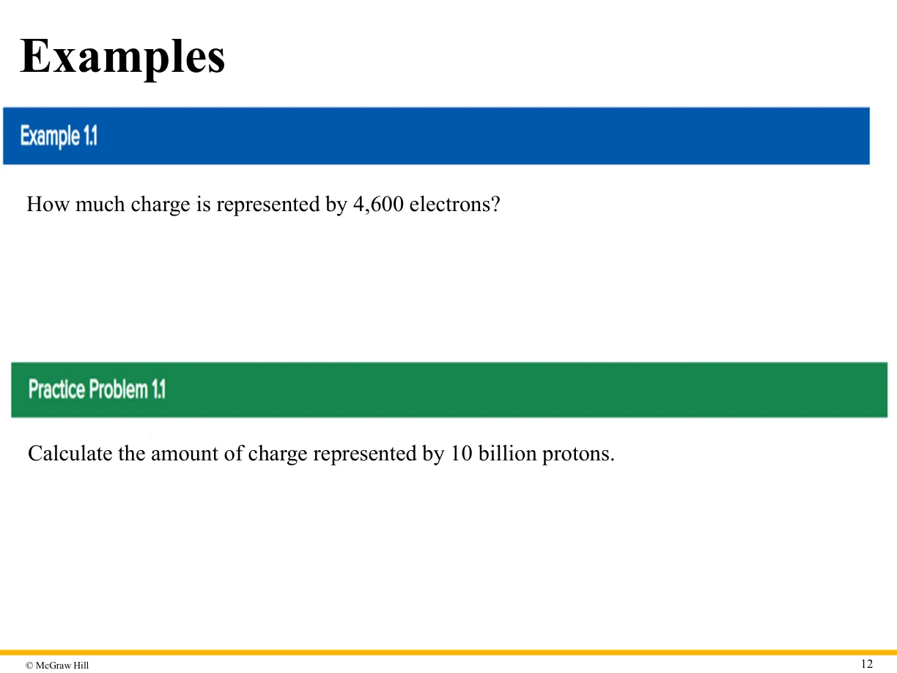
Worked solution · 1 steps
Count signed elementary charges
Each electron carries negative charge.
Check. Negative charge is required for electrons.
Source references
Question: ECET250E_Week01_Ch01_BasicConcepts_NoSolutions.pdf · page 12
Released solution: ECET 250E-WEEK 01-CHAPTER 01-BASIC CONCEPTS- With Solutions.pdf · page 13
Lecture examplePractice 1.1 · Proton charge
Problem
Find the charge represented by 10 billion protons.
View source diagram / question page
Original page for topology, polarities, and reference directions. Some lecture and key pages also show answers. Open the original file for full resolution.
Worked solution · 2 steps
Convert the count
Ten billion is ten to the tenth.
Multiply
Each proton has positive elementary charge.
Check. The last digit 1.6021 nC on the solution slide is a typographical inconsistency with its stated 1.602 constant.
Source references
Question: ECET250E_Week01_Ch01_BasicConcepts_NoSolutions.pdf · page 12
Released solution: ECET 250E-WEEK 01-CHAPTER 01-BASIC CONCEPTS- With Solutions.pdf · page 13
Lecture exampleExample 1.2 · Differentiate charge
Problem
Given q(t)=5t sin(4πt) mC, find i at t=0.5 s.
View source diagram / question page
Original page for topology, polarities, and reference directions. Some lecture and key pages also show answers. Open the original file for full resolution.
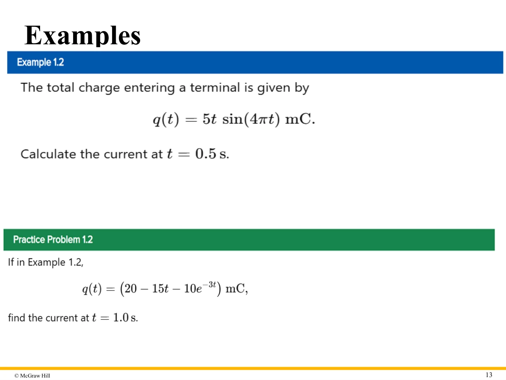
Worked solution · 2 steps
Differentiate using the product rule
Current is the derivative of charge.
Evaluate
At half a second the sine is zero and cosine is one.
Check. Units and signs follow the reference directions in the source diagram.
Source references
Question: ECET250E_Week01_Ch01_BasicConcepts_NoSolutions.pdf · page 13
Released solution: ECET 250E-WEEK 01-CHAPTER 01-BASIC CONCEPTS- With Solutions.pdf · page 15
Lecture examplePractice 1.2 · Exponential charge
Problem
Given q(t)=(20−15t−10e^(−3t)) mC, find i at 1 s.
View source diagram / question page
Original page for topology, polarities, and reference directions. Some lecture and key pages also show answers. Open the original file for full resolution.
Worked solution · 2 steps
Differentiate
The constant contributes zero.
Evaluate
Substitute one second.
Check. Units and signs follow the reference directions in the source diagram.
Source references
Question: ECET250E_Week01_Ch01_BasicConcepts_NoSolutions.pdf · page 13
Released solution: ECET 250E-WEEK 01-CHAPTER 01-BASIC CONCEPTS- With Solutions.pdf · page 15
Lecture exampleExample 1.3 · Integrate current
Problem
For i(t)=(3t²−t) A, find charge entering between 1 and 2 seconds.
View source diagram / question page
Original page for topology, polarities, and reference directions. Some lecture and key pages also show answers. Open the original file for full resolution.
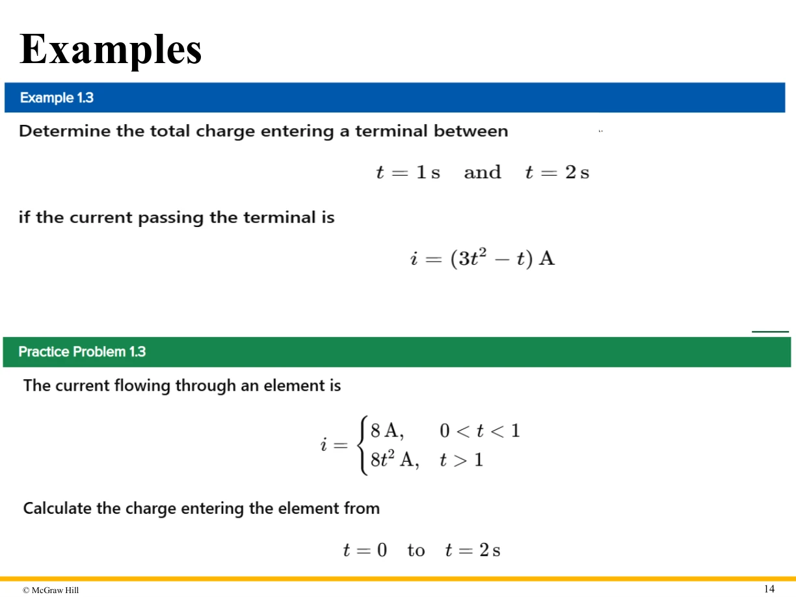
Worked solution · 1 steps
Integrate over the requested interval
Use net signed charge.
Check. Units and signs follow the reference directions in the source diagram.
Source references
Question: ECET250E_Week01_Ch01_BasicConcepts_NoSolutions.pdf · page 14
Released solution: ECET 250E-WEEK 01-CHAPTER 01-BASIC CONCEPTS- With Solutions.pdf · page 17
Lecture examplePractice 1.3 · Piecewise current
Problem
Current is 8 A for 0<t<1 s and 8t² A for t>1 s. Find charge from 0 to 2 s.
View source diagram / question page
Original page for topology, polarities, and reference directions. Some lecture and key pages also show answers. Open the original file for full resolution.
Worked solution · 1 steps
Split at the change
Integrate each expression only where it applies.
Check. Units and signs follow the reference directions in the source diagram.
Source references
Question: ECET250E_Week01_Ch01_BasicConcepts_NoSolutions.pdf · page 14
Released solution: ECET 250E-WEEK 01-CHAPTER 01-BASIC CONCEPTS- With Solutions.pdf · page 17
Lecture exampleExample 1.4 · Bulb voltage
Problem
A bulb carries 2 A for 10 s and releases 2.3 kJ. Find its voltage drop.
View source diagram / question page
Original page for topology, polarities, and reference directions. Some lecture and key pages also show answers. Open the original file for full resolution.
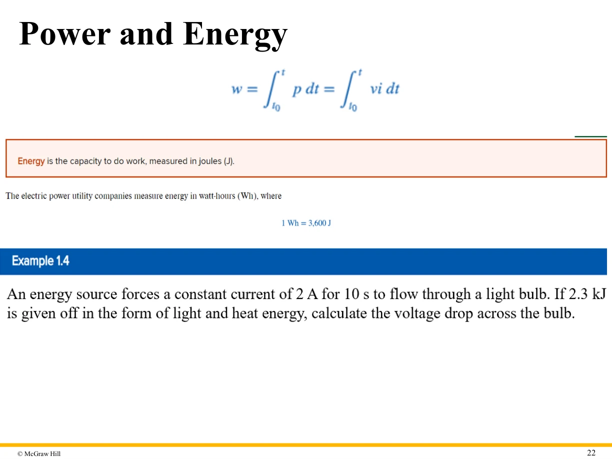
Worked solution · 2 steps
Find transferred charge
Constant current gives charge directly.
Divide energy by charge
Convert kilojoules to joules.
Check. Units and signs follow the reference directions in the source diagram.
Source references
Question: ECET250E_Week01_Ch01_BasicConcepts_NoSolutions.pdf · page 22
Released solution: ECET 250E-WEEK 01-CHAPTER 01-BASIC CONCEPTS- With Solutions.pdf · page 26
Lecture examplePractice 1.4 · Work and voltage
Problem
Moving charge from b to a takes 100 J. Find v_ab for (a) 5 C and (b) −10 C.
View source diagram / question page
Original page for topology, polarities, and reference directions. Some lecture and key pages also show answers. Open the original file for full resolution.
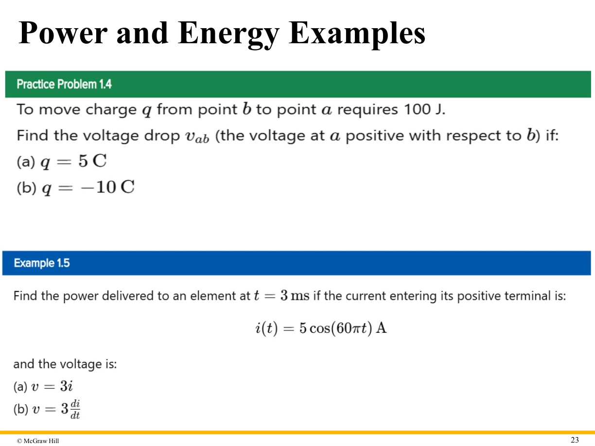
Worked solution · 1 steps
Use signed charge
Potential difference is work per charge.
Check. Units and signs follow the reference directions in the source diagram.
Source references
Question: ECET250E_Week01_Ch01_BasicConcepts_NoSolutions.pdf · page 23
Released solution: ECET 250E-WEEK 01-CHAPTER 01-BASIC CONCEPTS- With Solutions.pdf · page 28
Lecture exampleExample 1.5 · Instantaneous power
Problem
Current i=5cos(60πt) A enters the positive terminal. Find power at 3 ms for (a) v=3i and (b) v=3di/dt.
View source diagram / question page
Original page for topology, polarities, and reference directions. Some lecture and key pages also show answers. Open the original file for full resolution.
Worked solution · 3 steps
Resistive relation
Use p=vi with time in seconds.
Derivative relation
Differentiate before multiplying by current.
Evaluate
Use 60π(0.003)=0.18π.
Check. Negative instantaneous absorbed power means energy is being supplied at that instant.
Source references
Question: ECET250E_Week01_Ch01_BasicConcepts_NoSolutions.pdf · page 23
Released solution: ECET 250E-WEEK 01-CHAPTER 01-BASIC CONCEPTS- With Solutions.pdf · page 28
Lecture examplePractice 1.5 · Integral voltage relation
Problem
For i=5cos(60πt) A, find power at 5 ms for (a) v=6i and (b) v=6+10∫₀ᵗi(τ)dτ V.
View source diagram / question page
Original page for topology, polarities, and reference directions. Some lecture and key pages also show answers. Open the original file for full resolution.
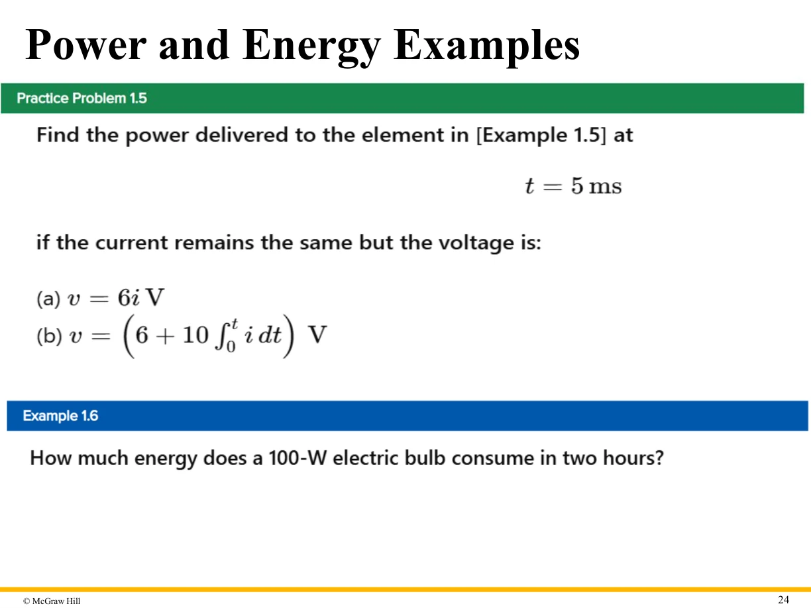
Worked solution · 3 steps
Part a
Evaluate the squared current.
Part b voltage
Integrate the current from zero.
Part b power
Multiply by the simultaneous current.
Check. Units and signs follow the reference directions in the source diagram.
Source references
Question: ECET250E_Week01_Ch01_BasicConcepts_NoSolutions.pdf · page 24
Released solution: ECET 250E-WEEK 01-CHAPTER 01-BASIC CONCEPTS- With Solutions.pdf · page 30
Lecture exampleExample 1.6 · Bulb energy
Problem
How much energy does a 100 W bulb consume in two hours?
View source diagram / question page
Original page for topology, polarities, and reference directions. Some lecture and key pages also show answers. Open the original file for full resolution.
Worked solution · 1 steps
Multiply power and time
Convert hours to seconds for joules.
Check. Units and signs follow the reference directions in the source diagram.
Source references
Question: ECET250E_Week01_Ch01_BasicConcepts_NoSolutions.pdf · page 24
Released solution: ECET 250E-WEEK 01-CHAPTER 01-BASIC CONCEPTS- With Solutions.pdf · page 30
Lecture examplePractice 1.6 · Heater energy
Problem
A heater draws 12 A at 115 V. Find energy consumed in 24 h.
View source diagram / question page
Original page for topology, polarities, and reference directions. Some lecture and key pages also show answers. Open the original file for full resolution.
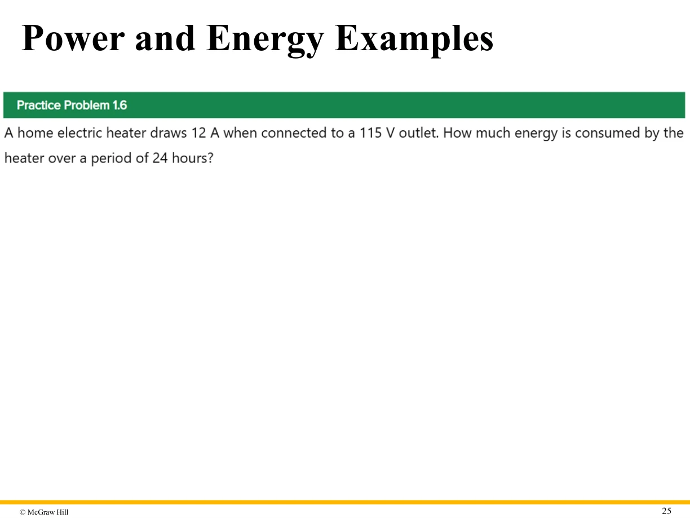
Worked solution · 2 steps
Find power
Multiply voltage and current.
Find energy
Use kilowatts and hours.
Check. Units and signs follow the reference directions in the source diagram.
Source references
Question: ECET250E_Week01_Ch01_BasicConcepts_NoSolutions.pdf · page 25
Released solution: ECET 250E-WEEK 01-CHAPTER 01-BASIC CONCEPTS- With Solutions.pdf · page 32
Lecture exampleExample 1.7 · Power balance
Problem
Calculate power supplied or absorbed by each element in the pictured circuit: I=5 A, branch current 6 A, and dependent current 0.2I.
View source diagram / question page
Original page for topology, polarities, and reference directions. Some lecture and key pages also show answers. Open the original file for full resolution.
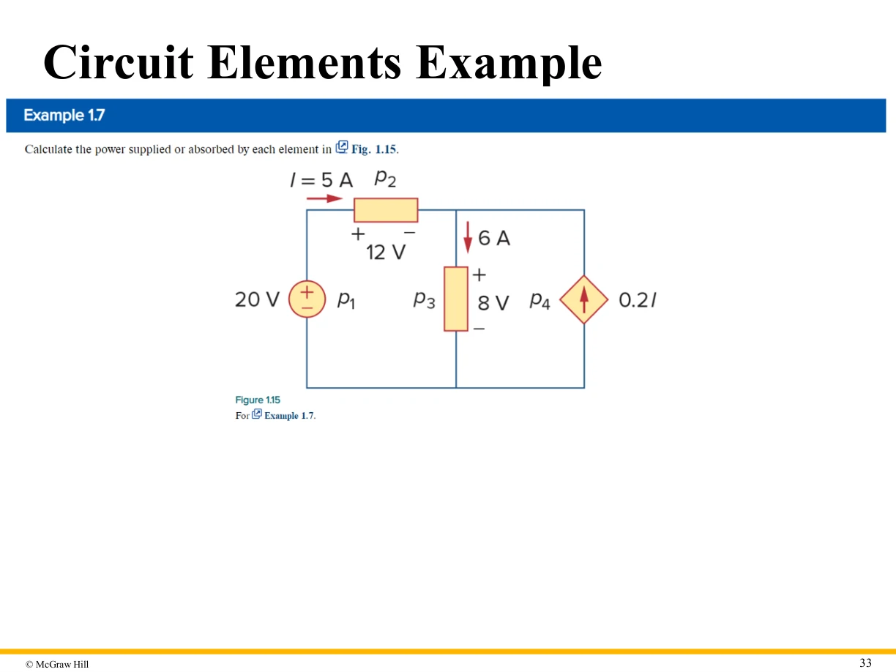
Worked solution · 2 steps
Apply the passive sign convention
P1 and P4 currents enter their negative voltage terminals.
Evaluate the remaining elements
The dependent current equals 1 A.
Check. Power balance: −100+60+48−8=0 W.
Source references
Question: ECET250E_Week01_Ch01_BasicConcepts_NoSolutions.pdf · page 33
Released solution: ECET 250E-WEEK 01-CHAPTER 01-BASIC CONCEPTS- With Solutions.pdf · page 41
Lecture exampleExtra example · Current from a charge graph
Problem
The plotted charge rises 0→30 mC over 0–2 ms, stays constant to 8 ms, and falls to zero at 12 ms. Find current at 2, 6, and 8 ms and sketch i(t).
View source diagram / question page
Original page for topology, polarities, and reference directions. Some lecture and key pages also show answers. Open the original file for full resolution.
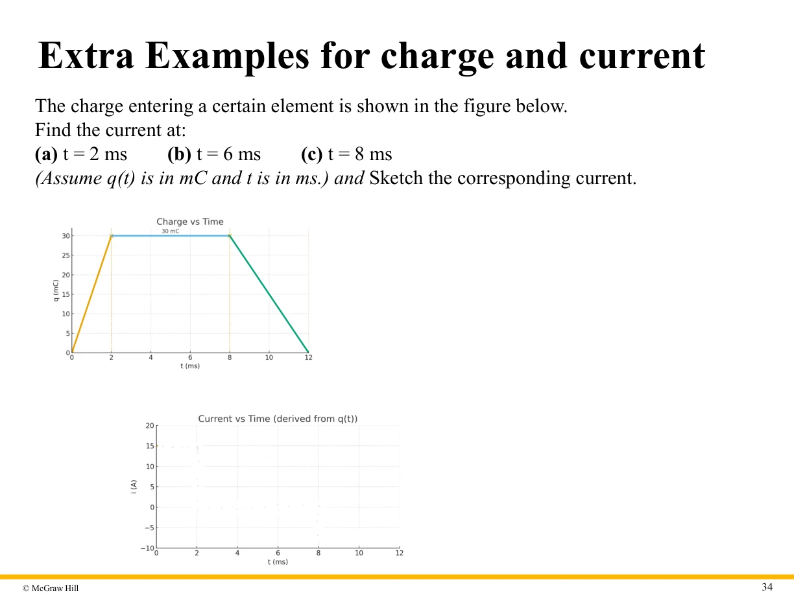
Worked solution · 2 steps
Calculate slopes
mC divided by ms equals amperes, not milliamperes.
Handle corners explicitly
At 2 ms the one-sided currents are 15 and 0 A; at 8 ms they are 0 and −7.5 A. The derivative has no unique value at either corner.
Check. Correction to instructor solution p.43: slopes are A, not mA; the corner times require one-sided values. Areas give 30−30=0 mC net charge.
Source references
Question: ECET250E_Week01_Ch01_BasicConcepts_NoSolutions.pdf · page 34
Released solution: ECET 250E-WEEK 01-CHAPTER 01-BASIC CONCEPTS- With Solutions.pdf · page 43
Lecture exampleExtra example · Charge from a current graph
Problem
Current rises linearly from 0 to 12 mA over 0–1 ms, then is 6 mA over 1–2 ms. Find total charge.
View source diagram / question page
Original page for topology, polarities, and reference directions. Some lecture and key pages also show answers. Open the original file for full resolution.
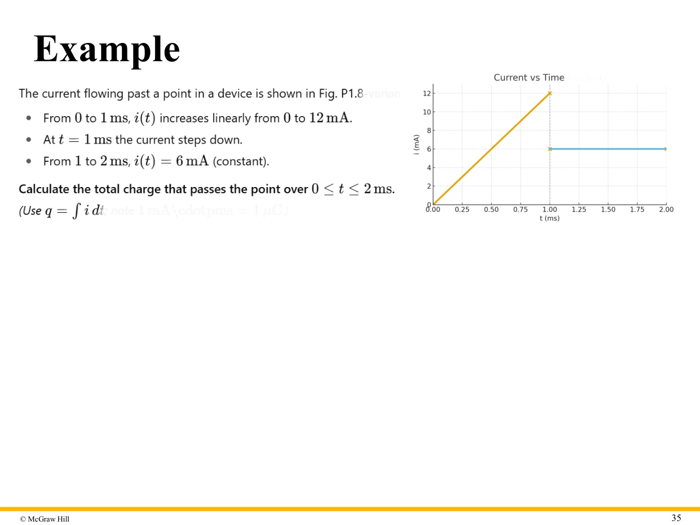
Worked solution · 2 steps
Triangle
The first interval contributes triangular area.
Rectangle
Add the constant-current interval.
Check. mA·ms equals μC.
Source references
Question: ECET250E_Week01_Ch01_BasicConcepts_NoSolutions.pdf · page 35
Released solution: ECET 250E-WEEK 01-CHAPTER 01-BASIC CONCEPTS- With Solutions.pdf · page 45
Problem setProblem set 1 · Question 1
Problem
Find charge for (a) 6.482×10¹⁷, (b) 1.24×10¹⁸, (c) 2.46×10¹⁹, (d) 1.628×10²⁰ electrons.
View source diagram / question page
Original page for topology, polarities, and reference directions. Some lecture and key pages also show answers. Open the original file for full resolution.
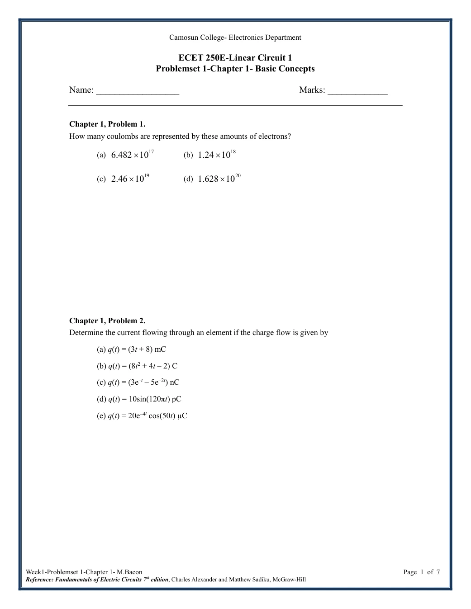
Worked solution · 2 steps
Use the electron charge
Multiply each count by −1.602×10⁻¹⁹ C.
Substitute each count
All four populations are negatively charged.
Check. Units and signs follow the reference directions in the source diagram.
Source references
Question: ECET 250E-Linear Circuit 1-Problemset 1-Chapter 1.pdf · page 1
Released solution: ECET 250E-Linear Circuit 1-Problemset 1-Chapter 1-Solution.docx
Problem setProblem set 1 · Question 2
Problem
Find i(t) for q(t): (a) (3t+8) mC; (b) (8t²+4t−2) C; (c) (3e⁻ᵗ−5e⁻²ᵗ) nC; (d) 10sin(120πt) pC; (e) 20e⁻⁴ᵗcos(50t) μC.
View source diagram / question page
Original page for topology, polarities, and reference directions. Some lecture and key pages also show answers. Open the original file for full resolution.
Worked solution · 3 steps
Polynomial derivatives
Differentiate q with respect to seconds.
Chain rule
Differentiate the exponentials and sine.
Product rule
Both the exponential and cosine vary.
Check. Units and signs follow the reference directions in the source diagram.
Source references
Question: ECET 250E-Linear Circuit 1-Problemset 1-Chapter 1.pdf · page 1
Released solution: ECET 250E-Linear Circuit 1-Problemset 1-Chapter 1-Solution.docx
Problem setProblem set 1 · Question 3
Problem
Find q(t): (a) i=3 A, q(0)=1 C; (b) i=(2t+5) mA, q(0)=0; (c) i=20cos(10t+π/6) μA, q(0)=2 μC.
View source diagram / question page
Original page for topology, polarities, and reference directions. Some lecture and key pages also show answers. Open the original file for full resolution.
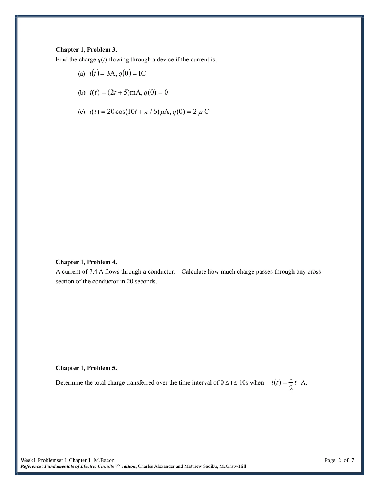
Worked solution · 3 steps
Include initial charge
Integrate from zero to t.
Parts a and b
Integrate the constant and polynomial.
Part c
Subtract the sine at the lower limit.
Check. At t=0 these give the three specified initial charges. Correction: the instructor DOCX writes +2 μC as the integration constant in part (c); that would give q(0)=3 μC. The correct constant is +1 μC.
Source references
Question: ECET 250E-Linear Circuit 1-Problemset 1-Chapter 1.pdf · page 2
Released solution: ECET 250E-Linear Circuit 1-Problemset 1-Chapter 1-Solution.docx
Problem setProblem set 1 · Question 4
Problem
A conductor carries 7.4 A for 20 s. Find transferred charge.
View source diagram / question page
Original page for topology, polarities, and reference directions. Some lecture and key pages also show answers. Open the original file for full resolution.
Worked solution · 1 steps
Integrate constant current
Charge is current times elapsed time.
Check. Units and signs follow the reference directions in the source diagram.
Source references
Question: ECET 250E-Linear Circuit 1-Problemset 1-Chapter 1.pdf · page 2
Released solution: ECET 250E-Linear Circuit 1-Problemset 1-Chapter 1-Solution.docx
Problem setProblem set 1 · Question 5
Problem
Find total charge from 0 to 10 s when i(t)=t/2 A.
View source diagram / question page
Original page for topology, polarities, and reference directions. Some lecture and key pages also show answers. Open the original file for full resolution.
Worked solution · 1 steps
Integrate the ramp
Use its triangular area or integrate directly.
Check. Units and signs follow the reference directions in the source diagram.
Source references
Question: ECET 250E-Linear Circuit 1-Problemset 1-Chapter 1.pdf · page 2
Released solution: ECET 250E-Linear Circuit 1-Problemset 1-Chapter 1-Solution.docx
Problem setProblem set 1 · Question 6
Problem
For Fig.1.23, charge rises 0→30 mC over 0–2 ms, is constant to 8 ms, then falls to zero at 12 ms. Find i at 1, 6, and 10 ms.
View source diagram / question page
Original page for topology, polarities, and reference directions. Some lecture and key pages also show answers. Open the original file for full resolution.
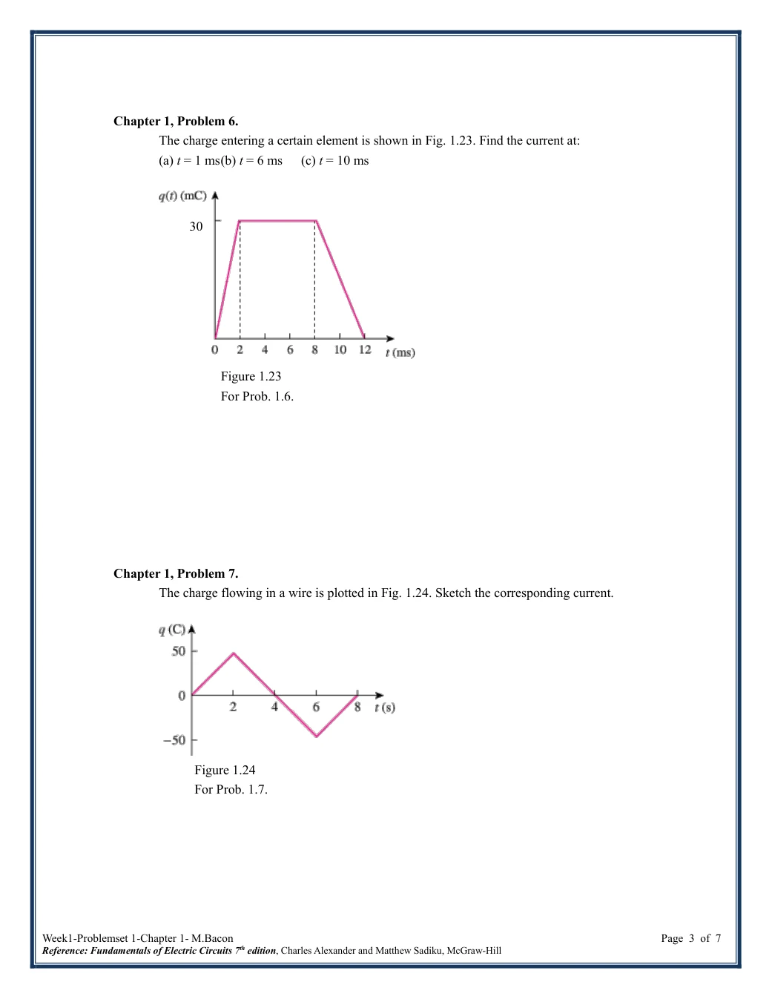
Worked solution · 2 steps
Read the local slope
Current equals charge slope.
Falling segment
Its slope is negative.
Check. mC/ms = A. The requested times lie inside straight segments.
Source references
Question: ECET 250E-Linear Circuit 1-Problemset 1-Chapter 1.pdf · page 3
Released solution: ECET 250E-Linear Circuit 1-Problemset 1-Chapter 1-Solution.docx
Problem setProblem set 1 · Question 7
Problem
Sketch i(t) for the charge graph through (0 s,0 C), (2 s,50 C), (6 s,−50 C), (8 s,0 C).
View source diagram / question page
Original page for topology, polarities, and reference directions. Some lecture and key pages also show answers. Open the original file for full resolution.
Worked solution · 1 steps
Differentiate each line
The current is a horizontal segment equal to each slope.
Check. Draw open endpoints at corners; the ideal derivative is undefined there. Net charge is 50−100+50=0 C.
Source references
Question: ECET 250E-Linear Circuit 1-Problemset 1-Chapter 1.pdf · page 3
Released solution: ECET 250E-Linear Circuit 1-Problemset 1-Chapter 1-Solution.docx
Problem setProblem set 1 · Question 8
Problem
Fig.1.25 current rises 0→10 mA in 1 ms and stays at 10 mA until 2 ms. Find total charge.
View source diagram / question page
Original page for topology, polarities, and reference directions. Some lecture and key pages also show answers. Open the original file for full resolution.
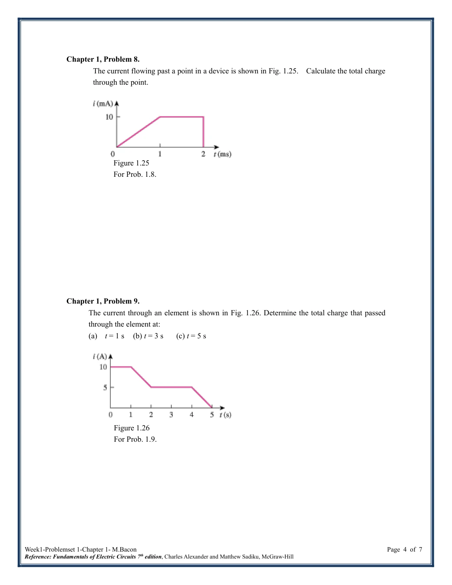
Worked solution · 1 steps
Add triangle and rectangle
Integrate the area under the graph.
Check. mA·ms = μC.
Source references
Question: ECET 250E-Linear Circuit 1-Problemset 1-Chapter 1.pdf · page 4
Released solution: ECET 250E-Linear Circuit 1-Problemset 1-Chapter 1-Solution.docx
Problem setProblem set 1 · Question 9
Problem
Fig.1.26 current is 10 A from 0–1 s, falls to 5 A at 2 s, remains at 5 A to 4 s, then falls to zero at 5 s. Find charge passed by 1, 3, and 5 s.
View source diagram / question page
Original page for topology, polarities, and reference directions. Some lecture and key pages also show answers. Open the original file for full resolution.
Worked solution · 3 steps
At one second
First rectangle.
At three seconds
Add the trapezoid and one second at 5 A.
At five seconds
Add another second at 5 A and the final triangle.
Check. These are accumulated charges relative to t=0.
Source references
Question: ECET 250E-Linear Circuit 1-Problemset 1-Chapter 1.pdf · page 4
Released solution: ECET 250E-Linear Circuit 1-Problemset 1-Chapter 1-Solution.docx
Problem setProblem set 1 · Question 10
Problem
A 10 kA lightning bolt lasts 15 μs. Find deposited charge.
View source diagram / question page
Original page for topology, polarities, and reference directions. Some lecture and key pages also show answers. Open the original file for full resolution.
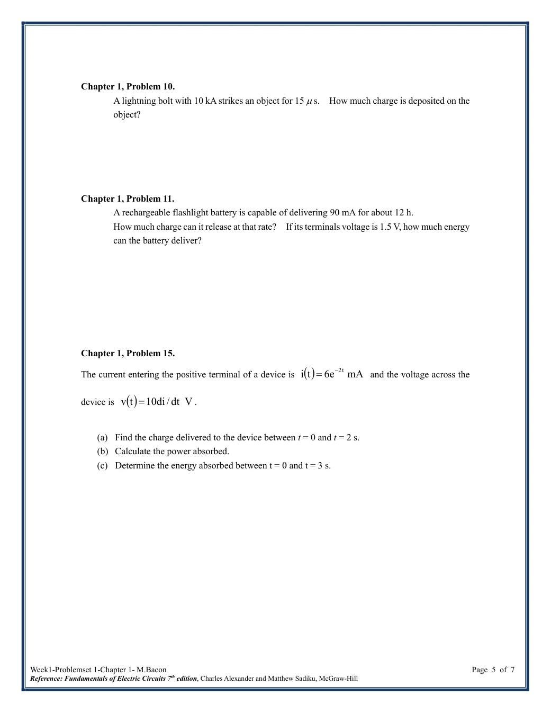
Worked solution · 1 steps
Convert prefixes
Multiply in SI units.
Check. Units and signs follow the reference directions in the source diagram.
Source references
Question: ECET 250E-Linear Circuit 1-Problemset 1-Chapter 1.pdf · page 5
Released solution: ECET 250E-Linear Circuit 1-Problemset 1-Chapter 1-Solution.docx
Problem setProblem set 1 · Question 11
Problem
A 1.5 V battery delivers 90 mA for 12 h. Find released charge and delivered energy.
View source diagram / question page
Original page for topology, polarities, and reference directions. Some lecture and key pages also show answers. Open the original file for full resolution.
Worked solution · 2 steps
Charge
Convert the duration to seconds.
Energy
Multiply terminal voltage by charge.
Check. Units and signs follow the reference directions in the source diagram.
Source references
Question: ECET 250E-Linear Circuit 1-Problemset 1-Chapter 1.pdf · page 5
Released solution: ECET 250E-Linear Circuit 1-Problemset 1-Chapter 1-Solution.docx
Problem setProblem set 1 · Question 15
Problem
Current i(t)=6e⁻²ᵗ mA enters the positive terminal and v(t)=10di/dt V. Find charge from 0–2 s, absorbed power, and absorbed energy from 0–3 s.
View source diagram / question page
Original page for topology, polarities, and reference directions. Some lecture and key pages also show answers. Open the original file for full resolution.
Worked solution · 3 steps
Convert current to amperes
The voltage relation uses the SI derivative.
Charge and power
Integrate current; multiply voltage and current.
Energy
Integrate signed power.
Check. Negative absorbed energy indicates net delivery. Treating the numerical mA value as amperes would introduce a factor-of-1000 error in voltage.
Source references
Question: ECET 250E-Linear Circuit 1-Problemset 1-Chapter 1.pdf · page 5
Released solution: ECET 250E-Linear Circuit 1-Problemset 1-Chapter 1-Solution.docx
Problem setProblem set 1 · Question 17
Problem
Given p1=−205 W, p2=60 W, p4=45 W, p5=30 W in Fig.1.28, find p3.
View source diagram / question page
Original page for topology, polarities, and reference directions. Some lecture and key pages also show answers. Open the original file for full resolution.
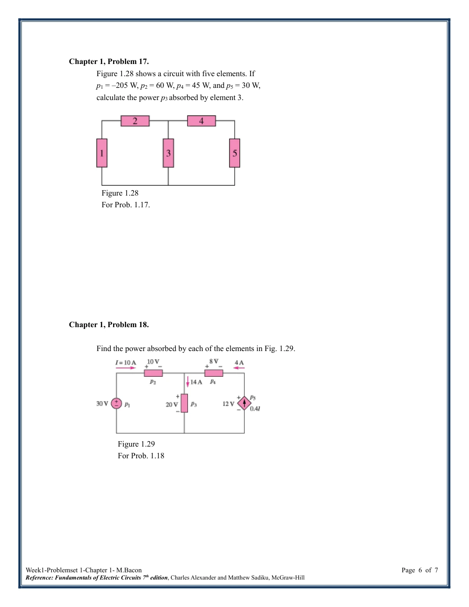
Worked solution · 1 steps
Conserve power
The algebraic sum of all absorbed powers is zero.
Check. −205+60+70+45+30=0 W.
Source references
Question: ECET 250E-Linear Circuit 1-Problemset 1-Chapter 1.pdf · page 6
Released solution: ECET 250E-Linear Circuit 1-Problemset 1-Chapter 1-Solution.docx
Problem setProblem set 1 · Question 18
Problem
Find absorbed power for all five elements of Fig.1.29, using I=10 A, center current 14 A, and dependent current 0.4I=4 A.
View source diagram / question page
Original page for topology, polarities, and reference directions. Some lecture and key pages also show answers. Open the original file for full resolution.
Worked solution · 2 steps
Left and middle elements
Use positive power when current enters the positive terminal.
Right elements
Both currents enter their negative terminals.
Check. Power sums to −300+100+280−32−48=0 W.
Source references
Question: ECET 250E-Linear Circuit 1-Problemset 1-Chapter 1.pdf · page 6
Released solution: ECET 250E-Linear Circuit 1-Problemset 1-Chapter 1-Solution.docx
Problem setProblem set 1 · Question 19
Problem
In Fig.1.30, an 8 A current source feeds a 2 A center branch and right branch i. Find i and absorbed powers of all four elements.
View source diagram / question page
Original page for topology, polarities, and reference directions. Some lecture and key pages also show answers. Open the original file for full resolution.
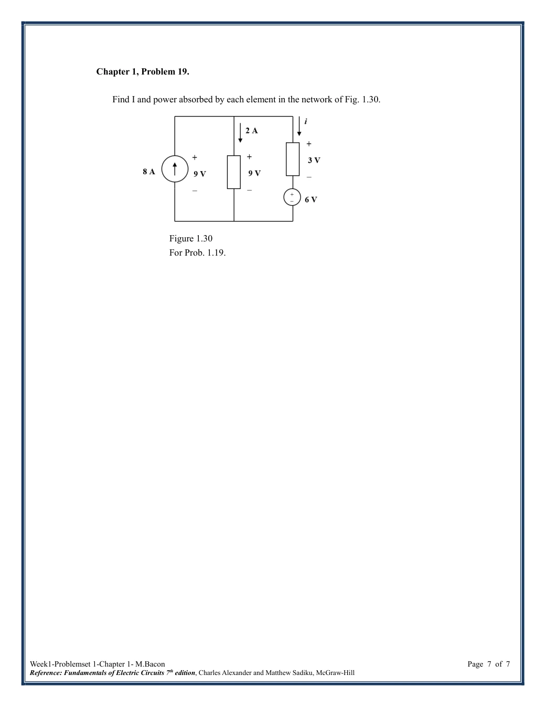
Worked solution · 2 steps
KCL
The incoming 8 A splits into the two branches.
Apply terminal signs
The current source supplies; the other three elements absorb.
Check. −72+18+18+36=0 W.
Source references
Question: ECET 250E-Linear Circuit 1-Problemset 1-Chapter 1.pdf · page 7
Released solution: ECET 250E-Linear Circuit 1-Problemset 1-Chapter 1-Solution.docx
02Basic laws37 worked problems37
Lecture exampleWorked illustration · Resistor colour codes
Problem
Decode the illustrated colour bands: brown–black–red–gold; red–green–yellow–black–brown; red–black–yellow–silver; and brown–black–brown–gold.
View source diagram / question page
Original page for topology, polarities, and reference directions. Some lecture and key pages also show answers. Open the original file for full resolution.
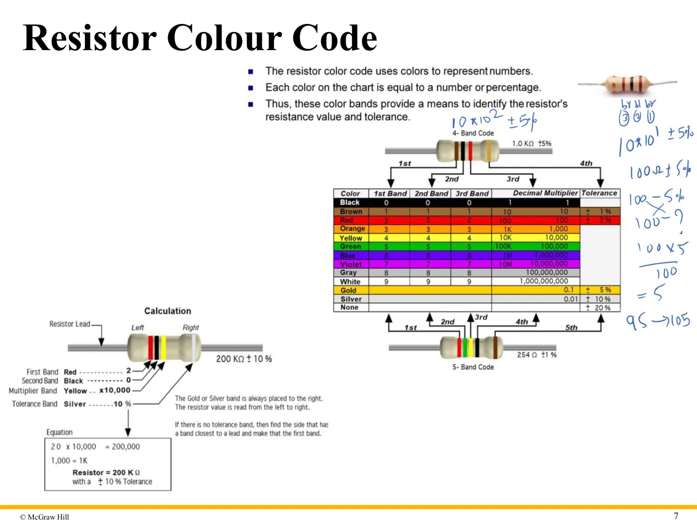
Worked solution · 3 steps
Four-band 1 kΩ resistor
First two colours give 10, red multiplies by 100, and gold means ±5%.
Five-band resistor
Three digits 254, black multiplier 1, brown tolerance ±1%.
Other illustrated examples
Red–black–yellow gives 20×10000; brown–black–brown gives 10×10.
Check. Tolerance bounds come from Rnominal(1±fraction).
Source references
Question: ECET 250E-WEEK 02-CHAPTER 02-BASIC LAW1.pdf · page 7
Released solution: ECET 250E-WEEK 02-CHAPTER 02-BASIC LAW-With Solutions.pdf · page 7
Lecture exampleWorked illustration · Megohms to microsiemens
Problem
Find the conductance of a 1 MΩ resistor.
View source diagram / question page
Original page for topology, polarities, and reference directions. Some lecture and key pages also show answers. Open the original file for full resolution.
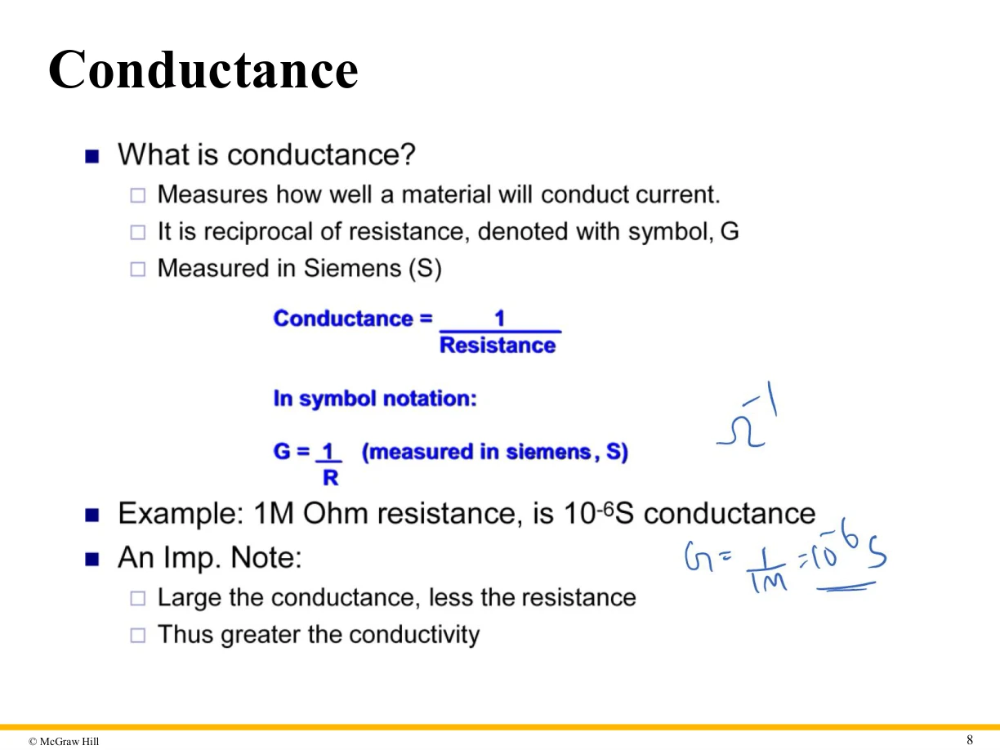
Worked solution · 1 steps
Take the reciprocal in ohms
Mega means one million.
Check. Conductance is in siemens, the reciprocal of ohms.
Source references
Question: ECET 250E-WEEK 02-CHAPTER 02-BASIC LAW1.pdf · page 8
Released solution: ECET 250E-WEEK 02-CHAPTER 02-BASIC LAW-With Solutions.pdf · page 8
Lecture exampleWorked illustration · Six resistor polarities
Problem
For the six pictured 12 V single-resistor loops, read the current direction and passive voltage polarity. Resistors, reading rows left to right, are 4, 6, 8, 3, 2, and 6 Ω.
View source diagram / question page
Original page for topology, polarities, and reference directions. Some lecture and key pages also show answers. Open the original file for full resolution.
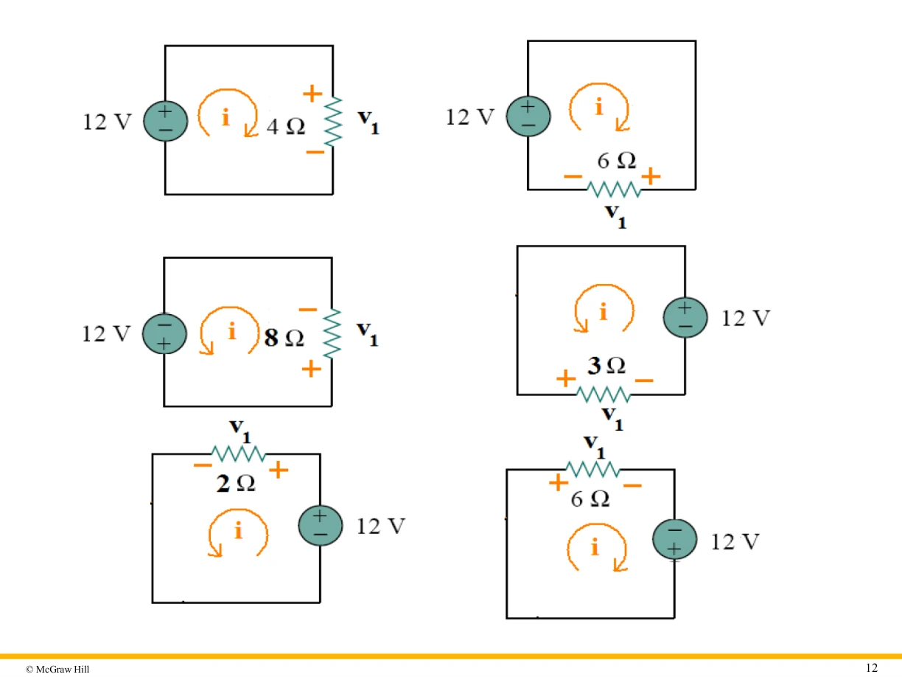
Worked solution · 2 steps
Current magnitude
Each loop has only one resistor across 12 V.
Current direction
Follow each source from positive through the resistor: clockwise for panels 1, 2, and 6; counterclockwise for panels 3, 4, and 5.
Check. Current enters the positive resistor terminal in all six panels.
Source references
Question: ECET 250E-WEEK 02-CHAPTER 02-BASIC LAW1.pdf · page 12
Released solution: ECET 250E-WEEK 02-CHAPTER 02-BASIC LAW-With Solutions.pdf · page 12
Lecture exampleVoltage sign examples · Same circuit, reversed reference
Problem
For the two illustrated 12 V circuits, determine v1 when the reference polarity is (1) plus at the resistor top and (2) plus at its bottom.
View source diagram / question page
Original page for topology, polarities, and reference directions. Some lecture and key pages also show answers. Open the original file for full resolution.
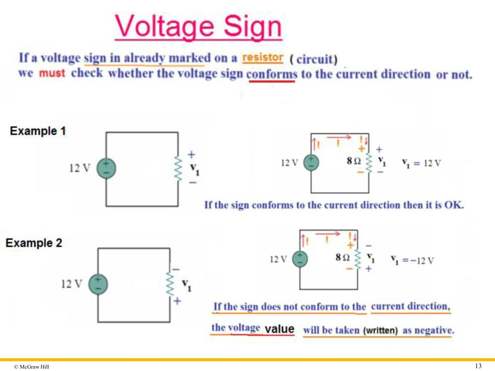
Worked solution · 2 steps
Fix the physical node potentials
The source holds the resistor top 12 V above its bottom.
Apply each reference
Changing a reference reverses the reported sign, not the physical voltage.
Check. With the shown 8 Ω resistor the physical current is 12/8=1.5 A downward.
Source references
Question: ECET 250E-WEEK 02-CHAPTER 02-BASIC LAW1.pdf · page 13
Released solution: ECET 250E-WEEK 02-CHAPTER 02-BASIC LAW-With Solutions.pdf · page 13
Lecture exampleExample 2.1 · Iron resistance
Problem
An iron operates at 120 V and draws 2 A. Find its resistance.
View source diagram / question page
Original page for topology, polarities, and reference directions. Some lecture and key pages also show answers. Open the original file for full resolution.
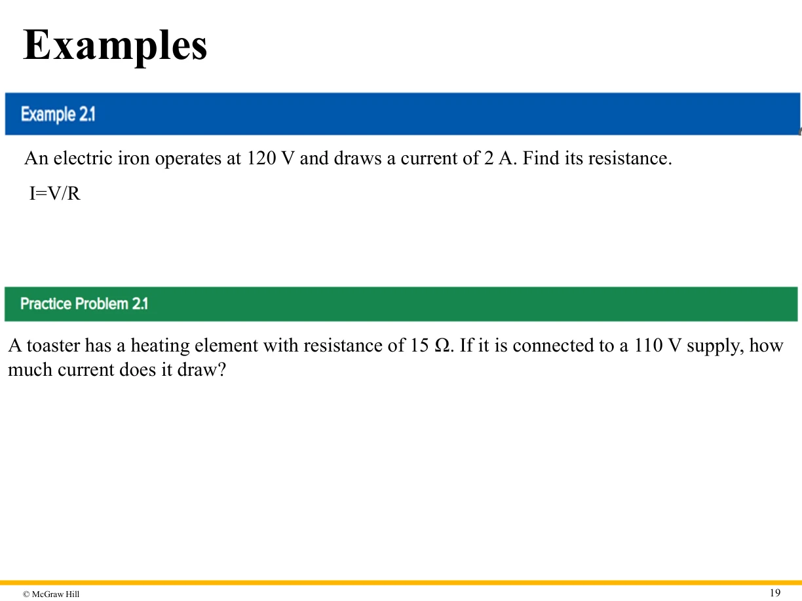
Worked solution · 1 steps
Rearrange Ohm’s law
Resistance is voltage divided by current.
Check. Units and signs follow the reference directions in the source diagram.
Source references
Question: ECET 250E-WEEK 02-CHAPTER 02-BASIC LAW1.pdf · page 19
Released solution: ECET 250E-WEEK 02-CHAPTER 02-BASIC LAW-With Solutions.pdf · page 19
Lecture examplePractice 2.1 · Toaster current
Problem
A 15 Ω toaster element connects to 110 V. Find its current.
View source diagram / question page
Original page for topology, polarities, and reference directions. Some lecture and key pages also show answers. Open the original file for full resolution.
Worked solution · 1 steps
Apply Ohm’s law
Use the given resistance at operating conditions.
Check. Units and signs follow the reference directions in the source diagram.
Source references
Question: ECET 250E-WEEK 02-CHAPTER 02-BASIC LAW1.pdf · page 19
Released solution: ECET 250E-WEEK 02-CHAPTER 02-BASIC LAW-With Solutions.pdf · page 19
Lecture exampleExample 2.2 · Current, conductance, power
Problem
For the 30 V source and 5 kΩ resistor in Fig.2.8, find i, G, and p.
View source diagram / question page
Original page for topology, polarities, and reference directions. Some lecture and key pages also show answers. Open the original file for full resolution.
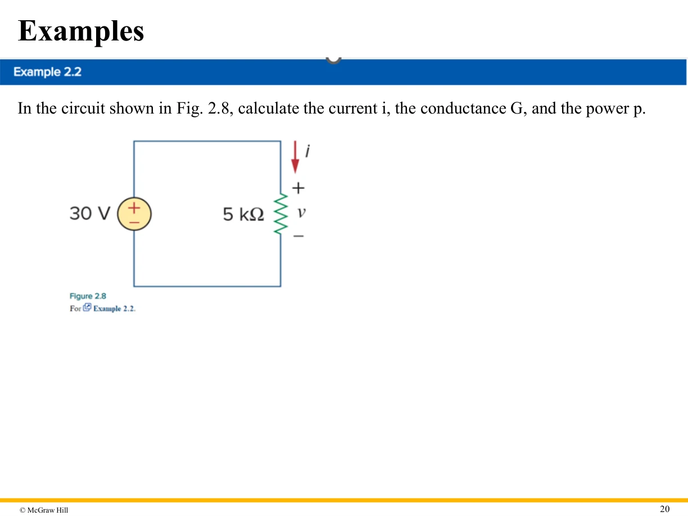
Worked solution · 2 steps
Current and conductance
Convert kiloohms to ohms.
Power
Current enters the resistor’s positive terminal.
Check. Units and signs follow the reference directions in the source diagram.
Source references
Question: ECET 250E-WEEK 02-CHAPTER 02-BASIC LAW1.pdf · page 20
Released solution: ECET 250E-WEEK 02-CHAPTER 02-BASIC LAW-With Solutions.pdf · page 20
Lecture examplePractice 2.2 · Current-driven resistor
Problem
The 3 mA source feeds a 10 kΩ resistor in Fig.2.9. Find v, G, and p.
View source diagram / question page
Original page for topology, polarities, and reference directions. Some lecture and key pages also show answers. Open the original file for full resolution.
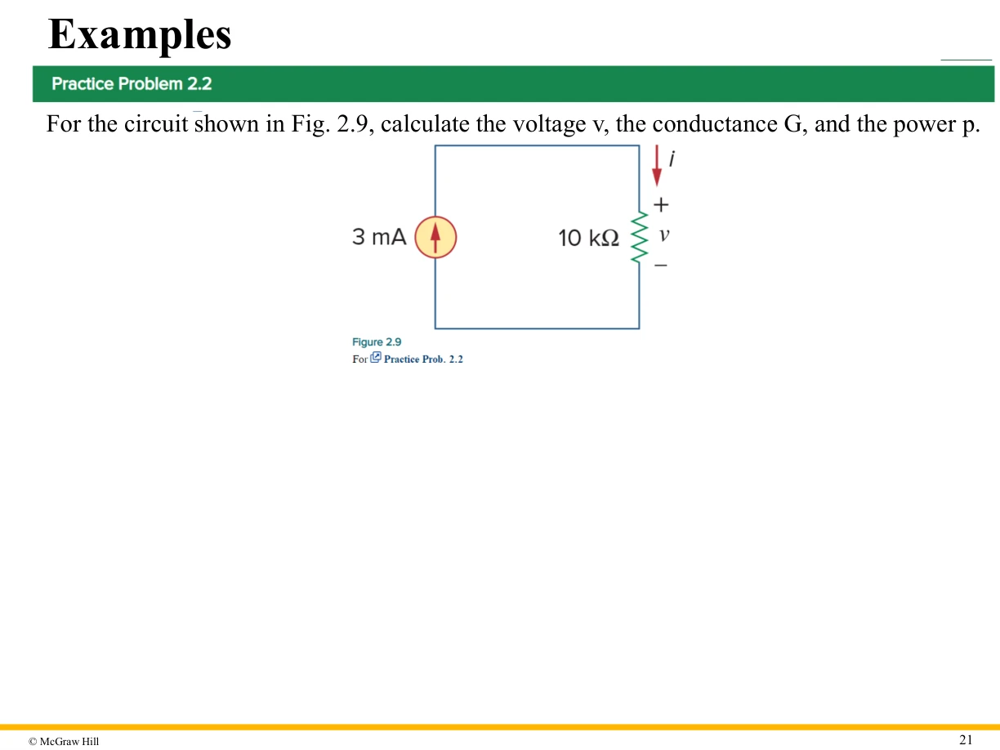
Worked solution · 2 steps
Ohm’s law and reciprocal resistance
Use SI current.
Power
The resistor absorbs energy.
Check. Units and signs follow the reference directions in the source diagram.
Source references
Question: ECET 250E-WEEK 02-CHAPTER 02-BASIC LAW1.pdf · page 21
Released solution: ECET 250E-WEEK 02-CHAPTER 02-BASIC LAW-With Solutions.pdf · page 21
Lecture exampleExample 2.3 · Sinusoidal resistor
Problem
A voltage 20sin(πt) V is applied to a 5 kΩ resistor. Find current and dissipated power.
View source diagram / question page
Original page for topology, polarities, and reference directions. Some lecture and key pages also show answers. Open the original file for full resolution.
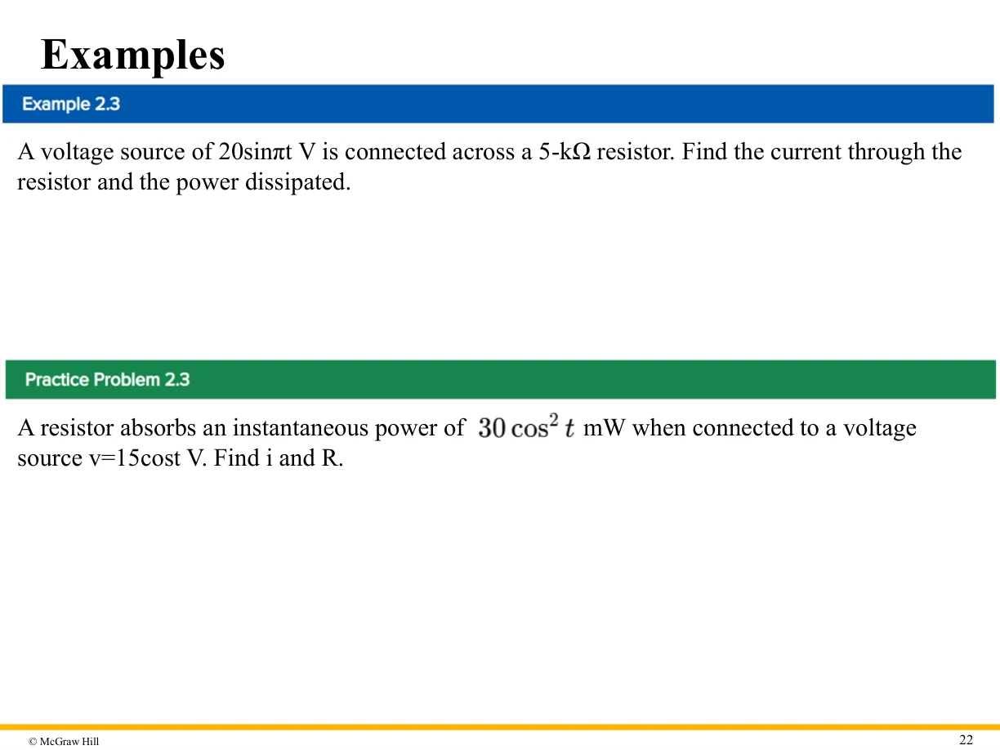
Worked solution · 2 steps
Current
Divide the complete voltage waveform by R.
Power
Square the voltage and divide by resistance.
Check. Power stays nonnegative.
Source references
Question: ECET 250E-WEEK 02-CHAPTER 02-BASIC LAW1.pdf · page 22
Released solution: ECET 250E-WEEK 02-CHAPTER 02-BASIC LAW-With Solutions.pdf · page 22
Lecture examplePractice 2.3 · Infer resistance from power
Problem
A resistor absorbs p=30cos²(t) mW when v=15cos(t) V. Find i and R.
View source diagram / question page
Original page for topology, polarities, and reference directions. Some lecture and key pages also show answers. Open the original file for full resolution.
Worked solution · 2 steps
Match the waveform coefficients
Since p=v²/R, the cosine-squared terms cancel away from their zeros.
Find current
The result extends continuously through the voltage zeros.
Check. Units and signs follow the reference directions in the source diagram.
Source references
Question: ECET 250E-WEEK 02-CHAPTER 02-BASIC LAW1.pdf · page 22
Released solution: ECET 250E-WEEK 02-CHAPTER 02-BASIC LAW-With Solutions.pdf · page 22
Lecture exampleExample 2.4 · Nodes and branches
Problem
Count branches and nodes in Fig.2.12, and identify series and parallel elements.
View source diagram / question page
Original page for topology, polarities, and reference directions. Some lecture and key pages also show answers. Open the original file for full resolution.
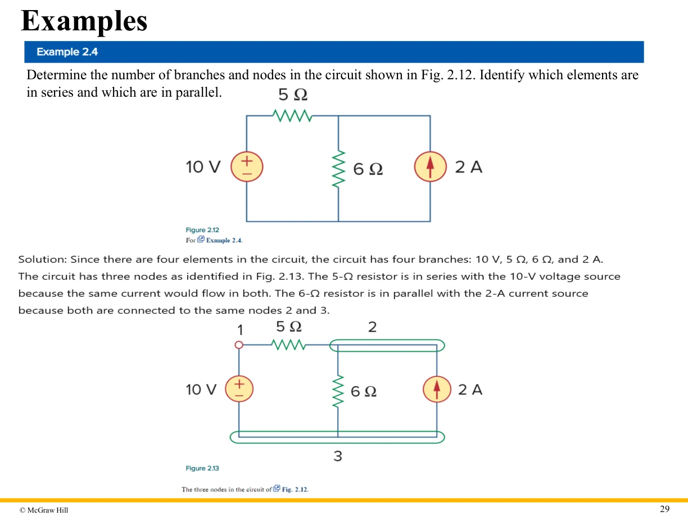
Worked solution · 2 steps
Count elements and connected conductor regions
The 10 V source, 5 Ω resistor, 6 Ω resistor and 2 A source are four branches; the wires form three nodes.
Identify shared connections
The 10 V source and 5 Ω resistor share a node with no other branch: series. The 6 Ω resistor and 2 A source share both nodes: parallel.
Check. The graph relation confirms two independent loops.
Source references
Question: ECET 250E-WEEK 02-CHAPTER 02-BASIC LAW1.pdf · page 29
Released solution: ECET 250E-WEEK 02-CHAPTER 02-BASIC LAW-With Solutions.pdf · page 29
Lecture examplePractice 2.4 · Network topology
Problem
Count branches and nodes in Fig.2.13 and identify series/parallel elements.
View source diagram / question page
Original page for topology, polarities, and reference directions. Some lecture and key pages also show answers. Open the original file for full resolution.
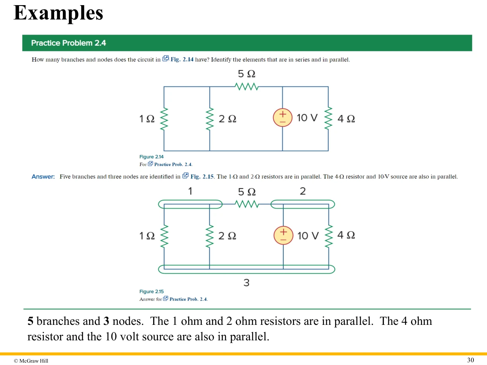
Worked solution · 2 steps
Count
Four resistors and one voltage source make five branches; there are three distinct nodes.
Compare terminal pairs
1 Ω and 2 Ω are parallel. The 4 Ω resistor and 10 V source are parallel. No pair is in series because their common nodes have additional branches.
Check. Units and signs follow the reference directions in the source diagram.
Source references
Question: ECET 250E-WEEK 02-CHAPTER 02-BASIC LAW1.pdf · page 30
Released solution: ECET 250E-WEEK 02-CHAPTER 02-BASIC LAW-With Solutions.pdf · page 30
Lecture exampleVoltage equation practice · Three loops
Problem
Write voltage equations for the three illustrated loops, retaining the indicated voltage polarities.
View source diagram / question page
Original page for topology, polarities, and reference directions. Some lecture and key pages also show answers. Open the original file for full resolution.
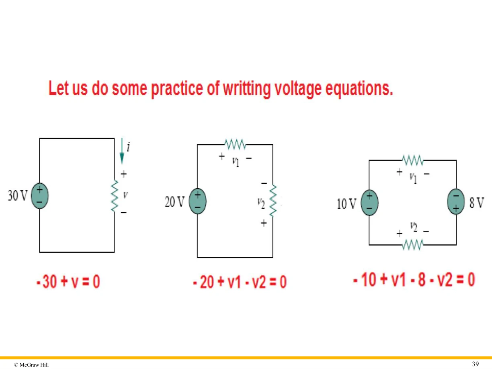
Worked solution · 3 steps
First loop
One 30 V source and one unknown voltage.
Second loop
The indicated v2 polarity is reversed relative to the loop drop.
Third loop
Both independent sources provide rises in the selected loop traversal.
Check. The last two loops determine voltage differences; no resistance values are provided to determine each voltage separately.
Source references
Question: ECET 250E-WEEK 02-CHAPTER 02-BASIC LAW1.pdf · page 39
Released solution: ECET 250E-WEEK 02-CHAPTER 02-BASIC LAW-With Solutions.pdf · page 39
Lecture exampleExample 2.5 · Series circuit with reversed polarity
Problem
Find v1 and v2 for Fig.2.21: a 20 V source, 2 Ω and 3 Ω resistors in series, with the shown voltage polarities.
View source diagram / question page
Original page for topology, polarities, and reference directions. Some lecture and key pages also show answers. Open the original file for full resolution.
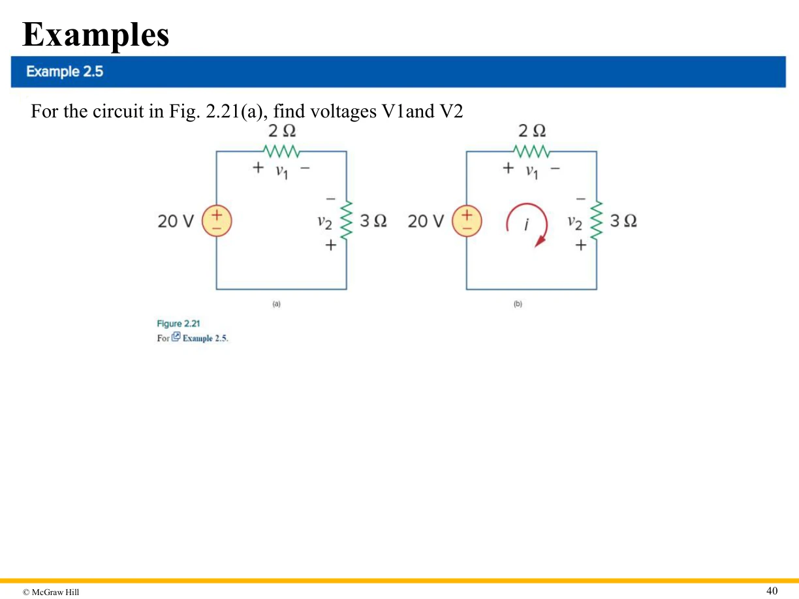
Worked solution · 2 steps
Loop current
Choose clockwise current.
Respect voltage polarity
v1 follows passive convention; v2 is marked opposite.
Check. KVL: −20+v1−v2=−20+8+12=0.
Source references
Question: ECET 250E-WEEK 02-CHAPTER 02-BASIC LAW1.pdf · page 40
Released solution: ECET 250E-WEEK 02-CHAPTER 02-BASIC LAW-With Solutions.pdf · page 40
Lecture examplePractice 2.5 · Signed voltage source
Problem
Find v1 and v2 in the illustrated loop with 32 V and −8 V sources and 4 Ω and 2 Ω resistors.
View source diagram / question page
Original page for topology, polarities, and reference directions. Some lecture and key pages also show answers. Open the original file for full resolution.
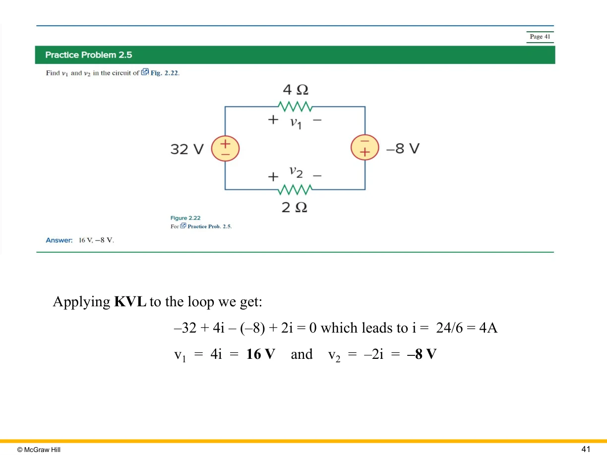
Worked solution · 2 steps
KVL
Keep the negative numerical source value and its drawn polarity.
Resistor polarities
The bottom voltage is opposite the clockwise current.
Check. Units and signs follow the reference directions in the source diagram.
Source references
Question: ECET 250E-WEEK 02-CHAPTER 02-BASIC LAW-With Solutions.pdf · page 41
Released solution: ECET 250E-WEEK 02-CHAPTER 02-BASIC LAW-With Solutions.pdf · page 41
Lecture exampleExample 2.6 · Dependent voltage source
Problem
Find vo and i in Fig.2.23 with 12 V and 4 V independent sources, a 2vo dependent source, and 4 Ω and 6 Ω resistors.
View source diagram / question page
Original page for topology, polarities, and reference directions. Some lecture and key pages also show answers. Open the original file for full resolution.
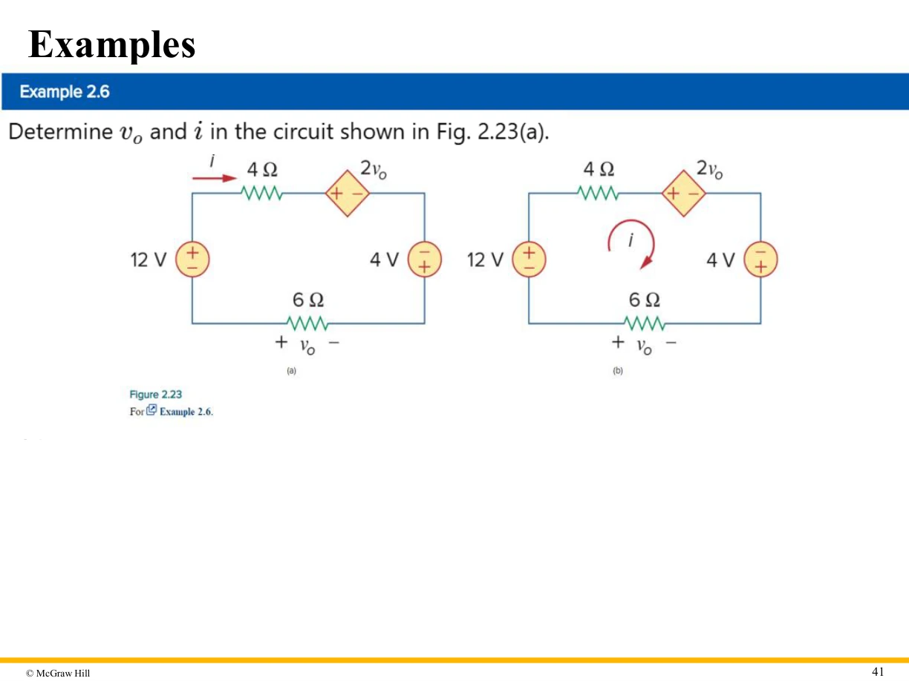
Worked solution · 3 steps
Write the control relation
The bottom reference voltage opposes clockwise current.
Apply KVL
Use the drawn source polarities.
Substitute and solve
The dependent source changes the loop coefficient.
Check. KVL check: −12−32+96−4−48=0 V.
Source references
Question: ECET 250E-WEEK 02-CHAPTER 02-BASIC LAW1.pdf · page 41
Released solution: ECET 250E-WEEK 02-CHAPTER 02-BASIC LAW-With Solutions.pdf · page 42
Lecture exampleExample 2.7 · Dependent current source
Problem
Find io and vo in Fig.2.25: the upward sources are 3 A and 0.5io; the 4 Ω resistor carries io downward.
View source diagram / question page
Original page for topology, polarities, and reference directions. Some lecture and key pages also show answers. Open the original file for full resolution.
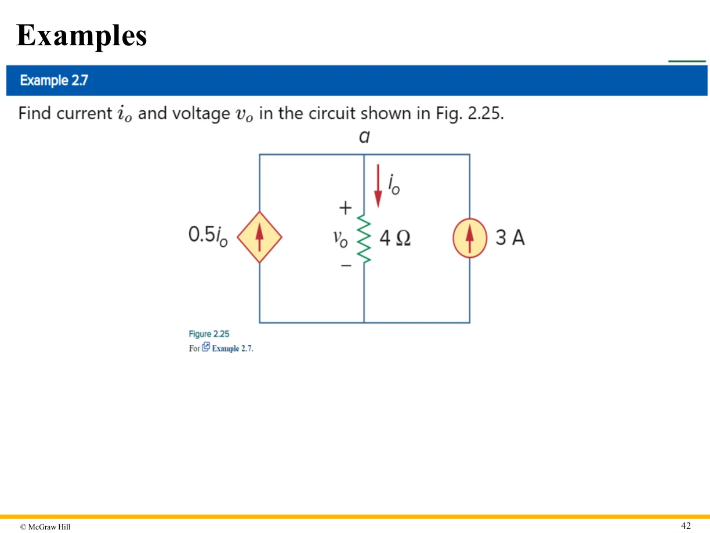
Worked solution · 2 steps
KCL
The resistor current equals the two source currents.
Ohm’s law
The resistor voltage is positive at its top.
Check. Units and signs follow the reference directions in the source diagram.
Source references
Question: ECET 250E-WEEK 02-CHAPTER 02-BASIC LAW1.pdf · page 42
Released solution: ECET 250E-WEEK 02-CHAPTER 02-BASIC LAW-With Solutions.pdf · page 44
Lecture examplePractice 2.6 · Controlled voltage loop
Problem
Find vx and vo in the pictured 70 V loop with 10 Ω and 5 Ω resistors and dependent voltage 2vx.
View source diagram / question page
Original page for topology, polarities, and reference directions. Some lecture and key pages also show answers. Open the original file for full resolution.
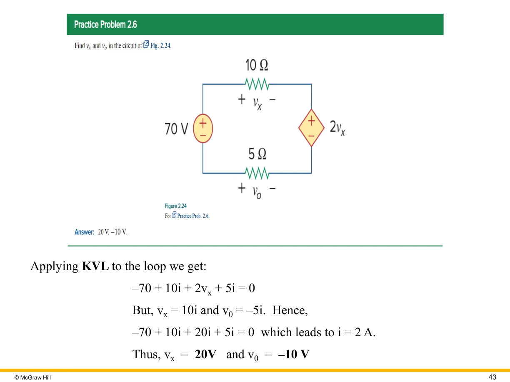
Worked solution · 2 steps
KVL and Ohm’s law
Use clockwise current.
Solve
Substitute the control voltage.
Check. Units and signs follow the reference directions in the source diagram.
Source references
Question: ECET 250E-WEEK 02-CHAPTER 02-BASIC LAW-With Solutions.pdf · page 43
Released solution: ECET 250E-WEEK 02-CHAPTER 02-BASIC LAW-With Solutions.pdf · page 43
Lecture examplePractice 2.7 · Parallel controlled circuit
Problem
Find vo and io in Fig.2.26 with a 9 A source, 2 Ω branch carrying io, downward dependent source 0.25io, and 8 Ω branch.
View source diagram / question page
Original page for topology, polarities, and reference directions. Some lecture and key pages also show answers. Open the original file for full resolution.
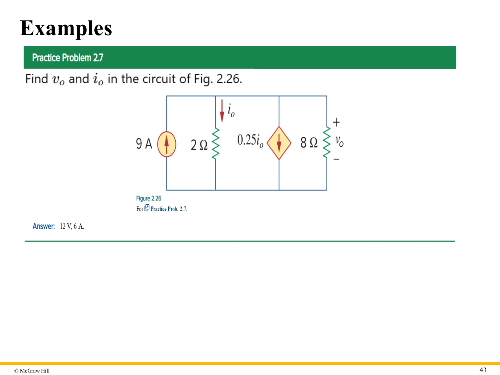
Worked solution · 2 steps
KCL
All passive branches share vo.
Solve
Substitute and collect voltage terms.
Check. Branch currents 6+1.5+1.5=9 A.
Source references
Question: ECET 250E-WEEK 02-CHAPTER 02-BASIC LAW1.pdf · page 43
Released solution: ECET 250E-WEEK 02-CHAPTER 02-BASIC LAW-With Solutions.pdf · page 45
Lecture exampleExample 2.8 · Series-parallel currents and voltages
Problem
Find i1, i2, i3 and v1, v2, v3 for Fig.2.27: 30 V source feeding 8 Ω in series with parallel 3 Ω and 6 Ω branches.
View source diagram / question page
Original page for topology, polarities, and reference directions. Some lecture and key pages also show answers. Open the original file for full resolution.
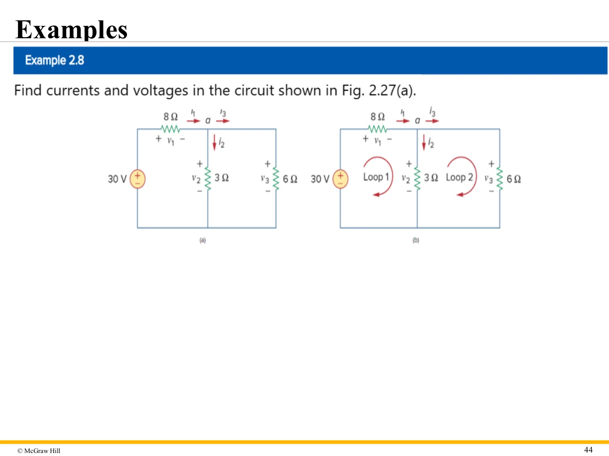
Worked solution · 3 steps
Reduce the load
The parallel resistors share voltage.
Voltages
Apply Ohm’s law to series and parallel sections.
Branch currents
Divide the common voltage by each branch resistance.
Check. KCL: 3=2+1 A. KVL: 30=24+6 V.
Source references
Question: ECET 250E-WEEK 02-CHAPTER 02-BASIC LAW1.pdf · page 44
Released solution: ECET 250E-WEEK 02-CHAPTER 02-BASIC LAW-With Solutions.pdf · page 46
Lecture exampleExample 2.9 · Equivalent resistance
Problem
Find Req for the resistor network in Fig.2.34.
View source diagram / question page
Original page for topology, polarities, and reference directions. Some lecture and key pages also show answers. Open the original file for full resolution.
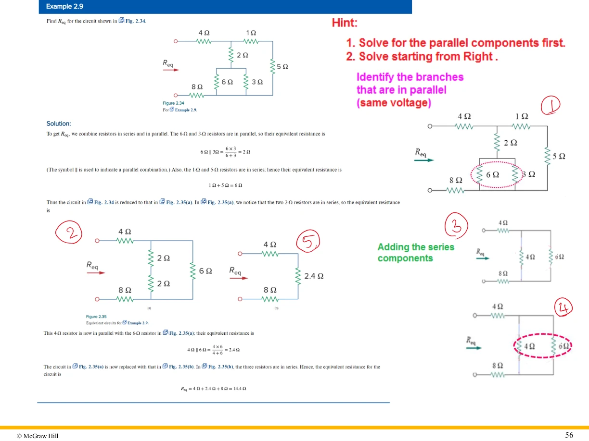
Worked solution · 3 steps
Reduce inner branches
First combine the two parallel lower resistors and right series path.
Combine the middle network
The 2 Ω resistor is in series with the reduced 2 Ω.
Add the terminal resistors
The 4 Ω and 8 Ω are series with the entire middle network.
Check. Units and signs follow the reference directions in the source diagram.
Source references
Question: ECET 250E-WEEK 02-CHAPTER 02-BASIC LAW1.pdf · page 56
Released solution: ECET 250E-WEEK 02-CHAPTER 02-BASIC LAW-With Solutions.pdf · page 58
Lecture exampleExample 2.10 · Redraw crossed branches
Problem
Find Rab in Fig.2.37. The crossing with a bridge is not a connection.
View source diagram / question page
Original page for topology, polarities, and reference directions. Some lecture and key pages also show answers. Open the original file for full resolution.
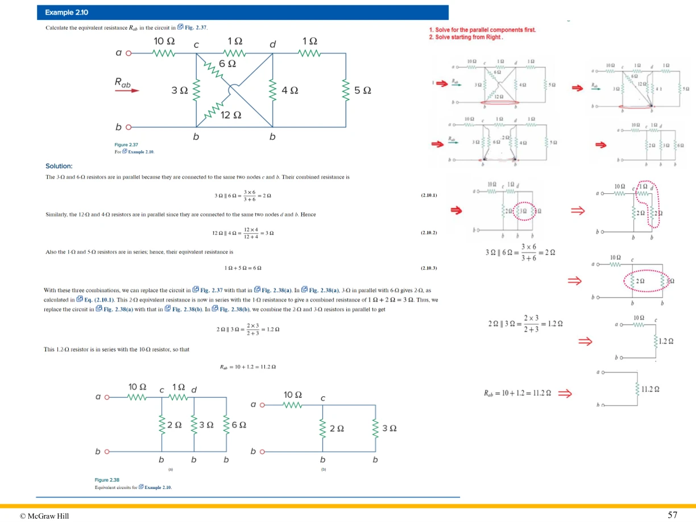
Worked solution · 3 steps
Identify actual node pairs
Reduce parallel pairs by connectivity.
Reduce the right side
Combine between d and b, then add the 1 Ω c–d branch.
Finish
The two c–b paths are parallel, and 10 Ω is series at the input.
Check. Units and signs follow the reference directions in the source diagram.
Source references
Question: ECET 250E-WEEK 02-CHAPTER 02-BASIC LAW1.pdf · page 57
Released solution: ECET 250E-WEEK 02-CHAPTER 02-BASIC LAW-With Solutions.pdf · page 59
Lecture examplePractice 2.10 · Multi-stage reduction
Problem
Find Rab in Fig.2.39 with the 16 Ω input resistor and the pictured resistor network.
View source diagram / question page
Original page for topology, polarities, and reference directions. Some lecture and key pages also show answers. Open the original file for full resolution.
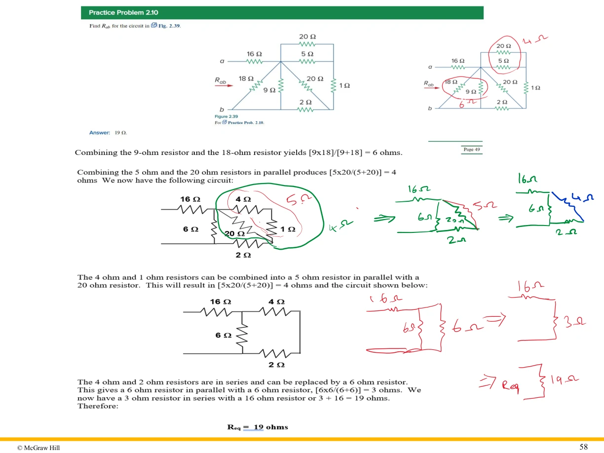
Worked solution · 3 steps
First parallel groups
Identify pairs sharing the same nodes.
Right section
Add the 1 Ω branch, then combine with diagonal 20 Ω.
Input equivalent
Add the bottom 2 Ω, place in parallel with 6 Ω, then add input 16 Ω.
Check. Units and signs follow the reference directions in the source diagram.
Source references
Question: ECET 250E-WEEK 02-CHAPTER 02-BASIC LAW1.pdf · page 58
Released solution: ECET 250E-WEEK 02-CHAPTER 02-BASIC LAW-With Solutions.pdf · page 60
Lecture exampleExample 2.11 · Equivalent conductance
Problem
Find Geq of Fig.2.40 with 6 S shunt branch and 5 S series element leading to parallel 8 S and 12 S branches.
View source diagram / question page
Original page for topology, polarities, and reference directions. Some lecture and key pages also show answers. Open the original file for full resolution.
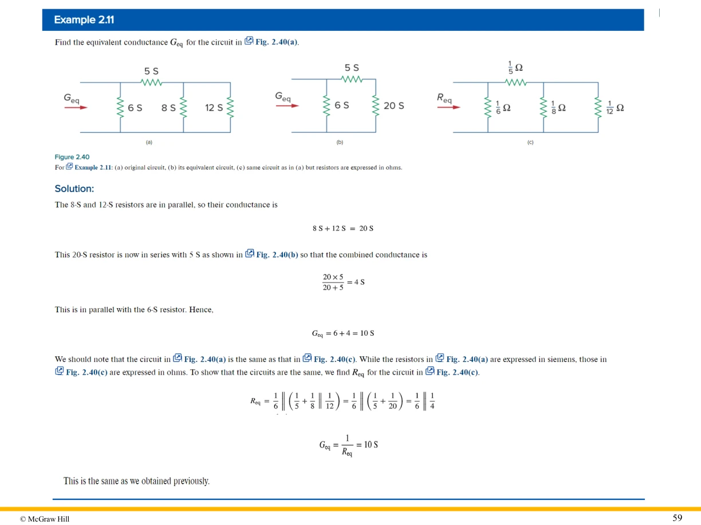
Worked solution · 3 steps
Parallel conductances add
Combine the right branches.
Series conductances use reciprocal addition
The 5 S and 20 S sections are in series.
Final parallel combination
Add the 6 S shunt.
Check. The equivalent resistance is 0.1 Ω.
Source references
Question: ECET 250E-WEEK 02-CHAPTER 02-BASIC LAW1.pdf · page 59
Released solution: ECET 250E-WEEK 02-CHAPTER 02-BASIC LAW-With Solutions.pdf · page 61
Lecture exampleExample 2.12 · Divider and resistor power
Problem
Find io, vo and 3 Ω resistor power in Fig.2.42: 12 V feeds 4 Ω in series with parallel 6 Ω and 3 Ω branches.
View source diagram / question page
Original page for topology, polarities, and reference directions. Some lecture and key pages also show answers. Open the original file for full resolution.
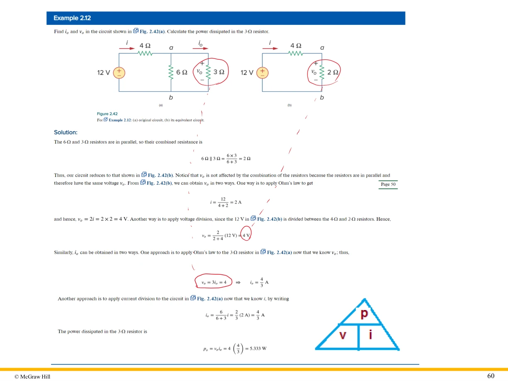
Worked solution · 3 steps
Reduce and find input current
The parallel load is 2 Ω.
Load voltage and branch current
Both parallel resistors have voltage vo.
Power
Use the voltage across the 3 Ω resistor.
Check. Units and signs follow the reference directions in the source diagram.
Source references
Question: ECET 250E-WEEK 02-CHAPTER 02-BASIC LAW1.pdf · page 60
Released solution: ECET 250E-WEEK 02-CHAPTER 02-BASIC LAW-With Solutions.pdf · page 62
Lecture exampleExample 2.13 · Current divider power balance
Problem
For Fig.2.44, find vo, power supplied by the 30 mA source, and power absorbed by 9 kΩ, 6 kΩ and 12 kΩ resistors.
View source diagram / question page
Original page for topology, polarities, and reference directions. Some lecture and key pages also show answers. Open the original file for full resolution.
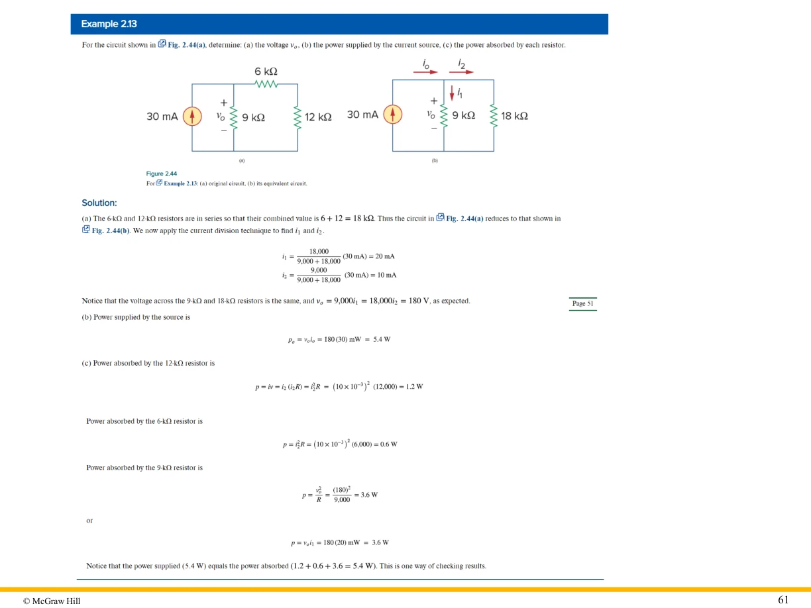
Worked solution · 3 steps
Equivalent resistance and voltage
The 6 kΩ and 12 kΩ are in series.
Branch currents
Each branch sees 180 V.
Power
The current source supplies the sum of resistor powers.
Check. 3.6+0.6+1.2=5.4 W.
Source references
Question: ECET 250E-WEEK 02-CHAPTER 02-BASIC LAW1.pdf · page 61
Released solution: ECET 250E-WEEK 02-CHAPTER 02-BASIC LAW-With Solutions.pdf · page 63
Problem setProblem set 2 · Question 2
Problem
Find hot resistance of a bulb rated 60 W at 120 V.
View source diagram / question page
Original page for topology, polarities, and reference directions. Some lecture and key pages also show answers. Open the original file for full resolution.
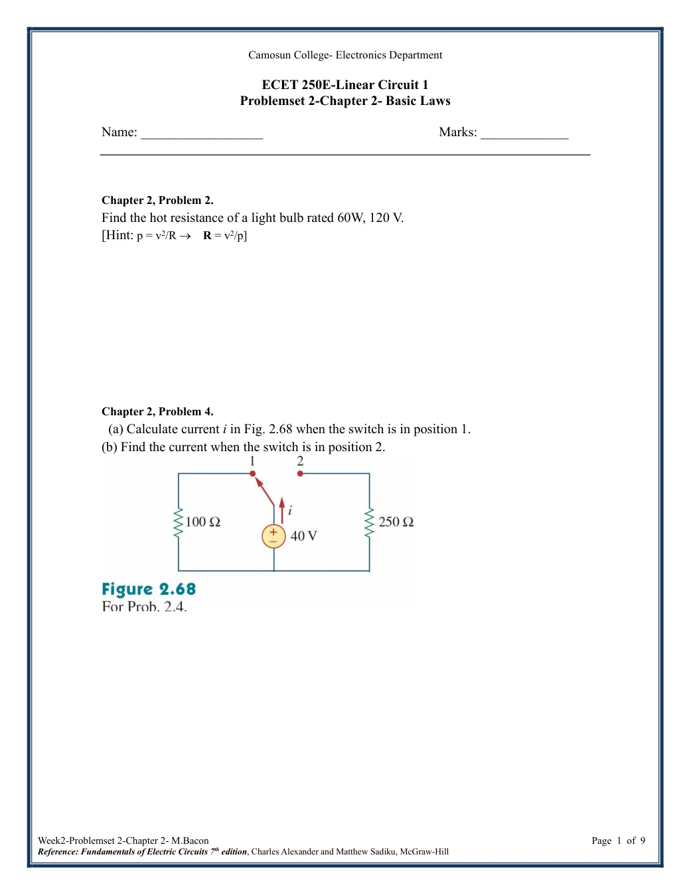
Worked solution · 1 steps
Rearrange the resistor power law
Use the operating rating.
Check. Units and signs follow the reference directions in the source diagram.
Source references
Question: ECET 250E-Linear Circuit 1-Problemset 2-Chapter 2-2025 (1).pdf · page 1
Released solution: ECET 250E-Linear Circuit 1-Problemset 2-Chapter 2-Solution 2026.pdf · page 1
Problem setProblem set 2 · Question 4
Problem
Find current i for Fig.2.68 in switch positions 1 and 2: 40 V is applied to 100 Ω or 250 Ω respectively.
View source diagram / question page
Original page for topology, polarities, and reference directions. Some lecture and key pages also show answers. Open the original file for full resolution.
Worked solution · 2 steps
Position 1
Only the selected branch is connected.
Position 2
Use the second selected resistance.
Check. Units and signs follow the reference directions in the source diagram.
Source references
Question: ECET 250E-Linear Circuit 1-Problemset 2-Chapter 2-2025 (1).pdf · page 1
Released solution: ECET 250E-Linear Circuit 1-Problemset 2-Chapter 2-Solution 2026.pdf · page 1
Problem setProblem set 2 · Question 9
Problem
Find i1, i2 and i3 in the directed current network of Fig.2.73.
View source diagram / question page
Original page for topology, polarities, and reference directions. Some lecture and key pages also show answers. Open the original file for full resolution.
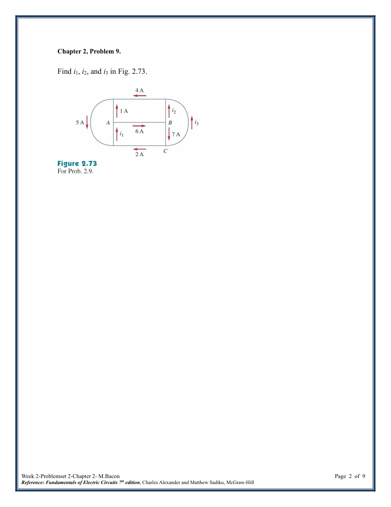
Worked solution · 3 steps
Node A
Incoming i1 supplies the 1 A and 6 A outgoing branches.
Node B
The 6 A entering splits into i2 and 7 A.
Node C
The 7 A entering splits into 2 A and i3.
Check. The negative i2 flows opposite its reference arrow.
Source references
Question: ECET 250E-Linear Circuit 1-Problemset 2-Chapter 2-2025 (1).pdf · page 2
Released solution: ECET 250E-Linear Circuit 1-Problemset 2-Chapter 2-Solution 2026.pdf · page 2
Problem setProblem set 2 · Question 10
Problem
Find i1 and i2 in Fig.2.74, retaining the signed −8 A and −6 A current labels.
View source diagram / question page
Original page for topology, polarities, and reference directions. Some lecture and key pages also show answers. Open the original file for full resolution.
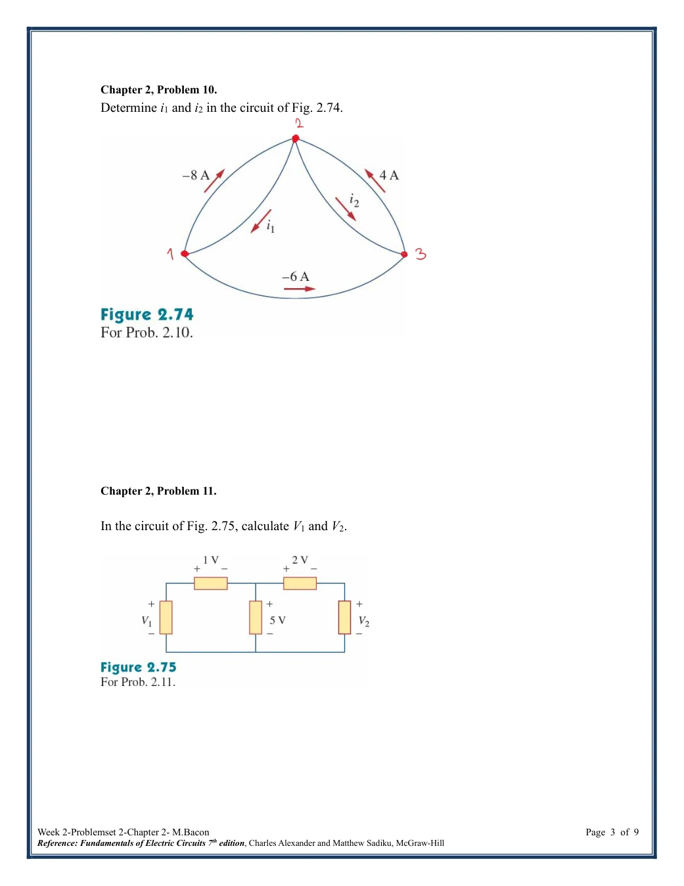
Worked solution · 2 steps
Left node
Use signed values in KCL.
Top node
Incoming currents equal outgoing currents.
Check. At the right node, 10−6=4 A, confirming KCL.
Source references
Question: ECET 250E-Linear Circuit 1-Problemset 2-Chapter 2-2025 (1).pdf · page 3
Released solution: ECET 250E-Linear Circuit 1-Problemset 2-Chapter 2-Solution 2026.pdf · pages 2, 3
Problem setProblem set 2 · Question 11
Problem
Calculate V1 and V2 in Fig.2.75 using the labeled 1 V, 5 V, and 2 V elements.
View source diagram / question page
Original page for topology, polarities, and reference directions. Some lecture and key pages also show answers. Open the original file for full resolution.
Worked solution · 2 steps
Left loop
Add the voltage drops with their marked signs.
Right loop
The 5 V branch spans the 2 V element and V2.
Check. Units and signs follow the reference directions in the source diagram.
Source references
Question: ECET 250E-Linear Circuit 1-Problemset 2-Chapter 2-2025 (1).pdf · page 3
Released solution: ECET 250E-Linear Circuit 1-Problemset 2-Chapter 2-Solution 2026.pdf · page 3
Problem setProblem set 2 · Question 13
Problem
Use KCL to find I1 through I4 in Fig.2.77.
View source diagram / question page
Original page for topology, polarities, and reference directions. Some lecture and key pages also show answers. Open the original file for full resolution.
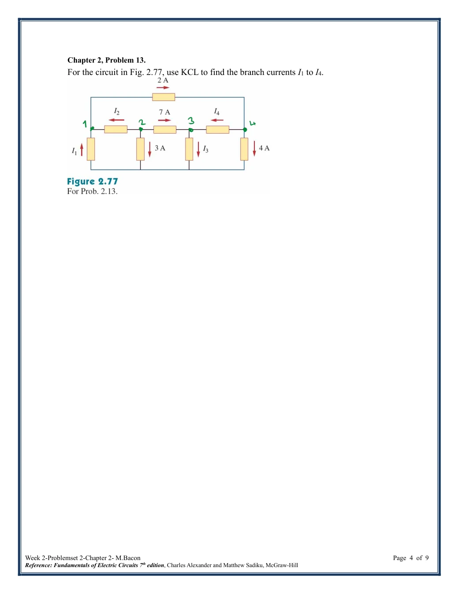
Worked solution · 2 steps
Middle-left and left nodes
The 3 A and 7 A both leave the middle-left node.
Right and middle-right nodes
Use the known 2 A, 4 A and 7 A branches.
Check. Bottom-node check: 3+5+4=12 A.
Source references
Question: ECET 250E-Linear Circuit 1-Problemset 2-Chapter 2-2025 (1).pdf · page 4
Released solution: ECET 250E-Linear Circuit 1-Problemset 2-Chapter 2-Solution 2026.pdf · pages 3, 4
Problem setProblem set 2 · Question 14
Problem
Use KVL to find V1 through V4 in Fig.2.78.
View source diagram / question page
Original page for topology, polarities, and reference directions. Some lecture and key pages also show answers. Open the original file for full resolution.
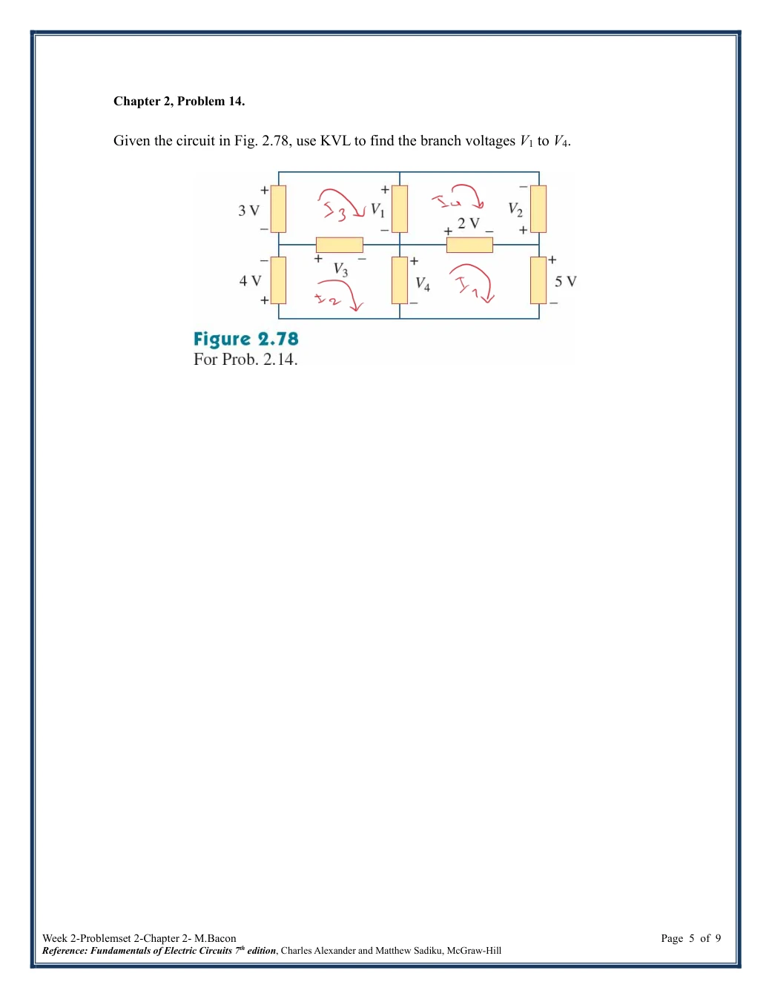
Worked solution · 3 steps
Lower-right loop
Solve the directly determined branch first.
Lower-left loop
Use the new V4.
Upper loops
Substitute the known voltages.
Check. Each signed loop sum is zero.
Source references
Question: ECET 250E-Linear Circuit 1-Problemset 2-Chapter 2-2025 (1).pdf · page 5
Released solution: ECET 250E-Linear Circuit 1-Problemset 2-Chapter 2-Solution 2026.pdf · pages 4, 5
Problem setProblem set 2 · Question 15
Problem
Calculate v and ix in Fig.2.79 with 10 V source, 4 V center branch, 16 V top-right element and dependent voltage 3ix.
View source diagram / question page
Original page for topology, polarities, and reference directions. Some lecture and key pages also show answers. Open the original file for full resolution.
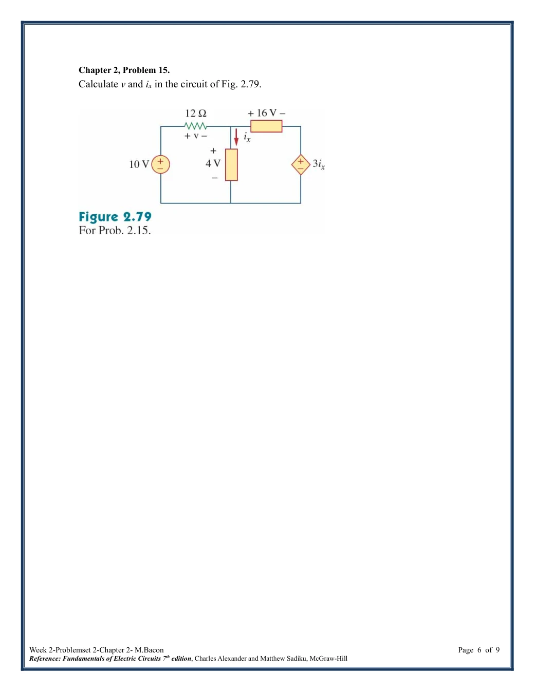
Worked solution · 2 steps
Left loop
The 10 V rise splits into v and 4 V.
Right loop
The dependent source remains active.
Check. The dependent voltage is −12 V; 4−16=−12 V.
Source references
Question: ECET 250E-Linear Circuit 1-Problemset 2-Chapter 2-2025 (1).pdf · page 6
Released solution: ECET 250E-Linear Circuit 1-Problemset 2-Chapter 2-Solution 2026.pdf · page 5
Problem setProblem set 2 · Question 16
Problem
Find Vo at the junction of 16 Ω and 14 Ω in Fig.2.80 with 10 V and 25 V sources sharing the lower node.
View source diagram / question page
Original page for topology, polarities, and reference directions. Some lecture and key pages also show answers. Open the original file for full resolution.
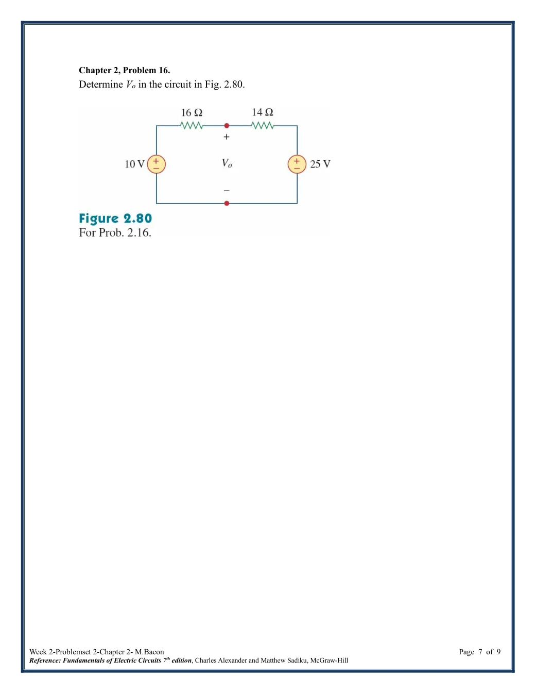
Worked solution · 2 steps
Loop current
Assume clockwise current.
Junction voltage
Start from the 10 V source top.
Check. From the right source: 25−14(0.5)=18 V.
Source references
Question: ECET 250E-Linear Circuit 1-Problemset 2-Chapter 2-2025 (1).pdf · page 7
Released solution: ECET 250E-Linear Circuit 1-Problemset 2-Chapter 2-Solution 2026.pdf · pages 5, 6
Problem setProblem set 2 · Question 18
Problem
Find clockwise I and Vab in Fig.2.82 with 30 V, 10 V and 8 V sources and 3 Ω and 5 Ω resistors.
View source diagram / question page
Original page for topology, polarities, and reference directions. Some lecture and key pages also show answers. Open the original file for full resolution.
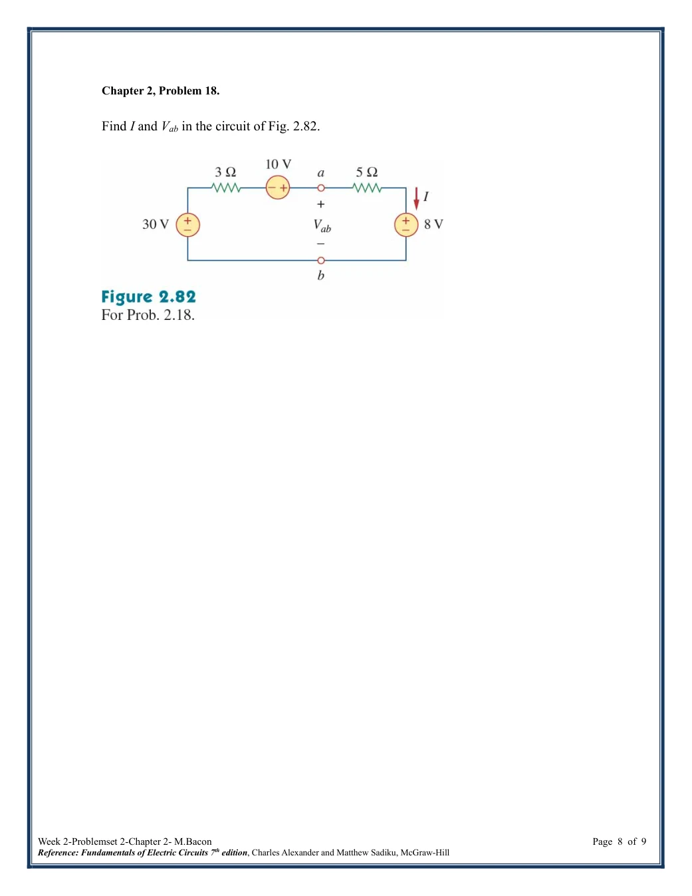
Worked solution · 2 steps
KVL
Follow the indicated clockwise current.
Node voltage
Go from b through the 8 V source and 5 Ω resistor to a.
Check. From the left path, 30−3(4)+10=28 V.
Source references
Question: ECET 250E-Linear Circuit 1-Problemset 2-Chapter 2-2025 (1).pdf · page 8
Released solution: ECET 250E-Linear Circuit 1-Problemset 2-Chapter 2-Solution 2026.pdf · page 6
Problem setProblem set 2 · Question 19
Problem
For Fig.2.83 find I, resistor dissipation, and power supplied by the 12 V, 10 V and −8 V sources.
View source diagram / question page
Original page for topology, polarities, and reference directions. Some lecture and key pages also show answers. Open the original file for full resolution.
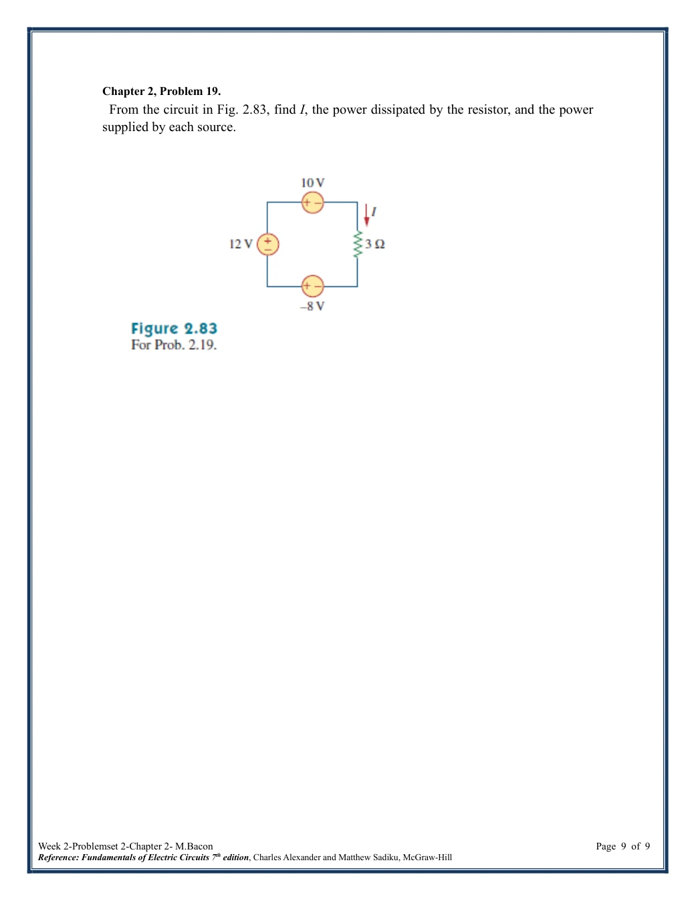
Worked solution · 3 steps
Loop current
The bottom source’s labeled value is −8 V.
Resistor power
Always nonnegative for positive resistance.
Source powers supplied
Positive means delivered; negative means absorbed.
Check. Power supplied 20+16=36 W equals 24 W absorbed by the 12 V source plus 12 W in the resistor.
Source references
Question: ECET 250E-Linear Circuit 1-Problemset 2-Chapter 2-2025 (1).pdf · page 9
Released solution: ECET 250E-Linear Circuit 1-Problemset 2-Chapter 2-Solution 2026.pdf · pages 6, 7
03Methods of analysis17 worked problems17
Lecture exampleExample 3.1 · Two-node analysis
Problem
Find node voltages v1 and v2 in Fig. 3.3, taking the bottom conductor as ground.
View source diagram / question page
Original page for topology, polarities, and reference directions. Some lecture and key pages also show answers. Open the original file for full resolution.
Worked solution · 3 steps
Node 1
The 5 A source enters node 1; express the two resistor currents as voltage differences.
Node 2
Account for both current sources with their drawn directions.
Eliminate and substitute
Add the equations, then back-substitute.
Check. KCL at node 1: −1.667 + 6.667 = 5 A; both equations are satisfied.
Source references
Question: ECET 250E-WEEK 03-CHAPTER 03-METHODS OF ANALYSIS-2026.pdf · page 6
Released solution: ECET 250E-WEEK 03-CHAPTER 03-METHODS OF ANALYSIS-With Solution-2026.pdf · pages 6, 7, 8
Lecture examplePractice problem 3.1 · Opposing current sources
Problem
Find node voltages v1 and v2 in Fig. 3.4.
View source diagram / question page
Original page for topology, polarities, and reference directions. Some lecture and key pages also show answers. Open the original file for full resolution.
Worked solution · 3 steps
Write KCL
Use the bottom conductor as reference; the 12 A source leaves node 2.
Clear denominators
Solve the two equations together.
Substitute
Insert v2 = 4v1 − 18 into the second equation.
Check. Node 1: −3 + 6 = 3 A; node 2: −6 − 6 = −12 A.
Source references
Question: ECET 250E-WEEK 03-CHAPTER 03-METHODS OF ANALYSIS-2026.pdf · page 9
Released solution: ECET 250E-WEEK 03-CHAPTER 03-METHODS OF ANALYSIS-With Solution-2026.pdf · pages 9, 10
Lecture exampleExample 3.2 · Controlled current source
Problem
Find all three node voltages in Fig. 3.5. The dependent current source is 2ix; ix flows rightward through 2 Ω.
View source diagram / question page
Original page for topology, polarities, and reference directions. Some lecture and key pages also show answers. Open the original file for full resolution.
Worked solution · 3 steps
Define the controlling current
Keep the dependent source active.
Write node equations
Apply KCL at each of the three nonreference nodes.
Solve
Adding the last two equations gives v1 = 2v2. Substitute into the remaining equations.
Check. ix = 1.2 A; node 1 supplies 1.8 + 1.2 = 3 A, and node 3 receives 1.8 + 0.6 = 2ix.
Source references
Question: ECET 250E-WEEK 03-CHAPTER 03-METHODS OF ANALYSIS-2026.pdf · page 11
Released solution: ECET 250E-WEEK 03-CHAPTER 03-METHODS OF ANALYSIS-With Solution-2026.pdf · pages 11, 12, 13, 14, 15
Lecture examplePractice problem 3.2 · Three-node dependent source
Problem
Find the three nonreference node voltages in Fig. 3.6; ix is downward through the 4 Ω resistor.
View source diagram / question page
Original page for topology, polarities, and reference directions. Some lecture and key pages also show answers. Open the original file for full resolution.
Worked solution · 3 steps
Control relation
The reference node is the bottom conductor.
Write KCL
Retain the 4ix current source from node 3 toward node 2.
Solve
Use the second equation to eliminate v2, then solve the other two.
Check. Substitution gives 24, 0 and 0 on the three equation left sides; ix = −6.4 A.
Source references
Question: ECET 250E-WEEK 03-CHAPTER 03-METHODS OF ANALYSIS-2026.pdf · page 15
Released solution: ECET 250E-WEEK 03-CHAPTER 03-METHODS OF ANALYSIS-With Solution-2026.pdf · pages 15, 16
Lecture exampleExample 3.5 · Mesh and branch currents
Problem
Find branch currents I1, I2 and I3 in Fig. 3.18 using mesh analysis.
View source diagram / question page
Original page for topology, polarities, and reference directions. Some lecture and key pages also show answers. Open the original file for full resolution.
Worked solution · 3 steps
Left mesh
Choose both mesh currents clockwise; the shared resistor carries i1 − i2.
Right mesh
Include the 10 V source with the opposite traversal sign.
Solve and map to branches
Add the equations and use I3 = i1 − i2.
Check. The middle node is 10 V from either path, so the middle 10 Ω resistor has zero voltage and current.
Source references
Question: ECET 250E-WEEK 03-CHAPTER 03-METHODS OF ANALYSIS-2026.pdf · page 20
Released solution: ECET 250E-WEEK 03-CHAPTER 03-METHODS OF ANALYSIS-With Solution-2026.pdf · pages 20, 21
Lecture exampleExample 3.6 · Mesh analysis with a dependent voltage source
Problem
Find downward current Io through the 10 Ω resistor of Fig. 3.20 using mesh analysis.
View source diagram / question page
Original page for topology, polarities, and reference directions. Some lecture and key pages also show answers. Open the original file for full resolution.
Worked solution · 3 steps
Assign three clockwise mesh currents
Use the left, upper-right and lower-right meshes shown in the diagram.
Write KVL
Substitute the controlling current into the lower-right mesh equation.
Solve and recover Io
The three simultaneous equations give the mesh currents.
Check. Independent node check: the middle node is 9 V and dependent-source top is 6 V; (24−9)/10 = 1.5 A.
Source references
Question: ECET 250E-WEEK 03-CHAPTER 03-METHODS OF ANALYSIS-2026.pdf · page 22
Released solution: ECET 250E-WEEK 03-CHAPTER 03-METHODS OF ANALYSIS-With Solution-2026.pdf · pages 22, 23, 24
Lecture examplePractice problem 3.6 · Three meshes
Problem
Use mesh analysis to find upward Io in Fig. 3.21 with the dependent source 10Io.
View source diagram / question page
Original page for topology, polarities, and reference directions. Some lecture and key pages also show answers. Open the original file for full resolution.
Worked solution · 3 steps
Define mesh currents
Choose clockwise lower-left i1, lower-right i2 and upper i3; Io = i3.
Write KVL
The dependent source has its positive terminal at the bottom.
Solve
Solve the linear system and read the current in the upper mesh.
Check. The right node is −10Io = 40 V, so current from left to right through 6 Ω is (16−40)/6 = −4 A.
Source references
Question: ECET 250E-WEEK 03-CHAPTER 03-METHODS OF ANALYSIS-2026.pdf · page 25
Released solution: ECET 250E-WEEK 03-CHAPTER 03-METHODS OF ANALYSIS-With Solution-2026.pdf · pages 25, 26
Problem setProblem set 3 · Question 1
Problem
Use nodal analysis to find Ix in Fig. 3.50 with R1 = 4 kΩ, R2 = 2 kΩ and R3 = 2 kΩ.
View source diagram / question page
Original page for topology, polarities, and reference directions. Some lecture and key pages also show answers. Open the original file for full resolution.
Worked solution · 3 steps
Define the unknown node
Take the bottom conductor as ground and the middle top node as Vx.
Solve
Multiply by 4 and collect like terms.
Find current
Use the downward current reference through R3.
Check. The two source branches supply 1.5 mA each, balancing the 3 mA downward current.
Source references
Question: ECET 250E-Linear Circuit 1-Problemset 3-Chapter 3.pdf · page 1
Released solution: ECET 250E-Linear Circuit 1-Problemset 3-Chapter 3-Solution6.pdf · page 1
Problem setProblem set 3 · Question 2
Problem
Find v1 and v2 in Fig. 3.51 using nodal analysis.
View source diagram / question page
Original page for topology, polarities, and reference directions. Some lecture and key pages also show answers. Open the original file for full resolution.
Worked solution · 3 steps
Node 1
The 6 A source flows from node 1 to node 2.
Node 2
Include the 3 A source entering node 2.
Solve
Eliminate v1.
Check. At node 2 the 9 A source injection splits into 6 A toward node 1 and 3 A through 4 Ω.
Source references
Question: ECET 250E-Linear Circuit 1-Problemset 3-Chapter 3.pdf · page 1
Released solution: ECET 250E-Linear Circuit 1-Problemset 3-Chapter 3-Solution6.pdf · pages 1, 2
Problem setProblem set 3 · Question 3
Problem
Find currents i1 through i4 and voltage vo in the parallel circuit of Fig. 3.52 using nodal analysis.
View source diagram / question page
Original page for topology, polarities, and reference directions. Some lecture and key pages also show answers. Open the original file for full resolution.
Worked solution · 3 steps
Combine conductances
Use downward resistor currents as drawn; 8 A enters and 20 A leaves.
Find node voltage
The total conductance is 0.2 S.
Apply Ohm’s law
Use each branch resistance without changing the reference directions.
Check. The resistor currents sum to −12 A and balance the net 12 A leaving in the source branches.
Source references
Question: ECET 250E-Linear Circuit 1-Problemset 3-Chapter 3.pdf · page 2
Released solution: ECET 250E-Linear Circuit 1-Problemset 3-Chapter 3-Solution6.pdf · pages 2, 3
Problem setProblem set 3 · Question 4
Problem
Calculate i1 through i4 in Fig. 3.53 using nodal analysis.
View source diagram / question page
Original page for topology, polarities, and reference directions. Some lecture and key pages also show answers. Open the original file for full resolution.
Worked solution · 3 steps
Left node
The 6 A source and 3 A inter-node source both inject current into node 1.
Right node
The 3 A source leaves node 2, while 2 A enters.
Branch currents
Divide each node voltage by its branch resistance.
Check. The two left currents total 9 A; the two right currents total −1 A, matching the respective source injections.
Source references
Question: ECET 250E-Linear Circuit 1-Problemset 3-Chapter 3.pdf · page 3
Released solution: ECET 250E-Linear Circuit 1-Problemset 3-Chapter 3-Solution6.pdf · page 3
Problem setProblem set 3 · Question 5
Problem
Use mesh analysis to obtain vo across the 4 kΩ resistor in Fig. 3.54.
View source diagram / question page
Original page for topology, polarities, and reference directions. Some lecture and key pages also show answers. Open the original file for full resolution.
Worked solution · 3 steps
Mesh equations
Choose clockwise mesh currents in mA and resistances in kΩ.
Solve
Elimination gives equal mesh currents.
Find vo
The right resistor carries i2.
Check. The shared 5 kΩ resistor carries zero current; both loop KVL equations are satisfied.
Source references
Question: ECET 250E-Linear Circuit 1-Problemset 3-Chapter 3.pdf · page 3
Released solution: ECET 250E-Linear Circuit 1-Problemset 3-Chapter 3-Solution6.pdf · page 4
Problem setProblem set 3 · Question 6
Problem
Use mesh analysis to find V1 across the 10 Ω central resistor in Fig. 3.55.
View source diagram / question page
Original page for topology, polarities, and reference directions. Some lecture and key pages also show answers. Open the original file for full resolution.
Worked solution · 3 steps
Reduce parallel branch
Combine 10 Ω and 5 Ω before writing mesh equations.
Write KVL
Choose both mesh currents clockwise.
Solve and recover voltage
Use the central branch current i1 − i2.
Check. Substitution into both mesh equations produces 10 V and −20 V, respectively.
Source references
Question: ECET 250E-Linear Circuit 1-Problemset 3-Chapter 3.pdf · page 5
Released solution: ECET 250E-Linear Circuit 1-Problemset 3-Chapter 3-Solution6.pdf · page 5
Problem setProblem set 3 · Question 7
Problem
Use mesh analysis to find vo in the dependent-source circuit shown (textbook Problem 3.37).
View source diagram / question page
Original page for topology, polarities, and reference directions. Some lecture and key pages also show answers. Open the original file for full resolution.
Worked solution · 3 steps
Left mesh
Choose clockwise mesh currents and preserve the reference polarity of vo.
Right mesh
Keep the dependent voltage source 5vo active.
Solve
Substitute i2 = 1.5i1 + 3 and vo = −4i1.
Check. The mesh residuals are −90+30+60 = 0 and 60−60−60+60 = 0 V.
Source references
Question: ECET 250E-Linear Circuit 1-Problemset 3-Chapter 3.pdf · page 6
Released solution: ECET 250E-Linear Circuit 1-Problemset 3-Chapter 3-Solution6.pdf · page 6
Problem setProblem set 3 · Question 8
Problem
Apply mesh analysis to find current i in Fig. 3.87 (textbook Problem 3.41).
View source diagram / question page
Original page for topology, polarities, and reference directions. Some lecture and key pages also show answers. Open the original file for full resolution.
Worked solution · 3 steps
Set three mesh equations
Follow the three clockwise mesh directions in the solution diagram.
Solve
Solve the 3×3 system.
Recover branch current
The marked current is the difference of the two adjacent mesh currents.
Check. All three linear equations check. The source’s printed determinant sign is inconsistent, but its final current is correct.
Source references
Question: ECET 250E-Linear Circuit 1-Problemset 3-Chapter 3.pdf · page 7
Released solution: ECET 250E-Linear Circuit 1-Problemset 3-Chapter 3-Solution6.pdf · page 7
Problem setProblem set 3 · Question 9
Problem
Use mesh analysis to find the three mesh currents in Fig. 3.99 (textbook Problem 3.54).
View source diagram / question page
Original page for topology, polarities, and reference directions. Some lecture and key pages also show answers. Open the original file for full resolution.
Worked solution · 3 steps
Set units
All resistors are 1 kΩ; use mA for clockwise mesh currents.
Eliminate outside currents
Express i1 and i3 in terms of i2.
Solve
Substitute into the middle equation.
Check. The middle equation gives −5.25+25.50−10.25 = 10 V.
Source references
Question: ECET 250E-Linear Circuit 1-Problemset 3-Chapter 3.pdf · page 8
Released solution: ECET 250E-Linear Circuit 1-Problemset 3-Chapter 3-Solution6.pdf · page 8
Problem setProblem set 3 · Question 10
Problem
Find the mesh currents, the central branch current, and voltages v1, v2 and v3 in the pictured 10 V resistive circuit.
View source diagram / question page
Original page for topology, polarities, and reference directions. Some lecture and key pages also show answers. Open the original file for full resolution.
Worked solution · 3 steps
Mesh equations
Use clockwise left i1 and right i3; central current i2 = i1 − i3.
Solve currents
Eliminate i1 or i3.
Find resistor voltages
Use the marked passive polarities.
Check. v1 + v2 = 10 V and v2 = v3 + 8i3 = 140/23 V.
Source references
Question: ECET 250E-Linear Circuit 1-Problemset 3-Chapter 3.pdf · page 9
Released solution: ECET 250E-Linear Circuit 1-Problemset 3-Chapter 3-Solution6.pdf · pages 8, 9
04Circuit theorems29 worked problems29
Lecture exampleSuperposition demonstration · Two voltage sources
Problem
Find clockwise loop current in the pictured 4 Ω circuit with opposing 10 V and 6 V sources.
View source diagram / question page
Original page for topology, polarities, and reference directions. Some lecture and key pages also show answers. Open the original file for full resolution.
Worked solution · 3 steps
10 V contribution
Replace the 6 V source by a short circuit.
6 V contribution
Short the 10 V source; the 6 V source drives current opposite to the chosen clockwise reference.
Add responses
Superpose currents algebraically.
Check. Direct KVL gives 4i = 10−6 = 4 V.
Source references
Question: ECET 250E-WEEK 04-CHAPTER 04-CIRCUIT THEOREMS-2026.pdf · page 5
Released solution: ECET 250E-WEEK 04-CHAPTER 04-CIRCUIT THEOREMS-With Solution-20261.pdf · page 5
Lecture exampleExample 4.3 · Superposition
Problem
Use superposition to find v across the 4 Ω resistor in Fig. 4.6.
View source diagram / question page
Original page for topology, polarities, and reference directions. Some lecture and key pages also show answers. Open the original file for full resolution.
Worked solution · 3 steps
6 V source alone
Open the 3 A source; 8 Ω and 4 Ω are in series.
3 A source alone
Short the 6 V source; divide the 3 A current between 8 Ω and 4 Ω.
Sum voltages
Both contributions have the marked polarity.
Check. Full-circuit KCL: (10−6)/8 + 10/4 = 3 A.
Source references
Question: ECET 250E-WEEK 04-CHAPTER 04-CIRCUIT THEOREMS-2026.pdf · page 8
Released solution: ECET 250E-WEEK 04-CHAPTER 04-CIRCUIT THEOREMS-With Solution-20261.pdf · page 8
Lecture examplePractice problem 4.3 · Superposition
Problem
Use superposition to find vo across the 2 Ω resistor in Fig. 4.8.
View source diagram / question page
Original page for topology, polarities, and reference directions. Some lecture and key pages also show answers. Open the original file for full resolution.
Worked solution · 3 steps
5 A source alone
Short 12 V. Current divides equally between 5 Ω and the series 3 Ω + 2 Ω branch.
12 V source alone
Open 5 A; all three resistors become series connected.
Add
Use the same top-positive output reference.
Check. With vo = 7.4 V the middle top node is 18.5 V; currents to left and right sum to 3.7+1.3 = 5 A.
Source references
Question: ECET 250E-WEEK 04-CHAPTER 04-CIRCUIT THEOREMS-2026.pdf · page 9
Released solution: ECET 250E-WEEK 04-CHAPTER 04-CIRCUIT THEOREMS-With Solution-20261.pdf · page 9
Lecture exampleSource transformation · Three equivalent pairs
Problem
Transform the three pictured source-resistor pairs between voltage-source and current-source forms, preserving terminal polarity.
View source diagram / question page
Original page for topology, polarities, and reference directions. Some lecture and key pages also show answers. Open the original file for full resolution.
Worked solution · 3 steps
21 V and 3 Ω
The positive upper terminal corresponds to an upward Norton current.
40 V and 8 Ω
The shown voltage polarity corresponds to a downward Norton current.
Dependent source
The control variable remains unchanged by the transformation.
Check. For each pair, the open-circuit voltage is IsR and the short-circuit current is Vs/R; arrows and polarities follow the displayed diagrams.
Source references
Question: ECET 250E-WEEK 04-CHAPTER 04-CIRCUIT THEOREMS-2026.pdf · pages 15, 16
Released solution: ECET 250E-WEEK 04-CHAPTER 04-CIRCUIT THEOREMS-With Solution-20261.pdf · pages 15, 16
Lecture exampleSource transformation · Voltage across a 6 Ω load
Problem
Find v1 across the 6 Ω resistor fed by the 16 A source in parallel with 2 Ω.
View source diagram / question page
Original page for topology, polarities, and reference directions. Some lecture and key pages also show answers. Open the original file for full resolution.
Worked solution · 3 steps
Transform source
Replace 16 A in parallel with 2 Ω by 32 V in series with 2 Ω.
Find load current
The transformed circuit is a series loop.
Find load voltage
Multiply the load current by 6 Ω.
Check. Original circuit: 24/2 + 24/6 = 12+4 = 16 A.
Source references
Question: ECET 250E-WEEK 04-CHAPTER 04-CIRCUIT THEOREMS-2026.pdf · page 17
Released solution: ECET 250E-WEEK 04-CHAPTER 04-CIRCUIT THEOREMS-With Solution-20261.pdf · page 17
Lecture exampleExample 4.6 · Source transformations
Problem
Use source transformation to find vo across 8 Ω in Fig. 4.17.
View source diagram / question page
Original page for topology, polarities, and reference directions. Some lecture and key pages also show answers. Open the original file for full resolution.
Worked solution · 3 steps
Transform the left source
3 A downward in parallel with 4 Ω becomes 12 V with negative terminal at the top; its series resistance plus 2 Ω is 6 Ω.
Transform the right source
12 V with 3 Ω becomes 4 A upward. Combine source currents and parallel resistances.
Find output
The 2 A source feeds 8 Ω in parallel with 2 Ω.
Check. Original-node check: left node is −1.8667 V; output KCL is (3.2+1.8667)/2 + 3.2/8 + (3.2−12)/3 = 0.
Source references
Question: ECET 250E-WEEK 04-CHAPTER 04-CIRCUIT THEOREMS-2026.pdf · page 19
Released solution: ECET 250E-WEEK 04-CHAPTER 04-CIRCUIT THEOREMS-With Solution-20261.pdf · page 19
Lecture exampleExample 4.7 · Dependent-source transformation
Problem
Use source transformation to find vx in Fig. 4.20 with dependent current source 0.25vx.
View source diagram / question page
Original page for topology, polarities, and reference directions. Some lecture and key pages also show answers. Open the original file for full resolution.
Worked solution · 3 steps
Transform both source pairs
6 V with 2 Ω becomes 3 A in parallel with 2 Ω. Combining that resistor with the vertical 2 Ω gives 1 Ω; this pair becomes 3 V in series with 1 Ω.
Transform the dependent source
Its equivalent voltage is 4(0.25vx) = vx, positive on the left. Keep its control voltage referenced to the original output terminals.
Find vx
Apply KVL around the left portion.
Check. Original KCL: (7.5−6)/2 + 7.5/2 + (7.5−18)/4 − 0.25(7.5) = 0.
Source references
Question: ECET 250E-WEEK 04-CHAPTER 04-CIRCUIT THEOREMS-2026.pdf · page 20
Released solution: ECET 250E-WEEK 04-CHAPTER 04-CIRCUIT THEOREMS-With Solution-20261.pdf · page 20
Lecture exampleThévenin demonstration · 10 V resistor network
Problem
Find the Thévenin equivalent seen by the 3.3 kΩ load, then its current and voltage. The source is 10 V; R1 = 3.9 kΩ, R2 = 4.7 kΩ, R3 = 8.2 kΩ.
View source diagram / question page
Original page for topology, polarities, and reference directions. Some lecture and key pages also show answers. Open the original file for full resolution.
Worked solution · 3 steps
Open the load
No current flows through 4.7 kΩ; use the 3.9 kΩ–8.2 kΩ divider.
Deactivate source
Short the voltage source and look into the load terminals.
Reconnect load
Use series current and the load voltage drop.
Check. Direct reduction using 8.2 kΩ in parallel with (4.7+3.3) kΩ yields the same load current.
Source references
Question: ECET 250E-WEEK 04-CHAPTER 04-CIRCUIT THEOREMS-2026.pdf · pages 27, 28
Released solution: ECET 250E-WEEK 04-CHAPTER 04-CIRCUIT THEOREMS-With Solution-20261.pdf · pages 27, 28
Lecture exampleThévenin example · 32 V divider
Problem
Find the Thévenin equivalent at a–b and the current through the 6 Ω load in the pictured 32 V circuit.
View source diagram / question page
Original page for topology, polarities, and reference directions. Some lecture and key pages also show answers. Open the original file for full resolution.
Worked solution · 3 steps
Open-circuit voltage
Remove the 6 Ω load. The 12 Ω resistor sets the open-circuit divider voltage; any output series resistor has zero drop.
Equivalent resistance
Short the 32 V source; combine 4 Ω and 12 Ω in parallel, then include any output series resistance.
Reconnect load
Apply Ohm’s law to the equivalent series circuit.
Check. The source-off resistance and open-circuit voltage determine the same loaded terminal behavior as the original divider.
Source references
Question: ECET 250E-WEEK 04-CHAPTER 04-CIRCUIT THEOREMS-2026.pdf · page 29
Released solution: ECET 250E-WEEK 04-CHAPTER 04-CIRCUIT THEOREMS-With Solution-20261.pdf · pages 29, 30, 31
Lecture exampleThévenin example · Added series resistance
Problem
Find the Thévenin equivalent at a–b and the current through the 6 Ω load in the pictured 32 V circuit.
View source diagram / question page
Original page for topology, polarities, and reference directions. Some lecture and key pages also show answers. Open the original file for full resolution.
Worked solution · 3 steps
Open-circuit voltage
Remove the 6 Ω load. The 12 Ω resistor sets the open-circuit divider voltage; any output series resistor has zero drop.
Equivalent resistance
Short the 32 V source; combine 4 Ω and 12 Ω in parallel, then include any output series resistance.
Reconnect load
Apply Ohm’s law to the equivalent series circuit.
Check. The source-off resistance and open-circuit voltage determine the same loaded terminal behavior as the original divider.
Source references
Question: ECET 250E-WEEK 04-CHAPTER 04-CIRCUIT THEOREMS-2026.pdf · page 32
Released solution: ECET 250E-WEEK 04-CHAPTER 04-CIRCUIT THEOREMS-With Solution-20261.pdf · pages 32, 33, 34
Lecture exampleExample 4.8 · Thévenin equivalent
Problem
Find the Thévenin equivalent of Fig. 4.27 at a–b and the current through RL = 6 Ω.
View source diagram / question page
Original page for topology, polarities, and reference directions. Some lecture and key pages also show answers. Open the original file for full resolution.
Worked solution · 3 steps
Equivalent resistance
Short 32 V and open 2 A.
Open-circuit voltage
With no load, the 1 Ω resistor has no current. Apply KCL at the middle node.
Load current
Reconnect the 6 Ω load to the equivalent.
Check. Loaded middle node is 21 V and load voltage is 18 V: (21−32)/4 + 21/12 + 3 = 2 A.
Source references
Question: ECET 250E-WEEK 04-CHAPTER 04-CIRCUIT THEOREMS-2026.pdf · page 35
Released solution: ECET 250E-WEEK 04-CHAPTER 04-CIRCUIT THEOREMS-With Solution-20261.pdf · pages 35, 36, 37
Lecture examplePractice problem 4.8 · Thévenin and load current
Problem
Find the Thévenin equivalent left of a–b in Fig. 4.30 and current through the 1 Ω load.
View source diagram / question page
Original page for topology, polarities, and reference directions. Some lecture and key pages also show answers. Open the original file for full resolution.
Worked solution · 3 steps
Equivalent resistance
Short 12 V and open 2 A.
Open-circuit voltage
Transform 12 V with 6 Ω to 2 A, combine with the 2 A source, then transform back to 24 V with 6 Ω.
Reconnect the load
Use the equivalent voltage and series resistance.
Check. The output load voltage is 1.5 V; substitution into the original network gives the same current.
Source references
Question: ECET 250E-WEEK 04-CHAPTER 04-CIRCUIT THEOREMS-2026.pdf · page 38
Released solution: ECET 250E-WEEK 04-CHAPTER 04-CIRCUIT THEOREMS-With Solution-20261.pdf · page 38
Lecture exampleNorton example · 10 V network
Problem
Find the Norton equivalent at the pictured load terminals and current through RL = 1 Ω.
View source diagram / question page
Original page for topology, polarities, and reference directions. Some lecture and key pages also show answers. Open the original file for full resolution.
Worked solution · 3 steps
Resistance
Short the 10 V source.
Short-circuit current
The 10 Ω and lower 2 Ω form a 12 Ω branch in parallel with 3 Ω.
Load current
Use current division with RL = 1 Ω.
Check. Open-circuit divider voltage is 6 V and IN RN = 6 V. Retaining exact IN avoids the slide’s 0.45 A rounding.
Source references
Question: ECET 250E-WEEK 04-CHAPTER 04-CIRCUIT THEOREMS-2026.pdf · page 43
Released solution: ECET 250E-WEEK 04-CHAPTER 04-CIRCUIT THEOREMS-With Solution-20261.pdf · pages 43, 44, 45, 46, 47
Lecture exampleExample 4.11 · Norton equivalent
Problem
Find the Norton equivalent at a–b of Fig. 4.39.
View source diagram / question page
Original page for topology, polarities, and reference directions. Some lecture and key pages also show answers. Open the original file for full resolution.
Worked solution · 3 steps
Equivalent resistance
Open 2 A and short 12 V; the outer branch is 8+4+8 Ω in parallel with 5 Ω.
Short-circuit current
Short a–b, bypassing 5 Ω. Use node V at the top left relative to the bottom left.
Find Norton current
The shorted outer branch has two 8 Ω resistors in series.
Check. The open-circuit voltage is 4 V, and VTh/RN = 1 A agrees with the short-circuit result.
Source references
Question: ECET 250E-WEEK 04-CHAPTER 04-CIRCUIT THEOREMS-2026.pdf · page 49
Released solution: ECET 250E-WEEK 04-CHAPTER 04-CIRCUIT THEOREMS-With Solution-20261.pdf · pages 49, 50, 51, 52
Lecture examplePractice problem 4.11 · Norton equivalent
Problem
Find the Norton equivalent at a–b of Fig. 4.42.
View source diagram / question page
Original page for topology, polarities, and reference directions. Some lecture and key pages also show answers. Open the original file for full resolution.
Worked solution · 3 steps
Equivalent resistance
Short 15 V and open 4 A.
Open-circuit voltage
Use middle node Vm and output node Vo.
Solve and transform
The second equation gives Vm = 1.5Vo; substitute into the first.
Check. Shorting the output makes Vm = 13.5 V and current through the right 3 Ω resistor is 4.5 A.
Source references
Question: ECET 250E-WEEK 04-CHAPTER 04-CIRCUIT THEOREMS-2026.pdf · page 54
Released solution: ECET 250E-WEEK 04-CHAPTER 04-CIRCUIT THEOREMS-With Solution-20261.pdf · page 54
Lecture exampleMaximum-power comparison · 5 Ω load
Problem
Find current and load power for a 20 V source with 10 Ω internal resistance and a 5 Ω load.
View source diagram / question page
Original page for topology, polarities, and reference directions. Some lecture and key pages also show answers. Open the original file for full resolution.
Worked solution · 3 steps
Total resistance
Add internal and load resistances.
Current
Apply Ohm’s law.
Load power
Use only the load resistance in I²R.
Check. Among 5 Ω, 10 Ω and 15 Ω, the 10 Ω load receives the most power because it matches the source resistance.
Source references
Question: ECET 250E-WEEK 04-CHAPTER 04-CIRCUIT THEOREMS-2026.pdf · page 59
Released solution: ECET 250E-WEEK 04-CHAPTER 04-CIRCUIT THEOREMS-With Solution-20261.pdf · page 59
Lecture exampleMaximum-power comparison · 10 Ω load
Problem
Find current and load power for a 20 V source with 10 Ω internal resistance and a 10 Ω load.
View source diagram / question page
Original page for topology, polarities, and reference directions. Some lecture and key pages also show answers. Open the original file for full resolution.
Worked solution · 3 steps
Total resistance
Add internal and load resistances.
Current
Apply Ohm’s law.
Load power
Use only the load resistance in I²R.
Check. Among 5 Ω, 10 Ω and 15 Ω, the 10 Ω load receives the most power because it matches the source resistance.
Source references
Question: ECET 250E-WEEK 04-CHAPTER 04-CIRCUIT THEOREMS-2026.pdf · page 60
Released solution: ECET 250E-WEEK 04-CHAPTER 04-CIRCUIT THEOREMS-With Solution-20261.pdf · page 60
Lecture exampleMaximum-power comparison · 15 Ω load
Problem
Find current and load power for a 20 V source with 10 Ω internal resistance and a 15 Ω load.
View source diagram / question page
Original page for topology, polarities, and reference directions. Some lecture and key pages also show answers. Open the original file for full resolution.
Worked solution · 3 steps
Total resistance
Add internal and load resistances.
Current
Apply Ohm’s law.
Load power
Use only the load resistance in I²R.
Check. Among 5 Ω, 10 Ω and 15 Ω, the 10 Ω load receives the most power because it matches the source resistance.
Source references
Question: ECET 250E-WEEK 04-CHAPTER 04-CIRCUIT THEOREMS-2026.pdf · page 61
Released solution: ECET 250E-WEEK 04-CHAPTER 04-CIRCUIT THEOREMS-With Solution-20261.pdf · page 61
Lecture exampleExample 4.13 · Maximum power transfer
Problem
Find RL for maximum power transfer in Fig. 4.50 and calculate that maximum power.
View source diagram / question page
Original page for topology, polarities, and reference directions. Some lecture and key pages also show answers. Open the original file for full resolution.
Worked solution · 3 steps
Thévenin resistance
Short 12 V and open 2 A.
Open-circuit voltage
No current flows through the output 2 Ω resistor. At the current-source node V2 − V1 = 2(3) = 6 V.
Match the load
For a resistive load, set RL equal to RTh.
Check. At matching, load voltage is 11 V, so PL = 11²/9 = 13.444 W.
Source references
Question: ECET 250E-WEEK 04-CHAPTER 04-CIRCUIT THEOREMS-2026.pdf · page 62
Released solution: ECET 250E-WEEK 04-CHAPTER 04-CIRCUIT THEOREMS-With Solution-20261.pdf · pages 62, 63, 64
Problem setProblem set 4 · Question 1
Problem
Use superposition to find rightward io and left-positive vo across 10 Ω in Fig. 4.79. Keep the dependent source 4io active.
View source diagram / question page
Original page for topology, polarities, and reference directions. Some lecture and key pages also show answers. Open the original file for full resolution.
Worked solution · 3 steps
6 A contribution
Short the 30 V source. Let va and vb be the nodes on either side of 10 Ω; io1 = (va−vb)/10.
30 V contribution
Open the 6 A source. The top of the 30 V source is −30 V.
Add responses
Retain the original current and voltage references.
Check. Full-circuit nodes are va = 168 V and vb = 150 V: 168/40+1.8 = 6 and (150+30)/20 = 5(1.8). The released key’s 17.99 V is premature rounding.
Source references
Question: ECET 250E-Linear Circuit 1-Problemset 4-Chapter 4.pdf · page 1
Released solution: ECET 250E-Linear Circuit 1-Problemset 4-Chapter 4- Solution5.pdf · pages 1, 2
Problem setProblem set 4 · Question 2
Problem
Use superposition to find left-positive vo across the 5 Ω resistor in Fig. 4.80.
View source diagram / question page
Original page for topology, polarities, and reference directions. Some lecture and key pages also show answers. Open the original file for full resolution.
Worked solution · 4 steps
2 A source alone
Short both voltage sources. The alternate path is (6∥3)+(4∥12) = 5 Ω, equal to the output resistor.
12 V source alone
Open 2 A and short 19 V. The right shunt becomes 3 Ω.
19 V source alone
Open 2 A and short 12 V. The left shunt becomes 2 Ω; the output polarity makes this contribution negative.
Sum
Add all three signed responses.
Check. Full-circuit nodal voltages are Va = 8.05 V and Vb = 8.175 V; their difference is −0.125 V.
Source references
Question: ECET 250E-Linear Circuit 1-Problemset 4-Chapter 4.pdf · page 2
Released solution: ECET 250E-Linear Circuit 1-Problemset 4-Chapter 4- Solution5.pdf · pages 2, 3
Problem setProblem set 4 · Question 3
Problem
Use superposition to find rightward io through 4 Ω in Fig. 4.84.
View source diagram / question page
Original page for topology, polarities, and reference directions. Some lecture and key pages also show answers. Open the original file for full resolution.
Worked solution · 4 steps
12 V source alone
Open both current sources.
4 A source alone
Short 12 V and open 2 A. The alternate path across the 3 Ω source branch is 2+5+(4∥10) = 69/7 Ω.
2 A source alone
Short 12 V and open 4 A; the left route has resistance 3+2+(4∥10) = 55/7 Ω.
Sum
Negative contributions flow against the indicated rightward arrow.
Check. Full-circuit node voltages after 4 Ω, after 3 Ω and at the right are 104/9 V, 121/45 V and 43/9 V. These satisfy KCL and io = (12−104/9)/4 = 1/9 A.
Source references
Question: ECET 250E-Linear Circuit 1-Problemset 4-Chapter 4.pdf · page 3
Released solution: ECET 250E-Linear Circuit 1-Problemset 4-Chapter 4- Solution5.pdf · page 4
Problem setProblem set 4 · Question 4
Problem
Find the Thévenin equivalent seen by the 5 Ω resistor in Fig. 4.101, then find its current.
View source diagram / question page
Original page for topology, polarities, and reference directions. Some lecture and key pages also show answers. Open the original file for full resolution.
Worked solution · 3 steps
Remove load
With the load open, no current flows through the top 10 Ω resistor.
Deactivate source
Open 4 A; the two 10 Ω resistors are in series from the load terminals.
Reconnect load
Use the Thévenin series circuit.
Check. Independent short-circuit calculation gives Isc = 2 A, so Voc/Isc = 20 Ω.
Source references
Question: ECET 250E-Linear Circuit 1-Problemset 4-Chapter 4.pdf · page 4
Released solution: ECET 250E-Linear Circuit 1-Problemset 4-Chapter 4- Solution5.pdf · pages 5, 6
Problem setProblem set 4 · Question 5
Problem
Find the Norton equivalent at a–b of Fig. 4.104.
View source diagram / question page
Original page for topology, polarities, and reference directions. Some lecture and key pages also show answers. Open the original file for full resolution.
Worked solution · 3 steps
Resistance
Short 120 V and open 2 A.
Short-circuit current
Short a–b, bypassing 12 Ω. Transform the 2 A/40 Ω pair into an opposing 80 V source.
Specify equivalent
Use a current source directed b to a in parallel with RN.
Check. An independent open-circuit nodal solution gives Va = 20/3 V; division by RN recovers 2/3 A.
Source references
Question: ECET 250E-Linear Circuit 1-Problemset 4-Chapter 4.pdf · page 5
Released solution: ECET 250E-Linear Circuit 1-Problemset 4-Chapter 4- Solution5.pdf · pages 7, 8
Problem setProblem set 4 · Question 6
Problem
Use Thévenin’s theorem to find downward i through 40 Ω in Fig. 4.103.
View source diagram / question page
Original page for topology, polarities, and reference directions. Some lecture and key pages also show answers. Open the original file for full resolution.
Worked solution · 3 steps
Remove 40 Ω
Apply KCL to the common top node.
Equivalent resistance
Short both independent voltage sources.
Reconnect load
Use the series equivalent.
Check. Loaded voltage is 36 V; source branches inject (50−36)/10 + (30−36)/12 = 1.4−0.5 = 0.9 A.
Source references
Question: ECET 250E-Linear Circuit 1-Problemset 4-Chapter 4.pdf · page 6
Released solution: ECET 250E-Linear Circuit 1-Problemset 4-Chapter 4- Solution5.pdf · page 9
Problem setProblem set 4 · Question 7
Problem
Apply Thévenin’s theorem to find top-positive vo across the 10 Ω resistor in Fig. 4.105.
View source diagram / question page
Original page for topology, polarities, and reference directions. Some lecture and key pages also show answers. Open the original file for full resolution.
Worked solution · 3 steps
Equivalent resistance
Remove 10 Ω, open 3 A and short 12 V.
Open-circuit voltage
The 1 Ω output resistor has no current. Solve the left and middle node equations.
Reconnect load
Use the voltage divider.
Check. Load current is 1.28 A; Thévenin internal drop is 6.4 V, summing to 19.2 V.
Source references
Question: ECET 250E-Linear Circuit 1-Problemset 4-Chapter 4.pdf · page 7
Released solution: ECET 250E-Linear Circuit 1-Problemset 4-Chapter 4- Solution5.pdf · pages 10, 11
Problem setProblem set 4 · Question 8
Problem
Obtain the Thévenin equivalent at a–b of Fig. 4.106.
View source diagram / question page
Original page for topology, polarities, and reference directions. Some lecture and key pages also show answers. Open the original file for full resolution.
Worked solution · 3 steps
Equivalent resistance
Open 3 A and short 24 V.
Interior node voltages
Let V1 be the upper-left node and V2 the middle node; 3 A flows through 16 Ω toward terminal a and returns through the source.
Terminal voltage
Moving from V2 toward a gives a 48 V drop through 16 Ω.
Check. V1 = 26.4 V: (24−26.4)/10+3 = (26.4+1.2)/10 = 2.76 A. The key labels its resistance equation VThev once; units show it is RTh.
Source references
Question: ECET 250E-Linear Circuit 1-Problemset 4-Chapter 4.pdf · page 8
Released solution: ECET 250E-Linear Circuit 1-Problemset 4-Chapter 4- Solution5.pdf · pages 12, 13
Problem setProblem set 4 · Question 9
Problem
Find the Thévenin and Norton equivalents at a–b of Fig. 4.108.
View source diagram / question page
Original page for topology, polarities, and reference directions. Some lecture and key pages also show answers. Open the original file for full resolution.
Worked solution · 3 steps
Equivalent resistance
Open both current sources and short 14 V.
Open-circuit voltage
Transform 1 A with 6 Ω into 6 V in series with 6 Ω. This aids the 14 V source.
Norton current
Define Isc positive from a to b, equivalently a Norton source positive from b to a.
Check. The negative Norton value means a physical 2 A source from a to b. At open circuit (20+8)/20 = 3−8/5 = 1.4 A.
Source references
Question: ECET 250E-Linear Circuit 1-Problemset 4-Chapter 4.pdf · page 9
Released solution: ECET 250E-Linear Circuit 1-Problemset 4-Chapter 4- Solution5.pdf · pages 14, 15
Problem setProblem set 4 · Question 10
Problem
Find the maximum power deliverable to resistor R in Fig. 4.132, and the required value of R.
View source diagram / question page
Original page for topology, polarities, and reference directions. Some lecture and key pages also show answers. Open the original file for full resolution.
Worked solution · 3 steps
Equivalent resistance
Remove R; short both voltage sources and open 6 A.
Open-circuit voltage
Transform the 6 A/5 Ω branch to a 30 V source with positive terminal at ground. Define counterclockwise loop current i.
Maximum-power condition
Match the load to the positive Thévenin resistance.
Check. At the match, load voltage is 1 V and current is 0.625 A, giving 0.625 W.
Source references
Question: ECET 250E-Linear Circuit 1-Problemset 4-Chapter 4.pdf · page 10
Released solution: ECET 250E-Linear Circuit 1-Problemset 4-Chapter 4- Solution5.pdf · pages 16, 17
06Capacitors & inductors22 worked problems22
Lecture exampleExample 6.1
Problem
Find charge and stored energy for a 3-pF capacitor with 20 V across it.
View source diagram / question page
Original page for topology, polarities, and reference directions. Some lecture and key pages also show answers. Open the original file for full resolution.
Worked solution · 2 steps
Charge
Convert picofarads to farads and apply q = Cv.
Energy
Use the square of the voltage.
Check. The independent expression qV/2 also gives 600 pJ.
Source references
Question: ECET 250E-WEEK 05-CHAPTER 06-CAPACITORS AND INDUCTORS - 2026.pdf · page 19
Released solution: ECET 250E-WEEK 05-CHAPTER 06-CAPACITORS AND INDUCTORS - With Solution - 2026.pdf · page 19
Lecture exampleExample 6.2
Problem
For C = 5 μF and v(t) = 10 cos(6000t) V, find the passive-sign current.
View source diagram / question page
Original page for topology, polarities, and reference directions. Some lecture and key pages also show answers. Open the original file for full resolution.
Worked solution · 2 steps
Differentiate voltage
Apply the chain rule.
Multiply by capacitance
Use C in farads.
Check. At a voltage maximum (t = 0), its slope and the capacitor current are zero.
Source references
Question: ECET 250E-WEEK 05-CHAPTER 06-CAPACITORS AND INDUCTORS - 2026.pdf · page 20
Released solution: ECET 250E-WEEK 05-CHAPTER 06-CAPACITORS AND INDUCTORS - With Solution - 2026.pdf · page 20
Lecture exampleExample 6.3
Problem
An initially uncharged 2-μF capacitor carries i(t) = 6e^{-3000t} mA. Find v(t) for t ≥ 0.
View source diagram / question page
Original page for topology, polarities, and reference directions. Some lecture and key pages also show answers. Open the original file for full resolution.
Worked solution · 2 steps
Integrate current
Include the zero initial voltage and convert mA to A.
Evaluate bounds
The exponential integral is (1 − e^{-3000t})/3000.
Check. v(0) = 0 and C dv/dt reproduces the specified current.
Source references
Question: ECET 250E-WEEK 05-CHAPTER 06-CAPACITORS AND INDUCTORS - 2026.pdf · page 21
Released solution: ECET 250E-WEEK 05-CHAPTER 06-CAPACITORS AND INDUCTORS - With Solution - 2026.pdf · page 21
Lecture exampleExample 6.4
Problem
Find current through a 200-μF capacitor whose voltage rises 0→50 V from 0→1 s, falls 50→−50 V from 1→3 s, and rises −50→0 V from 3→4 s; voltage is zero otherwise.
View source diagram / question page
Original page for topology, polarities, and reference directions. Some lecture and key pages also show answers. Open the original file for full resolution.
Worked solution · 2 steps
Find slopes
The three straight-line slopes are +50, −50 and +50 V/s.
Calculate current
Multiply each slope by 200 μF. Current is zero on constant-voltage sections.
Check. The signed current areas sum to zero; the capacitor finishes at its initial voltage. One-sided current values apply at corners.
Source references
Question: ECET 250E-WEEK 05-CHAPTER 06-CAPACITORS AND INDUCTORS - 2026.pdf · pages 22, 23
Released solution: ECET 250E-WEEK 05-CHAPTER 06-CAPACITORS AND INDUCTORS - With Solution - 2026.pdf · pages 22, 23
Lecture examplePractice problem 6.4
Problem
An initially uncharged 1-mF capacitor carries a current rising linearly from 0 to 100 mA over 0–2 ms, then staying at 100 mA. Find voltage at 2 ms and 5 ms.
View source diagram / question page
Original page for topology, polarities, and reference directions. Some lecture and key pages also show answers. Open the original file for full resolution.
Worked solution · 2 steps
First interval
In seconds, i = 50t A. Integrate and divide by C = 0.001 F.
Second interval
Add charge supplied by the 100-mA plateau for 3 ms.
Check. Triangle area gives 0.1 mC at 2 ms; total area gives 0.4 mC at 5 ms.
Source references
Question: ECET 250E-WEEK 05-CHAPTER 06-CAPACITORS AND INDUCTORS - 2026.pdf · pages 24, 25, 26
Released solution: ECET 250E-WEEK 05-CHAPTER 06-CAPACITORS AND INDUCTORS - With Solution - 2026.pdf · pages 25, 26
Lecture exampleExample 6.5
Problem
Under DC conditions find energies in the 2-mF and 4-mF capacitors of Fig. 6.12: a 6-mA source feeds a 3-kΩ shunt and a 2-kΩ/4-kΩ series path; the 2-mF capacitor spans 2 kΩ and the 4-mF capacitor is below a 5-kΩ resistor.
View source diagram / question page
Original page for topology, polarities, and reference directions. Some lecture and key pages also show answers. Open the original file for full resolution.
Worked solution · 3 steps
DC equivalent
Open both capacitors. The 5-kΩ branch carries no current.
Capacitor voltages
The open branch has no 5-kΩ voltage drop.
Stored energies
Apply w = CV²/2 to each capacitor.
Check. The common source-node voltage is 12 V: 4 mA through 3 kΩ plus 2 mA through the other path equals 6 mA.
Source references
Question: ECET 250E-WEEK 05-CHAPTER 06-CAPACITORS AND INDUCTORS - 2026.pdf · pages 27, 28, 29
Released solution: ECET 250E-WEEK 05-CHAPTER 06-CAPACITORS AND INDUCTORS - With Solution - 2026.pdf · pages 27, 28, 29
Lecture exampleExample 6.6
Problem
Find equivalent capacitance at a–b in Fig. 6.16: 5 μF and the left 20 μF form a series branch, parallel with 6 μF and the right 20 μF; that combination is in series with 60 μF.
View source diagram / question page
Original page for topology, polarities, and reference directions. Some lecture and key pages also show answers. Open the original file for full resolution.
Worked solution · 3 steps
Left series pair
For two series capacitors use product over sum.
Parallel group
Add capacitances sharing both nodes.
Final series pair
Combine the 30-μF group with 60 μF.
Check. The final series equivalent is below both 30 μF and 60 μF.
Source references
Question: ECET 250E-WEEK 05-CHAPTER 06-CAPACITORS AND INDUCTORS - 2026.pdf · pages 35, 36
Released solution: ECET 250E-WEEK 05-CHAPTER 06-CAPACITORS AND INDUCTORS - With Solution - 2026.pdf · pages 35, 36
Lecture exampleExample 6.8
Problem
A 0.1-H inductor carries i(t) = 10t e^{-5t} A. Find voltage and stored energy.
View source diagram / question page
Original page for topology, polarities, and reference directions. Some lecture and key pages also show answers. Open the original file for full resolution.
Worked solution · 3 steps
Differentiate current
Use the product rule.
Voltage
Multiply by the inductance.
Energy
Square the entire current expression.
Check. At t = 0.2 s, current and energy reach their maximum and voltage is zero.
Source references
Question: ECET 250E-WEEK 05-CHAPTER 06-CAPACITORS AND INDUCTORS - 2026.pdf · page 49
Released solution: ECET 250E-WEEK 05-CHAPTER 06-CAPACITORS AND INDUCTORS - With Solution - 2026.pdf · page 49
Lecture exampleExample 6.9
Problem
For a 5-H inductor, v(t) = 30t² V for t > 0 and zero for t < 0. Find current and energy at 5 s. The source initial-current text is malformed/ambiguous; its worked solution uses i(0) = 0.
View source diagram / question page
Original page for topology, polarities, and reference directions. Some lecture and key pages also show answers. Open the original file for full resolution.
Worked solution · 3 steps
Preserve initial current
Write the solution for an arbitrary initial current I₀; the voltage alone does not determine I₀.
Energy at 5 seconds
Use total current, including any nonzero initial current.
Conditional instructor result
If I₀ = 0 as assumed in the released solution, evaluate the expressions.
Check. Source ambiguity: the slide appears to say i(0) > 0, but the solution substitutes zero. The 156.25-kJ numeric result is conditional on zero initial current.
The source assumption is unclear. Use the conditional result only when its stated initial condition applies.
Source references
Question: ECET 250E-WEEK 05-CHAPTER 06-CAPACITORS AND INDUCTORS - 2026.pdf · page 50
Released solution: ECET 250E-WEEK 05-CHAPTER 06-CAPACITORS AND INDUCTORS - With Solution - 2026.pdf · page 50
Lecture exampleExample 6.10
Problem
Under DC conditions in Fig. 6.27 (12-V source, 1-Ω and 5-Ω top resistors, 4-Ω/1-F capacitor branch, and 2-H inductor), find i, vC, iL and stored energies.
View source diagram / question page
Original page for topology, polarities, and reference directions. Some lecture and key pages also show answers. Open the original file for full resolution.
Worked solution · 3 steps
DC equivalent
Open the capacitor and short the inductor. Only the 1-Ω and 5-Ω series path conducts.
Capacitor voltage
No current flows in 4 Ω, so its drop is zero.
Energy
Use the capacitor voltage and inductor current.
Check. The resistor drops 2 V and 10 V sum to the 12-V source.
Source references
Question: ECET 250E-WEEK 05-CHAPTER 06-CAPACITORS AND INDUCTORS - 2026.pdf · page 51
Released solution: ECET 250E-WEEK 05-CHAPTER 06-CAPACITORS AND INDUCTORS - With Solution - 2026.pdf · page 51
Lecture exampleExample 6.11
Problem
Find equivalent inductance for Fig. 6.31: 4 H and 8 H connect the terminals to a 7-H branch in parallel with the series path 20 H + 12 H + 10 H.
View source diagram / question page
Original page for topology, polarities, and reference directions. Some lecture and key pages also show answers. Open the original file for full resolution.
Worked solution · 3 steps
Right series path
Add uncoupled series inductances.
Parallel branches
Combine 7 H and 42 H.
Terminal series inductors
Add the outer inductors.
Check. The middle equivalent 6 H is less than its smaller parallel branch, 7 H.
Source references
Question: ECET 250E-WEEK 05-CHAPTER 06-CAPACITORS AND INDUCTORS - 2026.pdf · page 57
Released solution: ECET 250E-WEEK 05-CHAPTER 06-CAPACITORS AND INDUCTORS - With Solution - 2026.pdf · page 57
Lecture exampleExample 6.12
Problem
In Fig. 6.33, i(t)=4(2−e^{-10t}) mA feeds 2 H in series with parallel 4-H and 12-H inductors. Given i₂(0)=−1 mA, find i₁(0), v, v₁, v₂, i₁(t), i₂(t).
View source diagram / question page
Original page for topology, polarities, and reference directions. Some lecture and key pages also show answers. Open the original file for full resolution.
Worked solution · 3 steps
Initial KCL
Total initial current is 4 mA.
Equivalent inductance and voltages
Use L_eq = 2 + 4||12 = 5 H and di/dt = 40e^{-10t} mA/s.
Branch currents
Integrate the common parallel voltage with each initial condition.
Check. KCL: i₁+i₂ = 8−4e^{-10t} mA, exactly the supplied current.
Source references
Question: ECET 250E-WEEK 05-CHAPTER 06-CAPACITORS AND INDUCTORS - 2026.pdf · pages 58, 59
Released solution: ECET 250E-WEEK 05-CHAPTER 06-CAPACITORS AND INDUCTORS - With Solution - 2026.pdf · pages 58, 59
Problem setProblem set 5 · Question 1
Problem
Problem 6.16: 14 μF is parallel with a series combination of C and 80 μF. The equivalent is 30 μF. Find C.
View source diagram / question page
Original page for topology, polarities, and reference directions. Some lecture and key pages also show answers. Open the original file for full resolution.
Worked solution · 2 steps
Required series equivalent
Subtract the direct parallel capacitor.
Solve the series formula
Cross-multiply and collect terms.
Check. 14+20(80)/(20+80)=30 μF.
Source references
Question: ECET 250E-Linear Circuit 1-Problemset 5-Chapter 6 - 2023.pdf · page 1
Released solution: ECET 250E-Linear Circuit 1-Problemset 5-Chapter 6- Solution - 20231.pdf · page 1
Problem setProblem set 5 · Question 2
Problem
Problem 6.17: find equivalent capacitance for the three networks in Fig. 6.51, parts (a), (b) and (c). All values are farads.
View source diagram / question page
Original page for topology, polarities, and reference directions. Some lecture and key pages also show answers. Open the original file for full resolution.
Worked solution · 3 steps
Part (a)
The right 12-F/4-F series branch is parallel with 3 F and 6 F, then in series with the input 4 F.
Part (b)
Combine right 4 F and 2 F in parallel, then series with 6 F, then parallel with 5 F.
Part (c)
The upper 3-F/6-F series pair is parallel with 4 F. Combine that 6-F group in series with outer 2 F and 3 F.
Check. Each final series group is below its smallest series member; part (b) exceeds its 5-F parallel branch.
Source references
Question: ECET 250E-Linear Circuit 1-Problemset 5-Chapter 6 - 2023.pdf · page 1
Released solution: ECET 250E-Linear Circuit 1-Problemset 5-Chapter 6- Solution - 20231.pdf · pages 1, 2
Problem setProblem set 5 · Question 3
Problem
Problem 6.18: all eight capacitors in Fig. 6.52 are 4 μF. Find equivalent capacitance between the lower inner terminals.
View source diagram / question page
Original page for topology, polarities, and reference directions. Some lecture and key pages also show answers. Open the original file for full resolution.
Worked solution · 3 steps
Top bridge
The two capacitors between the upper left/right nodes are parallel.
Each side
Each side contains a direct 4-μF branch in parallel with a 4-μF/4-μF series path.
Final series chain
Combine left 6 μF, top 8 μF and right 6 μF.
Check. The equivalent is smaller than each 6-, 8-, and 6-μF series group.
Source references
Question: ECET 250E-Linear Circuit 1-Problemset 5-Chapter 6 - 2023.pdf · page 2
Released solution: ECET 250E-Linear Circuit 1-Problemset 5-Chapter 6- Solution - 20231.pdf · page 2
Problem setProblem set 5 · Question 4
Problem
Problem 6.26: 5-, 10- and 20-μF capacitors are parallel across 150 V. Find total capacitance, each charge, and total energy.
View source diagram / question page
Original page for topology, polarities, and reference directions. Some lecture and key pages also show answers. Open the original file for full resolution.
Worked solution · 3 steps
Parallel capacitance
All three capacitors share 150 V.
Individual charges
Use q = CV for each capacitor.
Total energy
Use total capacitance with the common voltage.
Check. The charges sum to 5.25 mC = C_eq × 150 V.
Source references
Question: ECET 250E-Linear Circuit 1-Problemset 5-Chapter 6 - 2023.pdf · page 3
Released solution: ECET 250E-Linear Circuit 1-Problemset 5-Chapter 6- Solution - 20231.pdf · page 3
Problem setProblem set 5 · Question 5
Problem
Problem 6.32: i_s=50e^{-2t} mA flows through a 12-μF capacitor into parallel 20-μF and 40-μF capacitors. Given v₁(0)=50 V and v₂(0)=20 V with shown polarities, find v₁(t), v₂(t), and each capacitor energy at 0.5 s.
View source diagram / question page
Original page for topology, polarities, and reference directions. Some lecture and key pages also show answers. Open the original file for full resolution.
Worked solution · 4 steps
Delivered charge
The same total charge enters the 12-μF capacitor and the 60-μF parallel group.
Voltages
Add Δq/C to the initial voltages.
At 0.5 seconds
Evaluate without prematurely rounding.
Stored energies
Each parallel capacitor has v₂; the 12-μF capacitor has v₁.
Check. C₁dv₁/dt and (C₂+C₃)dv₂/dt both reproduce 50e^{-2t} mA. Released key rounds intermediate coefficients, giving slightly different energies.
Source references
Question: ECET 250E-Linear Circuit 1-Problemset 5-Chapter 6 - 2023.pdf · page 3
Released solution: ECET 250E-Linear Circuit 1-Problemset 5-Chapter 6- Solution - 20231.pdf · pages 3, 4
Problem setProblem set 5 · Question 6
Problem
Problem 6.40: the current in a 5-mH inductor rises 0→10 A over 0–2 ms, remains 10 A over 2–4 ms, then falls to zero at 6 ms. Find voltage at 1, 3, 5 ms.
View source diagram / question page
Original page for topology, polarities, and reference directions. Some lecture and key pages also show answers. Open the original file for full resolution.
Worked solution · 2 steps
Slopes in seconds
Divide current change by elapsed time in seconds.
Inductor voltage
Multiply each interval slope by 0.005 H.
Check. The positive and negative voltage areas cancel; net change in current over the pulse is zero.
Source references
Question: ECET 250E-Linear Circuit 1-Problemset 5-Chapter 6 - 2023.pdf · page 4
Released solution: ECET 250E-Linear Circuit 1-Problemset 5-Chapter 6- Solution - 20231.pdf · page 4
Problem setProblem set 5 · Question 7
Problem
Problem 6.43: current in an 80-mH inductor rises from zero to 60 mA. Find stored energy.
View source diagram / question page
Original page for topology, polarities, and reference directions. Some lecture and key pages also show answers. Open the original file for full resolution.
Worked solution · 2 steps
Convert to SI
Use L = 0.080 H and I = 0.060 A.
Evaluate
The initial energy is zero.
Check. Energy scales with current squared and is nonnegative.
Source references
Question: ECET 250E-Linear Circuit 1-Problemset 5-Chapter 6 - 2023.pdf · page 4
Released solution: ECET 250E-Linear Circuit 1-Problemset 5-Chapter 6- Solution - 20231.pdf · pages 4, 5
Problem setProblem set 5 · Question 8
Problem
Problem 6.51: determine equivalent inductance in Fig. 6.73: a 10-mH direct branch parallels a 25-mH inductor in series with parallel 60-, 20- and 30-mH inductors.
View source diagram / question page
Original page for topology, polarities, and reference directions. Some lecture and key pages also show answers. Open the original file for full resolution.
Worked solution · 3 steps
Inner parallel group
Add reciprocals of uncoupled parallel inductances.
Series branch
Add 25 mH to the inner equivalent.
Final parallel
Combine 10 mH and 35 mH.
Check. The final parallel equivalent is smaller than 10 mH.
Source references
Question: ECET 250E-Linear Circuit 1-Problemset 5-Chapter 6 - 2023.pdf · page 5
Released solution: ECET 250E-Linear Circuit 1-Problemset 5-Chapter 6- Solution - 20231.pdf · page 5
Problem setProblem set 5 · Question 9
Problem
Problem 6.53: find terminal inductance in Fig. 6.75, with outer series 6 and 10 mH, a direct inner 8-mH vertical branch and the right-hand triangular network shown.
View source diagram / question page
Original page for topology, polarities, and reference directions. Some lecture and key pages also show answers. Open the original file for full resolution.
Worked solution · 3 steps
Upper right group
The upper 8 mH + 12 mH path parallels the diagonal 5 mH.
Lower right group
The lower 8 mH + 4 mH path parallels the diagonal 6 mH.
Inner and outer combination
The two right groups are series, parallel with the inner 8 mH; outer 6 and 10 mH remain series.
Check. Both right-hand reductions equal 4 mH; two equal 8-mH inner paths yield 4 mH.
Source references
Question: ECET 250E-Linear Circuit 1-Problemset 5-Chapter 6 - 2023.pdf · page 5
Released solution: ECET 250E-Linear Circuit 1-Problemset 5-Chapter 6- Solution - 20231.pdf · pages 5, 6
Problem setProblem set 5 · Question 10
Problem
Problem 6.60: a 4e^{-2t}-A source feeds parallel 3-H and 5-H inductors. Given downward current i₀(0)=2 A in 5 H, find i₀(t) and common voltage v₀(t) for t>0.
View source diagram / question page
Original page for topology, polarities, and reference directions. Some lecture and key pages also show answers. Open the original file for full resolution.
Worked solution · 2 steps
Equivalent inductance
The common voltage is equivalent inductance times derivative of total current.
Integrate branch current
Use the 5-H branch initial condition.
Check. i₀(0)=2 A and 5 di₀/dt=v₀. At long time the ideal parallel inductors retain equal and opposite circulating currents.
Source references
Question: ECET 250E-Linear Circuit 1-Problemset 5-Chapter 6 - 2023.pdf · page 6
Released solution: ECET 250E-Linear Circuit 1-Problemset 5-Chapter 6- Solution - 20231.pdf · page 6
07First-order circuits15 worked problems15
Lecture exampleExample 7.1
Problem
For Fig. 7.5, vC(0)=15 V, C=0.1 F, and the capacitor sees a 5-Ω branch in parallel with an 8-Ω/12-Ω series branch. Find vC, vx across 12 Ω, and downward ix for t>0.
View source diagram / question page
Original page for topology, polarities, and reference directions. Some lecture and key pages also show answers. Open the original file for full resolution.
Worked solution · 3 steps
Equivalent resistance
Combine the two discharge paths.
Capacitor discharge
Use the initial voltage.
Output branch
Divide voltage across the series path and use Ohm’s law.
Check. At t = 0, resistor currents total 15/5+15/20 = 3.75 A, equal to −C dvC/dt.
Source references
Question: ECET 250E-WEEK 06-CHAPTER 07-FIRST ORDER CIRCUITS - 2026.pdf · page 12
Lecture exampleExample 7.2
Problem
The switch in Fig. 7.8 opens after a long time. The 20-V source initially feeds 3 Ω then a 9-Ω shunt and a 1-Ω/20-mF capacitor branch. Find v(t) and initial capacitor energy.
View source diagram / question page
Original page for topology, polarities, and reference directions. Some lecture and key pages also show answers. Open the original file for full resolution.
Worked solution · 3 steps
Initial voltage
At DC the capacitor is open, so no current flows in 1 Ω.
After opening
The source disconnects; 1 Ω and 9 Ω are in series across the capacitor.
Voltage and energy
Apply the natural response and energy formula.
Check. Voltage starts continuously at 15 V and tends to zero.
Source references
Question: ECET 250E-WEEK 06-CHAPTER 07-FIRST ORDER CIRCUITS - 2026.pdf · page 14
Lecture exampleExample 7.4
Problem
The switch in Fig. 7.16 opens after a long time. Find downward current in the 2-H inductor: source 40 V, initial 2-Ω series resistor, 12-Ω shunt, 4-Ω top resistor and 16-Ω shunt parallel with the inductor.

View source diagram / question page
Original page for topology, polarities, and reference directions. Some lecture and key pages also show answers. Open the original file for full resolution.
Worked solution · 4 steps
Initial DC circuit
Short the inductor; it bypasses 16 Ω.
Initial inductor current
The parallel section has 40−2(8)=24 V.
Discharge resistance
After opening, the inductor sees 16 Ω in parallel with 4 Ω + 12 Ω.
Natural response
Insert initial current and time constant.
Check. L di/dt = −48e^{-4t} V and −R_eq i gives the same voltage.
Source references
Question: ECET 250E-WEEK 06-CHAPTER 07-FIRST ORDER CIRCUITS - 2026.pdf · pages 19, 20
Lecture exampleExample 7.10
Problem
A 0.5-mF capacitor has been connected to position A (24-V source, 3-kΩ/5-kΩ divider). At t=0 it moves to B, a 30-V source through 4 kΩ. Find v(t), v(1 s), v(4 s).
View source diagram / question page
Original page for topology, polarities, and reference directions. Some lecture and key pages also show answers. Open the original file for full resolution.
Worked solution · 3 steps
Initial voltage
The DC divider sets the initial voltage.
Final state and time constant
At B the final voltage is 30 V and resistance is 4 kΩ.
Complete response
Use final + (initial − final) exp(−t/τ).
Check. The response rises continuously from 15 V toward 30 V.
Source references
Question: ECET 250E-WEEK 06-CHAPTER 07-FIRST ORDER CIRCUITS - 2026.pdf · page 32
Released solution: ECET 250E-WEEK 06-CHAPTER 07-FIRST ORDER CIRCUITS - 2026.pdf · page 32
Lecture exampleExample 7.11
Problem
In Fig. 7.45 the switch opens at t=0 after a long time. A 30u(t)-V source feeds 10 Ω into a 20-Ω shunt and 1/4-F capacitor; a switched 10-V source initially fixes the capacitor voltage. Find v and source-resistor current i for all time.
View source diagram / question page
Original page for topology, polarities, and reference directions. Some lecture and key pages also show answers. Open the original file for full resolution.
Worked solution · 3 steps
Before switching
The 30u(t) source is zero; the 10-V source fixes capacitor voltage.
Final voltage and time constant
After opening the divider is driven by 30 V.
After switching
Voltage is continuous, but resistor current may jump.
Check. v(0−)=v(0+)=10 V. Current jumps from −1 A to 2 A because the source and switch change.
Source references
Question: ECET 250E-WEEK 06-CHAPTER 07-FIRST ORDER CIRCUITS - 2026.pdf · pages 33, 34
Released solution: ECET 250E-WEEK 06-CHAPTER 07-FIRST ORDER CIRCUITS - 2026.pdf · pages 33, 34
Lecture exampleExample 7.12
Problem
A 10-V source feeds 2 Ω, then a 3-Ω resistor bypassed by a switch, then a 1/3-H inductor. The switch opens at t=0 after being closed a long time. Find i(t) for t>0.
View source diagram / question page
Original page for topology, polarities, and reference directions. Some lecture and key pages also show answers. Open the original file for full resolution.
Worked solution · 3 steps
Initial current
The closed switch bypasses 3 Ω; the DC inductor is a short.
Final current and time constant
After opening both resistors carry the inductor current.
Complete response
Insert initial and final values.
Check. The differential equation (1/3)di/dt+5i=10 holds for all t>0.
Source references
Question: ECET 250E-WEEK 06-CHAPTER 07-FIRST ORDER CIRCUITS - 2026.pdf · page 38
Problem setProblem set 6 · Question 1
Problem
Problem 7.2: find the time constant for a 200-mF capacitor connected through 12 Ω to a node with 80 Ω to ground and a 120-Ω/50-V source branch.
View source diagram / question page
Original page for topology, polarities, and reference directions. Some lecture and key pages also show answers. Open the original file for full resolution.
Worked solution · 2 steps
Deactivate source
Replace the ideal 50-V source by a short for resistance calculation.
Time constant
Convert 200 mF to 0.2 F.
Check. The source value affects the final voltage, not this time constant.
Source references
Question: ECET 250E-Linear Circuit 1-Problemset 6-Chapter 7.pdf · page 1
Released solution: ECET 250E-Linear Circuit 1-Problemset 6-Chapter 7-Solution1.pdf · page 1
Problem setProblem set 6 · Question 2
Problem
Problem 7.6: the switch opens after a long time. A 40-V source initially feeds 10 kΩ and a parallel 2-kΩ/40-μF branch. Find capacitor voltage for t≥0.
View source diagram / question page
Original page for topology, polarities, and reference directions. Some lecture and key pages also show answers. Open the original file for full resolution.
Worked solution · 3 steps
Initial voltage
Open the capacitor in the DC equivalent.
Discharge path
Opening disconnects the 10-kΩ source branch; only 2 kΩ discharges the capacitor.
Natural response
Use the continuous initial voltage.
Check. v(0)=6.666667 V and v tends to zero.
Source references
Question: ECET 250E-Linear Circuit 1-Problemset 6-Chapter 7.pdf · page 1
Released solution: ECET 250E-Linear Circuit 1-Problemset 6-Chapter 7-Solution1.pdf · page 1
Problem setProblem set 6 · Question 3
Problem
Problem 7.9: a 6-V source feeds 2 kΩ through a switch into parallel 4-kΩ and 3-mF branches. The switch opens at t=0. Find v₀(t) for t>0, assuming the preceding DC steady state.
View source diagram / question page
Original page for topology, polarities, and reference directions. Some lecture and key pages also show answers. Open the original file for full resolution.
Worked solution · 3 steps
Initial voltage
At steady state use the resistor divider.
Time constant
Only 4 kΩ remains across the capacitor.
Discharge
Apply the RC natural response.
Check. Initial continuity and zero final voltage are satisfied; the released key assumes the initial DC steady state.
Source references
Question: ECET 250E-Linear Circuit 1-Problemset 6-Chapter 7.pdf · page 2
Released solution: ECET 250E-Linear Circuit 1-Problemset 6-Chapter 7-Solution1.pdf · page 2
Problem setProblem set 6 · Question 4
Problem
Problem 7.11: a 24-V source feeds 4 Ω then a switched node with a 4-Ω shunt and series 4-H/8-Ω branch. The switch opens at t=0 after steady state. Find downward current i₀ in 8 Ω.
View source diagram / question page
Original page for topology, polarities, and reference directions. Some lecture and key pages also show answers. Open the original file for full resolution.
Worked solution · 3 steps
Initial DC current
Short the inductor. The shunt equivalent is 4||8=8/3 Ω.
After opening
The inductor discharges through the 4-Ω and 8-Ω series path.
Natural response
Inductor current is continuous.
Check. At t=0 the node currents 9.6/4+1.2=3.6 A equal (24−9.6)/4.
Source references
Question: ECET 250E-Linear Circuit 1-Problemset 6-Chapter 7.pdf · page 2
Released solution: ECET 250E-Linear Circuit 1-Problemset 6-Chapter 7-Solution1.pdf · pages 2, 3
Problem setProblem set 6 · Question 5
Problem
Problem 7.13: in a source-free RL loop v(t)=80e^{-1000t} V and i(t)=5e^{-1000t} mA. Current leaves the inductor’s marked positive terminal. Find R, L, τ and resistor energy over 0<t<0.5 ms.
View source diagram / question page
Original page for topology, polarities, and reference directions. Some lecture and key pages also show answers. Open the original file for full resolution.
Worked solution · 3 steps
Resistance and time constant
The resistor receives the shown voltage and current. The exponent gives 1/τ.
Inductance
Use L = Rτ. The non-passive reference on the inductor gives v = −L di/dt.
Dissipated energy
Integrate positive resistor power.
Check. Initial magnetic energy is 200 μJ; subtracting its remaining value 200e^{-1} μJ gives the same dissipation.
Source references
Question: ECET 250E-Linear Circuit 1-Problemset 6-Chapter 7.pdf · page 3
Released solution: ECET 250E-Linear Circuit 1-Problemset 6-Chapter 7-Solution1.pdf · pages 3, 4
Problem setProblem set 6 · Question 6
Problem
Problem 7.14: find the time constant of a 5-mH inductor with two parallel discharge paths: 20 kΩ + 40 kΩ and 10 kΩ + 30 kΩ.
View source diagram / question page
Original page for topology, polarities, and reference directions. Some lecture and key pages also show answers. Open the original file for full resolution.
Worked solution · 2 steps
Equivalent resistance
Each side is a series path; the two paths are parallel.
Time constant
Use L/R with henries and ohms.
Check. A small inductance and large discharge resistance give a very short time constant.
Source references
Question: ECET 250E-Linear Circuit 1-Problemset 6-Chapter 7.pdf · page 4
Released solution: ECET 250E-Linear Circuit 1-Problemset 6-Chapter 7-Solution1.pdf · page 4
Problem setProblem set 6 · Question 7
Problem
Problem 7.39: find capacitor voltage before and after switching for both Fig. 7.106 circuits. (a) 20 V, series 4 Ω, C=2 F, switched 1-Ω shunt opens. (b) 12-V/3-Ω branch, C=2 F with left-positive voltage, and right 4-Ω/2-A parallel branch becomes shorted.
View source diagram / question page
Original page for topology, polarities, and reference directions. Some lecture and key pages also show answers. Open the original file for full resolution.
Worked solution · 4 steps
Part (a), initial and final
Before opening the 1-Ω branch forms a divider; afterwards the capacitor approaches 20 V.
Part (a), response
The remaining resistance is 4 Ω.
Part (b), initial and final
Initially the left capacitor plate is at 12 V and the right plate at 2×4=8 V relative to the lower node. Closing the switch makes the right plate zero.
Part (b), response
After closing, only 3 Ω determines the capacitor time constant.
Check. Both capacitor voltages remain 4 V at switching and approach their new DC values.
Source references
Question: ECET 250E-Linear Circuit 1-Problemset 6-Chapter 7.pdf · page 4
Released solution: ECET 250E-Linear Circuit 1-Problemset 6-Chapter 7-Solution1.pdf · pages 5, 6
Problem setProblem set 6 · Question 8
Problem
Problem 7.40: find capacitor voltage before and after switching. (a) A 3-F capacitor changes from a 12-V source through 3 Ω + 2 Ω to a 4-V source through 2 Ω. (b) A 6-A source parallels 2 Ω, feeds a 5-F capacitor through 4 Ω, and a switch bypasses the 4-Ω resistor at t=0.
View source diagram / question page
Original page for topology, polarities, and reference directions. Some lecture and key pages also show answers. Open the original file for full resolution.
Worked solution · 4 steps
Part (a), boundary values
At DC neither resistor has a drop; switching changes the final voltage from 12 V to 4 V.
Part (a), response
Use the complete RC response.
Part (b), no transient amplitude
The capacitor is open at DC, so no current flows through 4 Ω initially. The source sets 6×2=12 V before and after switching.
Part (b), constant voltage
The exponential coefficient is zero.
Check. Switching a resistance need not create a transient when the initial and final capacitor voltages coincide.
Source references
Question: ECET 250E-Linear Circuit 1-Problemset 6-Chapter 7.pdf · page 6
Released solution: ECET 250E-Linear Circuit 1-Problemset 6-Chapter 7-Solution1.pdf · pages 6, 7
Problem setProblem set 6 · Question 9
Problem
Problem 7.42: Fig. 7.109 has a 12-V source and 2-Ω series resistor connected by a switch to parallel 4-Ω and 3-F branches. Find v₀(t) for (a) closing after a long open interval and (b) opening after a long closed interval.
View source diagram / question page
Original page for topology, polarities, and reference directions. Some lecture and key pages also show answers. Open the original file for full resolution.
Worked solution · 3 steps
Part (a), initial and final
Initially the capacitor has discharged through 4 Ω. After closing the divider sets its final voltage.
Part (a), charging response
Deactivate the source to find 2||4 Ω.
Part (b), discharge response
Start at 8 V. Opening disconnects the 2-Ω source branch; discharge occurs through 4 Ω.
Check. Closing uses the parallel resistance 2||4 Ω; opening uses 4 Ω alone, so discharge is three times slower.
Source references
Question: ECET 250E-Linear Circuit 1-Problemset 6-Chapter 7.pdf · page 7
Released solution: ECET 250E-Linear Circuit 1-Problemset 6-Chapter 7-Solution1.pdf · pages 7, 8
08Second-order circuits11 worked problems11
Lecture exampleExample 8.1 · Switching values
Problem
The switch has been closed a long time and opens at t = 0. Find i(0+), v(0+), their initial derivatives, and the final values.
View source diagram / question page
Original page for topology, polarities, and reference directions. Some lecture and key pages also show answers. Open the original file for full resolution.
Worked solution · 4 steps
Before switching: DC equivalents
Short the inductor and open the capacitor. The 4 Ω and 2 Ω resistors carry the same current.
Carry the stored values across the switch
Inductor current and capacitor voltage remain continuous.
Use the circuit after switching
The 2 Ω branch is disconnected. Apply KVL and the capacitor equation.
Let the circuit reach DC again
The capacitor becomes open, so no current flows through the series resistor.
Check. The final capacitor voltage equals the supply; the final series current is zero.
Source references
Question: ECET 250E-WEEK 7-CHAPTER 8-SECOND ORDER CIRCUITS-2026 · slide 5
Lecture exampleExample 8.3 · Characteristic roots
Problem
For a series RLC circuit, R = 40 Ω, L = 4 H, C = 1/4 F. Calculate the characteristic roots and classify the response.
View source diagram / question page
Original page for topology, polarities, and reference directions. Some lecture and key pages also show answers. Open the original file for full resolution.
Worked solution · 2 steps
Find the two parameters
Use the series RLC damping factor.
Compare, then calculate the roots
Alpha is greater than omega-zero: two different real roots.
Check. The roots sum to −10 and multiply to 1, matching s² + 10s + 1 = 0.
Source references
Question: ECET 250E-WEEK 7-CHAPTER 8-SECOND ORDER CIRCUITS-2026 · slide 16
Lecture exampleExample 8.4 · Source-free series response
Problem
The circuit is at steady state before the switch opens. Find the indicated inductor current i(t) for t > 0.
View source diagram / question page
Original page for topology, polarities, and reference directions. Some lecture and key pages also show answers. Open the original file for full resolution.
Worked solution · 4 steps
Find the initial stored values
Before switching, the capacitor branch is open and the inductor is short.
Reduce the loop after switching
The source is removed. The 6 Ω and 3 Ω resistors are now in the discharge loop.
Find the starting slope
The capacitor voltage drives the chosen current. KVL gives L i′ + 9i − vC = 0.
Fit the underdamped form
The initial value fixes A; the initial slope fixes B.
Check. At t = 0, i = 1 A and i′ = −6 A/s. With the source removed the response decays to zero.
Source references
Question: ECET 250E-WEEK 7-CHAPTER 8-SECOND ORDER CIRCUITS-2026 · slide 17
Lecture exampleExample 8.5 · Three damping cases
Problem
Find v(t) in the parallel RLC circuit with v(0) = 5 V, iL(0) = 0, L = 1 H and C = 10 mF. Consider R = 1.923 Ω, 5 Ω and 6.25 Ω.
View source diagram / question page
Original page for topology, polarities, and reference directions. Some lecture and key pages also show answers. Open the original file for full resolution.
Worked solution · 4 steps
Use one setup for all three cases
All branch currents point down. Apply KCL at the top node.
R = 1.923 Ω: overdamped
Using the intended rounded alpha = 26, the roots are approximately −2 and −50. Solve for two constants.
R = 5 Ω: critically damped
Alpha equals omega-zero. Use (A + Bt) exp(−10t).
R = 6.25 Ω: underdamped
Alpha = 8 and damped frequency = 6.
Check. Each result begins at 5 V and decays to zero. The first case uses rounded roots because 1.923 Ω is rounded.
Source references
Question: ECET 250E-WEEK 7-CHAPTER 8-SECOND ORDER CIRCUITS-2026 · slide 27
Lecture exampleExample 8.8 · Parallel RLC step
Problem
Find i(t) and iR(t) for t > 0. The switch closes at zero and the voltage source 30u(−t) V drops from 30 V to 0 V.
View source diagram / question page
Original page for topology, polarities, and reference directions. Some lecture and key pages also show answers. Open the original file for full resolution.
Worked solution · 4 steps
Find the pre-switch state
The left inductor carries the isolated 4 A source current. On the right, the capacitor voltage is set by two 20 Ω resistors.
Find the circuit after zero
The voltage source becomes a short. The two 20 Ω resistors are parallel, and the inductor eventually carries all 4 A.
Calculate the roots and constants
The response is overdamped. Use i = 4 + A exp(s1 t) + B exp(s2 t).
Recover the resistor current
The indicated resistor is 20 Ω, even though the equivalent resistance is 10 Ω.
Check. At zero iR = 0.75 A and v = 15 V. At infinity i = 4 A and iR = 0.
Source references
Question: ECET 250E-WEEK 7-CHAPTER 8-SECOND ORDER CIRCUITS-2026 · slide 38
Problem setProblem Set 7 · Q1 · Problem 8.13
Problem
Find R for a critically damped response in Fig. 8.68.
View source diagram / question page
Original page for topology, polarities, and reference directions. Some lecture and key pages also show answers. Open the original file for full resolution.
Worked solution · 3 steps
Reduce the resistor pair
R is in parallel with 60 Ω. This equivalent is in series with L and C.
Set the critical-damping condition
For a series circuit, alpha = Req/(2L).
Solve for the actual resistor
Use the equivalent resistance, not 40 Ω as the answer for R.
Check. 120 Ω in parallel with 60 Ω is 40 Ω; alpha and omega-zero both equal 5.
Source references
Question: ECET 250E-Linear Circuit 1-Problemset 7-Chapter 8-2023 · page 1
Released solution: ECET 250E-Linear Circuit 1-Problemset 7-Chapter 8-Solution · page 1
Problem setProblem Set 7 · Q2 · Problem 8.17
Problem
The switch moves from A to B at t = 0. Find capacitor voltage v(t) for t ≥ 0.
View source diagram / question page
Original page for topology, polarities, and reference directions. Some lecture and key pages also show answers. Open the original file for full resolution.
Worked solution · 4 steps
Find the initial values at A
At DC, the capacitor is open and no current flows through the inductor.
Use the source-free circuit at B
Only the 10 Ω resistor, 0.25 H inductor and 0.04 F capacitor remain.
Find the two exponential terms
Alpha exceeds omega-zero, so use an overdamped response.
Fit the capacitor voltage directly
Use v(0) and v′(0); this avoids integrating the current.
Check. v(0) = 20 V, v′(0) = 0, and v tends to zero after the source is disconnected.
Source references
Question: ECET 250E-Linear Circuit 1-Problemset 7-Chapter 8-2023 · page 1
Released solution: ECET 250E-Linear Circuit 1-Problemset 7-Chapter 8-Solution · pages 1, 2
Problem setProblem Set 7 · Q3 · Problem 8.23
Problem
Choose C so the parallel network is underdamped with alpha = 1 s⁻¹.
View source diagram / question page
Original page for topology, polarities, and reference directions. Some lecture and key pages also show answers. Open the original file for full resolution.
Worked solution · 3 steps
Combine the capacitors
The unknown C and the 10 mF capacitor share the same two nodes.
Use the required damping factor
For parallel RLC, alpha = 1/(2 R CT).
Subtract the existing capacitor and verify damping
Use L = 20 mH = 0.020 H.
Check. The key prints omega-zero as 141.42; the pictured values give 31.62 rad/s. This arithmetic error does not change C or the damping classification.
Source references
Question: ECET 250E-Linear Circuit 1-Problemset 7-Chapter 8-2023 · page 2
Released solution: ECET 250E-Linear Circuit 1-Problemset 7-Chapter 8-Solution · pages 2, 3
Problem setProblem Set 7 · Q4 · Problem 8.47
Problem
Find output voltage vo(t) after the switch closes in Fig. 8.94.
View source diagram / question page
Original page for topology, polarities, and reference directions. Some lecture and key pages also show answers. Open the original file for full resolution.
Worked solution · 4 steps
Use the pre-switch DC circuit
The capacitor is open and the inductor shorts its branch. Current divides between 5 Ω and 10 Ω.
Find the post-switch parameters
The switch bypasses 10 Ω. R = 5 Ω, C = 0.01 F, L = 1 H.
Solve for inductor current
At infinity the inductor carries 3 A. Its starting slope is v0/L = 0.
Differentiate to get the requested voltage
Use the passive voltage polarity across the inductor.
Check. vo begins and ends at zero. KCL gives vo′(0) = (3−1)/0.01 = 200 V/s. In the key this is numbered 5, but it is assignment Q4.
Source references
Question: ECET 250E-Linear Circuit 1-Problemset 7-Chapter 8-2023 · page 3
Released solution: ECET 250E-Linear Circuit 1-Problemset 7-Chapter 8-Solution · page 4
Problem setProblem Set 7 · Q5 · Problem 8.49
Problem
Find the indicated inductor current i(t) for t > 0 after the switch opens.
View source diagram / question page
Original page for topology, polarities, and reference directions. Some lecture and key pages also show answers. Open the original file for full resolution.
Worked solution · 3 steps
Find initial and final currents
Before switching, both sources feed the shorted inductor. After switching, only the 3 A source remains.
Classify the parallel RLC response
Use R = 5 Ω, C = 1/20 F and L = 5 H.
Use the critically damped form
The initial derivative is v0/L = 0.
Check. i(0) = 6 A, i′(0) = 0, and i(∞) = 3 A. This is numbered 6 in the key but Q5 on the assignment.
Source references
Question: ECET 250E-Linear Circuit 1-Problemset 7-Chapter 8-2023 · page 4
Released solution: ECET 250E-Linear Circuit 1-Problemset 7-Chapter 8-Solution · pages 4, 5
Extra practiceExtra practice from the key · Problem 8.33
Problem
Find v(t) for the series RLC step circuit in Fig. 8.81. This problem appears only in the released solution key, not in the five-question assignment.
View source diagram / question page
Original page for topology, polarities, and reference directions. Some lecture and key pages also show answers. Open the original file for full resolution.
Worked solution · 3 steps
Transform the sources and find initial values
Use the key’s pre-switch equivalent: a 30 V supply with 10 Ω and 5 Ω resistors. The marked pre-switch inductor current is opposite capacitor charging current.
Find the final value and poles
After switching: Vs = 20 V, R = 5 Ω, L = 1 H and C = 4 F.
Fit both constants
Use s1 = −4.94949 and s2 = −0.05051.
Check. v(0) = 10 V, v′(0) = −0.5 V/s, and the final voltage is 20 V.
Source references
Question: ECET 250E-Linear Circuit 1-Problemset 7-Chapter 8-Solution · page 3
Released solution: ECET 250E-Linear Circuit 1-Problemset 7-Chapter 8-Solution · page 3
Q1Quiz 1 · Chapters 1–211 worked problems11
Quiz reviewQuiz 1 · Question 1 · Dependent-source symbols
Problem
Identify the diamond-shaped current source labeled 6iₒ.
View source diagram / question page (includes instructor answers)
Original page for topology, polarities, and reference directions. Some lecture and key pages also show answers. Open the original file for full resolution.
Worked solution · 2 steps
Read the shape
A diamond indicates a dependent source.
Read the output and control
The arrow specifies output current, and iₒ is the controlling current.
Check. Both the output and controlling quantity are currents.
Source references
Question: ECET 250E-Linear Circuit 1-Quiz 1-Chapter1,2-2026 Solution2.pdf · page 1
Quiz reviewQuiz 1 · Question 2 · Differentiate charge
Problem
Find the current if q(t) = (9e⁻³ᵗ − 2e⁻⁶ᵗ) nC.
View source diagram / question page (includes instructor answers)
Original page for topology, polarities, and reference directions. Some lecture and key pages also show answers. Open the original file for full resolution.
Worked solution · 2 steps
Definition
Current is the time derivative of charge.
Chain rule
Multiply each exponential by the coefficient of t in its exponent.
Check. At t = 0, i = −15 nA; the current tends to zero as t increases.
Source references
Question: ECET 250E-Linear Circuit 1-Quiz 1-Chapter1,2-2026 Solution2.pdf · page 1
Quiz reviewQuiz 1 · Question 3 · Charge under a ramp
Problem
A current rises linearly from 0 A at 0 s to 2 A at 6 s. Find the charge transferred.
View source diagram / question page (includes instructor answers)
Original page for topology, polarities, and reference directions. Some lecture and key pages also show answers. Open the original file for full resolution.
Worked solution · 1 steps
Area gives charge
The current–time region is a triangle.
Check. A·s = C; average current 1 A for 6 s also gives 6 C.
Source references
Question: ECET 250E-Linear Circuit 1-Quiz 1-Chapter1,2-2026 Solution2.pdf · page 2
Quiz reviewQuiz 1 · Question 4 · Piecewise current
Problem
Find charge from 0 to 8 s for the graph through (0,0), (2,8), (4,8), (5,3), (7,3), (8,0), with time in seconds and current in amperes.
View source diagram / question page (includes instructor answers)
Original page for topology, polarities, and reference directions. Some lecture and key pages also show answers. Open the original file for full resolution.
Worked solution · 2 steps
Split at every corner
Use triangles, rectangles, and trapezoids.
Finish and sum
All regions are above the time axis.
Check. Every interval has positive current, so all areas add.
Source references
Question: ECET 250E-Linear Circuit 1-Quiz 1-Chapter1,2-2026 Solution2.pdf · page 2
Quiz reviewQuiz 1 · Question 5 · Four unknown voltages
Problem
Find V₁, V₂, V₃, and V₄ using the polarities in the source diagram.
View source diagram / question page (includes instructor answers)
Original page for topology, polarities, and reference directions. Some lecture and key pages also show answers. Open the original file for full resolution.
Worked solution · 3 steps
First loop
Apply KVL through the 5 V and 9 V branches.
Second loop
Keep the marked polarities even if the result is negative.
Remaining loops
Substitute the known values.
Check. Negative voltage means the actual polarity is opposite to the labeled reference. Each loop sums to zero.
Source references
Question: ECET 250E-Linear Circuit 1-Quiz 1-Chapter1,2-2026 Solution2.pdf · page 3
Quiz reviewQuiz 1 · Question 6 · Loop current and terminal voltage
Problem
For the series loop with 40 V, 15 V, and 10 V sources and 6 Ω and 3 Ω resistors, find I and Vab using the source diagram.
View source diagram / question page (includes instructor answers)
Original page for topology, polarities, and reference directions. Some lecture and key pages also show answers. Open the original file for full resolution.
Worked solution · 2 steps
One series current
The resistor drops total 9I. Follow the source polarities around the loop.
Voltage from b to a
The 3 Ω resistor and 10 V source contribute to the terminal voltage.
Check. Net source rise is 45 V, equal to the total resistor drop 9 × 5 V.
Source references
Question: ECET 250E-Linear Circuit 1-Quiz 1-Chapter1,2-2026 Solution2.pdf · page 4
Quiz reviewQuiz 1 · Question 7 · Total parallel-resistor power
Problem
How is the total power dissipated by parallel resistors obtained?
View source diagram / question page (includes instructor answers)
Original page for topology, polarities, and reference directions. Some lecture and key pages also show answers. Open the original file for full resolution.
Worked solution · 1 steps
Add branch powers
Every branch has the same voltage; the total is the sum of individual dissipations.
Check. Power is additive for separate components.
Source references
Question: ECET 250E-Linear Circuit 1-Quiz 1-Chapter1,2-2026 Solution2.pdf · page 4
Quiz reviewQuiz 1 · Question 8 · Meaning of KCL
Problem
Kirchhoff’s current law expresses conservation of which quantity?
View source diagram / question page (includes instructor answers)
Original page for topology, polarities, and reference directions. Some lecture and key pages also show answers. Open the original file for full resolution.
Worked solution · 1 steps
Charge balance
An ideal circuit node does not accumulate charge.
Check. Current is the rate of flow of charge.
Source references
Question: ECET 250E-Linear Circuit 1-Quiz 1-Chapter1,2-2026 Solution2.pdf · page 5
Quiz reviewQuiz 1 · Question 9 · Energy dissipation
Problem
Which ideal circuit element dissipates energy?
View source diagram / question page (includes instructor answers)
Original page for topology, polarities, and reference directions. Some lecture and key pages also show answers. Open the original file for full resolution.
Worked solution · 1 steps
Resistive power
For positive resistance, absorbed power is nonnegative.
Check. Ideal capacitors and inductors store and return energy.
Source references
Question: ECET 250E-Linear Circuit 1-Quiz 1-Chapter1,2-2026 Solution2.pdf · page 5
Quiz reviewQuiz 1 · Question 10 · Dependent current source and KCL
Problem
A 21 A source supplies parallel branches: 3 Ω carrying iₒ downward, a dependent source 2iₒ downward, and 6 Ω with voltage vₒ positive at the top. Find vₒ.
View source diagram / question page (includes instructor answers)
Original page for topology, polarities, and reference directions. Some lecture and key pages also show answers. Open the original file for full resolution.
Worked solution · 2 steps
Relate branch current to voltage
All parallel branches share vₒ.
Write KCL
The upward 21 A source supplies all three downward currents.
Check. Branch currents 6 A + 12 A + 3 A = 21 A.
Source references
Question: ECET 250E-Linear Circuit 1-Quiz 1-Chapter1,2-2026 Solution2.pdf · page 6
Quiz reviewQuiz 1 · Question 11 · Resistor-network reduction
Problem
Find Rab for the network in the source diagram. Reduce it from the far-right branches toward terminals a and b.
View source diagram / question page (includes instructor answers)
Original page for topology, polarities, and reference directions. Some lecture and key pages also show answers. Open the original file for full resolution.
Worked solution · 4 steps
Top parallel pair
The 10 Ω and 15 Ω resistors have the same two endpoints.
Right path
Add the right 9 Ω resistor, then combine with the diagonal 10 Ω branch.
Bottom path
Add 3 Ω, then combine with the 18 Ω and 6 Ω branches.
Input resistor
The remaining 9 Ω is in series with the reduced network.
Check. The internal parallel combination is smaller than its smallest branch (6 Ω).
Source references
Question: ECET 250E-Linear Circuit 1-Quiz 1-Chapter1,2-2026 Solution2.pdf · page 6
All problems in this selection are reviewed. You can revisit any question or change your filters.
02 / Original course materials
54 original files downloaded from the current D2L course, plus PDF reading copies of the lecture decks. Problem Set 7 contains five assigned questions; the released key also includes Problem 8.33 as extra practice. Includes all seven posted weeks, Problem Sets 1–7 in both provided formats, released keys, labs, simulation references, and course information.
Labs & simulation (14 files)
- ECET 250E-Getting Started with NI Circuit Design SuitePDF · 1.9 MB
- ECET 250E-Lab 02-IMPLEMENTATION OF SIMPLE CIRCUITS USING BREADBOARD, RESISTANCES AND DC POWER SUPPLYPDF · 0.6 MB
- ECET 250E-Lab 02-IMPLEMENTATION OF SIMPLE CIRCUITS USING BREADBOARD, RESISTANCES AND DC POWER SUPPLY1DOCX · 0.4 MB
- ECET 250E-Lab 1-Lab Equipment and Devices Giude1PDF · 3.8 MB
- ECET 250E-Lab 4-Resistive DC Circuits (Kirchhoff’s law and Voltage Divider)DOCX · 0.2 MB
- ECET 250E-Lab 4-Resistive DC Circuits (Kirchhoff’s law and Voltage Divider)PDF · 0.5 MB
- ECET 250E-Lab5- Thevenin’s Theorem and Maximum Power Transfer1DOCX · 0.2 MB
- ECET 250E-Lab5- Thevenin’s Theorem and Maximum Power Transfer1PDF · 0.3 MB
- ECET 250E-MultiSim Default ShortCutsPDF · 0.1 MB
- ECET 250E-MultiSim TutorialPDF · 0.3 MB
- ECET 250E-MultiSim User ManualPDF · 8.6 MB
- ECET250E - Lab 03- Multisim Simulation and Experimental Verification 2026DOCX · 0.4 MB
- ECET250E - Lab 03- Multisim Simulation and Experimental Verification 2026PDF · 0.4 MB
- ECET250E_Lab_Rubric_Fall2026PDF · 0.2 MB
Course information & references (5 files)
- ECET 250E-Linear Circuit 1-Basic Differentiation- integration formulas and RulesPDF · 0.2 MB
- ECET250E-Linear Circuits 1-Course Outline Fall 2026PDF · 0.4 MB
- ECET250E_Problem_Set_Policy_Fall2026PDF · 0.2 MB
- ECET250E_Student_Timetable_Fall2026PDF · 0.3 MB
- ECET250E_Week01_Ch01_BasicConcepts_NoSolutionsPDF · 1.9 MB · PDF reading copy
Problem sets & keys (18 files)
- ECET 250E-Linear Circuit 1-Problemset 1-Chapter 1-SolutionDOCX · 0.1 MB
- ECET 250E-Linear Circuit 1-Problemset 2-Chapter 2-Solution 2026PDF · 0.4 MB
- ECET 250E-Linear Circuit 1-Problemset 3-Chapter 3-Solution6PDF · 0.5 MB
- ECET 250E-Linear Circuit 1-Problemset 4-Chapter 4- Solution5PDF · 1.4 MB
- ECET 250E-Linear Circuit 1-Problemset 5-Chapter 6- Solution - 20231PDF · 0.5 MB
- ECET 250E-Linear Circuit 1-Problemset 6-Chapter 7-Solution1PDF · 0.6 MB
- ECET 250E-Linear Circuit 1-Problemset 1-Chapter 1 (1)DOCX · 0.1 MB
- ECET 250E-Linear Circuit 1-Problemset 1-Chapter 1PDF · 0.2 MB
- ECET 250E-Linear Circuit 1-Problemset 2-Chapter 2-2025 (1)DOCX · 0.3 MB
- ECET 250E-Linear Circuit 1-Problemset 2-Chapter 2-2025 (1)PDF · 0.6 MB
- ECET 250E-Linear Circuit 1-Problemset 3-Chapter 3 (1)DOCX · 0.2 MB
- ECET 250E-Linear Circuit 1-Problemset 3-Chapter 3PDF · 0.3 MB
- ECET 250E-Linear Circuit 1-Problemset 4-Chapter 4 (1)DOCX · 1.5 MB
- ECET 250E-Linear Circuit 1-Problemset 4-Chapter 4PDF · 0.5 MB
- ECET 250E-Linear Circuit 1-Problemset 5-Chapter 6 - 2023 (1)DOCX · 0.2 MB
- ECET 250E-Linear Circuit 1-Problemset 5-Chapter 6 - 2023PDF · 0.4 MB
- ECET 250E-Linear Circuit 1-Problemset 6-Chapter 7DOCX · 0.3 MB
- ECET 250E-Linear Circuit 1-Problemset 6-Chapter 7PDF · 0.4 MB
Quiz keys (1 files)
Lecture slides (22 files)
- ECET 250E-WEEK 01-CHAPTER 01-BASIC CONCEPTS- With SolutionsPPTX · 2.3 MB
- ECET 250E-WEEK 01-CHAPTER 01-BASIC CONCEPTS2PPTX · 2.3 MB
- ECET 250E-WEEK 02-CHAPTER 02-BASIC LAW-With SolutionsPPTX · 14.7 MB
- ECET 250E-WEEK 02-CHAPTER 02-BASIC LAW1PPTX · 14.1 MB
- ECET 250E-WEEK 03-CHAPTER 03-Cramers RuleDOCX · 0.3 MB
- ECET 250E-WEEK 03-CHAPTER 03-METHODS OF ANALYSIS-2026PPTX · 0.8 MB
- ECET 250E-WEEK 03-CHAPTER 03-METHODS OF ANALYSIS-With Solution-2026PPTX · 1.8 MB
- ECET 250E-WEEK 04-CHAPTER 04-CIRCUIT THEOREMS-2026PPTX · 5.5 MB
- ECET 250E-WEEK 04-CHAPTER 04-CIRCUIT THEOREMS-With Solution-20261PPTX · 8.1 MB
- ECET 250E-WEEK 05-CHAPTER 06-CAPACITORS AND INDUCTORS - 2026PPTX · 4.7 MB
- ECET 250E-WEEK 05-CHAPTER 06-CAPACITORS AND INDUCTORS - With Solution - 2026PPTX · 5.9 MB
- ECET 250E-WEEK 06-CHAPTER 07-FIRST ORDER CIRCUITS - 2026PPTX · 1.1 MB
- ECET 250E-WEEK 01-CHAPTER 01-BASIC CONCEPTS- With SolutionsPDF · 2.0 MB · PDF reading copy
- ECET 250E-WEEK 02-CHAPTER 02-BASIC LAW1PDF · 7.3 MB · PDF reading copy
- ECET 250E-WEEK 02-CHAPTER 02-BASIC LAW-With SolutionsPDF · 7.6 MB · PDF reading copy
- ECET 250E-WEEK 03-CHAPTER 03-METHODS OF ANALYSIS-2026PDF · 0.7 MB · PDF reading copy
- ECET 250E-WEEK 03-CHAPTER 03-METHODS OF ANALYSIS-With Solution-2026PDF · 1.3 MB · PDF reading copy
- ECET 250E-WEEK 04-CHAPTER 04-CIRCUIT THEOREMS-2026PDF · 3.1 MB · PDF reading copy
- ECET 250E-WEEK 04-CHAPTER 04-CIRCUIT THEOREMS-With Solution-20261PDF · 5.0 MB · PDF reading copy
- ECET 250E-WEEK 05-CHAPTER 06-CAPACITORS AND INDUCTORS - 2026PDF · 1.6 MB · PDF reading copy
- ECET 250E-WEEK 05-CHAPTER 06-CAPACITORS AND INDUCTORS - With Solution - 2026PDF · 2.1 MB · PDF reading copy
- ECET 250E-WEEK 06-CHAPTER 07-FIRST ORDER CIRCUITS - 2026PDF · 1.0 MB · PDF reading copy
Week 7 · Second-order circuits (2 files)
Problem Set 7 · Chapter 8 (3 files)
Source: 2026F ECET-250E-X01AB · D2L (sign-in required). This is a snapshot of currently released material; later weeks and assignments will be added when available. Chapter 5 is not in the posted sequence.
03 / Laboratory work
Use the original lab handouts above for apparatus, procedures, and questions. Experimental results depend on your own measurements.
04 / Notes on the solutions
These are Tesselate study explanations, with the instructor’s original files kept separately for comparison. The check at the end of each answer gives a way to verify the calculation. Source inconsistencies and conditional answers are identified in the affected problems.
Use the marked circuit directions consistently. A negative answer reverses the chosen reference; it does not by itself mean the calculation is wrong.